שער ראשון - הקדמות ... שער שני – הלכה בשפה קלה ... שער שלישי - בדיקת המזון למעשה שער רביעי - תמונות ... שער חמישי
שער ראשון - הקדמות ... שער שני – הלכה בשפה קלה ... שער שלישי - בדיקת המזון למעשה שער רביעי - תמונות ... שער חמישי שער ראשון - הקדמות ...
| הקדמה פתיחה לקט דברי חז"ל ... מספר מעשים בעניין זהירות ממאכלות אסורות כללי שימוש בספר |
שער שני – הלכה בשפה קלה ...
פרק א - כיצד נזהרו אבותינו?
פרק ב - מקור איסור אכילת תולעים וחומרתו
פרק ג - גודל תולעת האסורה באכילה
פרק ד - תולעים הגדלים בפירות בעודם מחוברים לקרקע
פרק ה - תולעים הגדלים בפירות בזמן שאינם מחוברים לקרקע
פרק ו - איזה מאכלים חייבים בבדיקה קודם האכילה
פרק ז - דיני הבדיקה
פרק ח - הנאמנים על הבדיקה
פרק ט - דיני ביטול
פרק י - תולעת שעברו עליה י"ב חודש
פרק יא - הלכות תולעים בדגים
פרק יב - בדיקת תולעים בשבת
פרק יג - כיצד להינצל מאיסור אכילת תולעים
פרק יד - בדיקת המזון
שער שלישי - בדיקת המזון למעשה
פרק טו - בדיקת המזון למעשה
שער רביעי - תמונות ...
שער חמישי - שולחן ערוך יורה דעה סימן פד'
| סעיף א': סעיף ב': סעיף ג': סעיף ד': סעיף ה' סעיף ו' סעיף ז' סעיף ח' סעיף ט' סעיף י' סעיף יא' סעיף יב' סעיף יג' סעיף יד' סעיף טו: סעיף טז סעיף יז |
שער ראשון - הקדמות ולקט מדברי חז''ל
הקדמה
מה אשיב לה' כל תגמולוהי עלי, על כל הטוב אשר גמלני, להיכלי תורה הביאני, לבתי מדרשות הכניסני, בין תלמידי חכמים הושיבני, ומתורתו הטעימני, ומסייעני, מחזקני ומאמצני ללמוד וללמד לשמור ולעשות. "הודו לאדני האדנים כי לעולם חסדו"
ואלמלא אתה ה', שפתי תפתח ופי יגיד תהילתך, אין אנחנו מספיקים להודות להלל ולשבח, כי לך דומיה תהילה, על כל שמך אמרתך.
וברישא אמינא ד"אנא לא חכימא אנא ולא חוזאה אנא ולא יחידאה אנא, אלא גמרנא וסדרנא אנא" (פסחים קה ע"ב), ופרש"י, כך שמעתי ואני מסדר השמועות."
מנהג מקובל הוא כי כותב המחבר את טעמו ונימוקו בהוצאת חיבורו, ומה הביאו לזה, ומה זה ועל מה זה. ומבאר כל חמיר"א במטרת סיפרו. וכדי שלא לפרוש מן הציבור, אעשה כן גם אני.
הנה בהיותי לומד נושא נפלא זה בין כותלי בית המדרש, ובד בבד עוסק בעניני כשרות באופן מעשי תחת פיקוח של ועדת כשרות, נוכחתי לדעת שישנה התעוררות וס"ד עצומה בנושא זה. ועם כל זאת ישנה בעיה מרכזית של חוסר ידיעה והבנה בסיסית מה הן הנגיעות המצויים במזון, ואופן הבדיקה, ודבר פשוט הוא שללא ידיעות אלו אי אפשר להינצל מאיסור אכילת תולעים. וכבר אמרו חז"ל, אין בור ירא חטא ולא עם הארץ חסיד. לכן עלה במחשבה תחילה ללקט באומרים, מילי מילי קטני, בענייני תולעים במזון, כדי שיהיו מצויים תחת ידו של כל אחד ואחד, למשמש בהם בכל עת ושעה, להעמיד כל הלכות תולעים בספר אחד, ובפרט עבור ידידיי וחבריי, ללמוד עמהם בצוותא חדא, ותורה נקנית בחבורה.
אלא כשהחילותי לקרבה אל המלאכה לעשות אותה, נוכחתי לראות כי עניני תולעים במזון, הם כמים שאין להם סוף, בפרטי הלכה רבים ומסועפים, ארוכה מארץ מדה ורחבה מיני ים. עד כדי שעל כמה מסוגי המזון חובר ספר שלם בפני עצמו! אשרי העם שככה לו.
ואף על פי שהיה מקום להאריך מאד בענייני הלכות תולעים, איב"א גמרא, איב"א סברא, ופוק חזי כמה וכמה ספרים וחיבורים, חדשים גם ישנים, נכתבו בענין. אלא דמחמת קוצר הזמן, והרצים יצאו דחופים, כי הזמן קצר והמלאכה מרובה והפועלים עצלים, והנוגשים אצים לאמר כלו מעשיכם, ואין מזרזים אלא למזורזים, הוצרכתי לקצר בבחינת ויאמר לקוצרים ה' עמכם, ולהעלות עלי גליון את עיקרי הדינים ותמצית ההלכות, וזאת תורת העולה, בבחינת לעולם ישנה אדם דרך קצרה, קצר וקולע, ויהי הקצר אמיץ.
לכן הזכרתי רק מדברי אחדים מהספרים שמהם יוצאת ההלכה שכתבנו בס"ד, אף שמקור הדין טהור במשנה בגמרא ברמב"ם כו'. וזאת מחמת הקיצור, ואינו אלא כמראה מקום וכשער הציון, וכבר אמרו חז"ל תורה נקנית בסימנים, והציבי לך ציונים, כי מציון תצא תורה. ואי"ה ובל"נ עוד חזון למועד להאריך ולהרחיב היריעה. ומחשבה טובה הקב"ה מצרפה למעשה.
וברכות לראש משביר, לרבנים הגאונים הרב שניאור ז' רווח שליט"א מחבר סדרת הספרים תולעת שני ועוד, והרב משה ויא שליט"א מחבר סדרת הספרים בדיקת המזון כהלכה אשר זכו מן שמיא ובעמלם המרובה הפיצו תורה זו, לזכות את הרבים ולהצילם מחטאים רבים אשריהם ואשרי חלקם, ומתורתם שבכתב ושבע"פ הובא בספרנו זה. וטוב להודות על רשותם להעתיק תמונות מספריהם הבהירים.
וכמו כן אברך את הרב הגאון ישי מזלומיאן שליט"א על תמונותיו הנפלאות.
וכמו כן אברך את הרב הגאון ישראל בסר שליט"א על תמונותיו הנפלאות.
ושם סיפרנו "קדושים תהיו" ומקורו נלמד מדברי המסילת ישרים (פרק יא) וז"ל: איסור המאכלות בהם צריך דקדוק גדול וצריך חיזוק, כי תאוות הלב המתאווה במאכלים הטובים וחסרון הכיס באיסורי התערובות וכיוצא בזה..והמקל בהם במקום שאמרו להחמיר אינו אלא משחית לנפשו, וכן אמרו בספרא (ויקרא יא) "לא תטמאו בם וניטמתם בם, אם מטמאים אתם בם סופכם ליטמא בם" והינו: כי המאכלות האסורות מכניסים טומאה ממש בליבו ובנפשו של אדם עד שקדושתו של המקום ברוך הוא מסתלקת ממנו, והוא מה שאמרו בש"ס יומא לט "וניטמתם בם" "אל תקרי ונטמתם אלא ונטמטם" שהעבירה מטמטמת ליבו של אדם, כי מסתלקת ממנו הדעה האמיתית ורוח השכל שהקדוש ברוך הוא נותן לחסידים, כמו שאמר הכתוב "כי ה' יתן חכמה", והנה הוא נשאר בהמי וחומרי ומשוקע בגסות העולם הזה. והמאכלות האסורת יתרות בזה על כל האיסורין, כיון שהם נכנסים בגופו של האדם ממש ונעשים בשר מבשרו... והנה כל מי שיש לו מוח בקודקודו יחשוב איסורי המאכל כמאכלים ארסיים... אם כן מי אפוא יהיה המקל במקום שיש חשש של איסור, אם בעל שכל הוא. עכ"ל.
יש להדגיש כי אין לסמוך על הדברים האמורים בספרנו כהלכה למעשה. אף שתראה שנכתבו כדרך פסק. ואיני אלא כמלקט וכמראה מקום בלבד. והלכה למעשה יש להתנות לרבנים ולמורי הוראה מוסמכים. ועשה לך רב והסתלק מן הספק.
ובטרם אסיים אשגר ברכה מעומקא דליבא, לרעייתי נוות בית מיכל תחי' "מנשים באהל תבורך" העומדת לימיני לעזר ולסיוע בעבודת הקודש, ובמסירות נפש מחנכת את צאצאינו על ברכי התורה והמצוות. יה"ר שנזכה יחד לראות בשמחת ילדינו ולרוות מהם רוב נחת בעלייתם במעלות התורה והיראה ובהקמת בתים יהודיים לתפארת. "אשתך כגפן פוריה בירכתי ביתיך, בניך כשתילי זיתים סביב לשולחנך".
ויהי רצון שיערה ה' רוח טהרה וקדושה ממרום בלב כל ישראל, ויזכנו בצוותא חדא לשמור על מצות זהירות ממאכלות אסורים כתיקונה על כל פרטיה ודקדוקיה. וכבר אמרו חז"ל (גמ' יומא לט.) עה"פ (ויקרא יא) "והתקדשתם והייתם קדושים". אדם מקדש עצמו מעט מקדשין אותו הרבה, מלמטה מקדשין אותו מלמעלה, בעולם הזה מקדשים אותו לעולם הבא. ובזכות מצוה זו נזכה לגאולה השלמה, כדברי הגמרא: תנא דבי רבי ישמעאל: אמר הקדוש ברוך הוא אלמלא העלתי את ישראל ממצרים אלא בשביל דבר זה שאין מטמאים בשרצים דיי "(בב"מ סא:).
יהי רצון שתעמוד לנו זכות כל הצדיקים ובפרט רבי נחמן מברסלב זכותם תגן עלינו.
ביקרא דאורייתא המחבר.
פתיחה
"ברוך אלוקינו שבראנו לכבודו והבדילנו מן התועים"
עם ישראל, בני אל חי, אשר מאז היותנו עם ומיום שניתנה לנו תורה מסיני אמונים אנו על הפרישה מהטומאה, ומתרחקים אנו מהדברים אשר אינם כשרים הואיל וכשרות היא אחד מיסודות תורתינו הקדושה, ככתוב בתורה:

וברוך ה' עם ישראל במשך שנים רבות מוסר את נפשו על קיום כשרות המאכלים.
לקט דברי חז"ל בעניין סכנת מאכלות אסורות ופגמיהם.
נאמר בתלמוד: תנא דבי רבי ישמעאל: אמר הקדוש ברוך הוא אלמלא העלתי את ישראל ממצרים אלא בשביל דבר זה שאין מטמאים בשרצים דיי "(בב"מ סא:) (היינו רק שנשמור עצמנו מאכילת שקצים היה כדאי לה' יתברך להוציא אותנו ממצרים, הפלא ופלא).
תנא דבי רבי ישמעאל – עבירה מטמטמת ליבו של אדם, שנאמר "ולא תטמאו בם וניטמתם בם", אל תקרי וניטמתם אלא וניטמטם (יומא לט)
מדרש רבה (פרשת שמיני) "אמר רבי ברכיה בשם רבי יצחק: ארסטון (סעודה) עתיד הקדוש ברוך הוא לעשות לעבדיו הצדיקים, לעתיד לבוא, וכל מי שלא אכל נבילות (מאכלות אסורות) בעולם הזה, זוכה לראותו.
רש"י על הפסוק – וניטמתם בם – אם אתם מטמאים בהן בארץ, אף אני מטמא אתכם בעולם הבא ובישיבה של מעלה.
הרמב"ן כתב – שמלבד שהמאכלות האסורות משפיעות על האדם עצמו, הם גם משפיעות על הבנים של האדם וזו לשונו שם: דע כי היות הדבר כמו שאנו אומרים, שסמך ה' בתורתו הקדושה פרשת אשה כי תזריע למאכלות אסורות ואמר להבדיל ביו הטמא ובין הטהור ובין החיה הנאכלת ובין החיה אשר לא תאכל וסמוך לו אשה כי תזריע וסמך מצד אחר פרשת נגעים, ואלו הג' פרשיות לסודות נפלאים, ופרשת כי תזריע באמצע להודיע שאם יבדל אדם מן המאכלות הרעים יהיו לו בנים הגונים קדושים וטהורים, ואם לאו הרי נגעים מתחדשים עליהם מצד טיפת הזרע שהיתה מאותן מאכלות האסורות והמשוקצות ח"ו.(פתבג המלך)
רבי שמואל אבן תיבון תלמידו של הרמב"ם - כתב שמי שנטמא במאכלות אסורות הדם שלו נעשה עכור, ליבו אטום ושיכלו חשוך מלקבל את אור האמונה והדביקות בבורא, ונופלים במוחו ובליבו כל מיני ספיקות ופיקפוקים בדברי חז"ל . לכן התנאים והאמוראים שמרו את עצמם שלא להתגאל במאכלות אסורים, ועל ידי כך זכו לרוח הקודש. (מעיין השבוע)
ספר החינוך (מצוה קמז) כתב – ידוע ומפורסם בין בני אדם כי לפי המאכלים יתפעל הגוף בבריאות או בחולי כי בשר הגוף הווה ונפסד בכל יום ויום ולפי המזונות הטובים יתהווה בו בשר בריא וטוב, ולפי רוע המאכל יתהווה בהפך. ועל כן היה מחסדי האל הגדולים עלינו אנחנו עמו אשר בחר והרחיק מאתנו כל מאכל מזיק אל הגוף ומוליד בו ליחות רעות.
הכלי יקר כתב – המאכלים האסורים, משקצים הם את הנפש הטהורה ומגרשים רוח הקודש וטהרה מן האדם, ומולידים אטימות השכל ותכונות אכזריות.
הפרי חדש כתב – לפי שבזמננו זה אין נזהרים מעניינים אלו של כשרות המאכלים רוב הבנים יוצאים לתרבות רעה ורבים הם עזי פנים שבדור ואין יראת ה' נוגעת בליבם, ואף אם יוכיחום על פניהם לאו בר קיבול מוסר נינהו (אינם בני קבלת מוסר)(בדיקת המזון כהלכה עמ' 27)
כתב האור החיים הקדוש בביאורו על הפסוק "אל תשקצו את נפשותיכם בכל השרץ" בא הכתוב להודיע כי האוכל מהשרצים.... במזיד תעשה נפשו שרץ - ובשוגג תטמא נפשו ונטמטם, וצריך האדם ליזהר בתוספת זהירות וזריזות בכל דבר אשר יכנס בגדר ספק שיקוץ זה. בפסיקתא מובא "ונטמאתם בם מלמד שהטומאה מטמטמת את הדעת ומרבה טיפשות"
ועוד כתב האור החיים בשם האר"י – שלפעמים יתהפך האדם וישתנה מטוב לרע וטבעו ומזגו, ולא ידע מאיזה סיבה, והוא עצמו יתמה איך נהפך דעתו. ואמר, כי זה יסובב לצד שלפעמים יאכל אדם מאכל שיש בו מחלקי הרע (אור החיים פ' אחרי יח,יג. בדיקת המזון כהלכה עמ' 27)
המסילת ישרים פרק יא כותב – איסור המאכלות בהם צריך דקדוק גדול וצריך חיזוק, כי תאוות הלב המתאווה במאכלים הטובים וחסרון הכיס באיסורי התערובות וכיוצא בזה..והמיקל בהם במקום שאמרו להחמיר אינו אלא משחית לנפשו, וכן אמרו בספרא (ויקרא יא) "לא תטמאו בם וניטמתם בם, אם מטמאים אתם בם סופכם ליטמא בם" והינו: כי המאכלות האסורות מכניסים טומאה ממש בליבו ובנפשו של אדם עד שקדושתו של המקום ברוך הוא מסתלקת ממנו, והוא מה שאמרו בש"ס יומא לט "וניטמתם בם" "אל תקרי ונטמתם אלא ונטמטם" שהעבירה מטמטמת ליבו של אדם, כי מסתלקת ממנו הדעה האמיתית ורוח השכל שהקדוש ברוך הוא נותן לחסידים, כמו שאמר הכתוב "כי ה' יתן חכמה", והנה הוא נשאר בהמי וחומרי ומשוקע בגסות העולם הזה. והמאכלות האסורות יתרות בזה על כל האיסורין, כיון שהם נכנסים בגופו של האדם ממש ונעשים בשר מבשרו... והנה כל מי שיש לו מוח בקודקודו יחשוב איסורי המאכל כמאכלים ארסיים... אם כן מי אפוא יהיה המקל במקום שיש חשש של איסור, אם בעל שכל הוא.
הפלא יועץ כתב – יזרז את בני ביתו שיבדקו יפה יפה עד מקום שידם מגעת, על איסור תולעת, ולא יאכל פרי שגדל בו תולעים, עד שיחתכנו תחילה ויבדקנו, וכן צריך להיזהר מתערובת יתושים ופרעושים ומיני שרצים הנופלים במאכל בימות הקיץ גם בלא דעת.
החתם סופר כתב – שרוב האפיקורסות מתנוצץ באדם על ידי אכילת נבלות וטרפות (סוף פרשת קדושים בדיקת המזון כהלכה עמ' 28)
בשו"ת דברי חיים כתב – שבעוונותינו הרבים הרבה קהילות יצאו כמעט מן הדת בגלל השוחטים והבודקים קלי הדעת, שעל ידי זה אכלו ונתפטמו בטריפות וגברו עליהם דעות זרות עד שנאבדו מתוך הקהל הקדוש רחמ"ל. (יו"ד ח"א ס'ז בדיקת המזון כהלכה עמ' 28)
בספר מעיין השבוע מובא באדם אחד שהלך לסמינר. ושמע לראשונה בחייו, סדרת הרצאות רצופות, והבין שהכל אמת והוא מוכן לקבל עליו דבר אחד בתור התחלה. כמה גדולה ההתלבטות מה רבה האחריות! מה יאמרו לו לקיים?. החליטו לשאול פי גדול בתורה, פנו אל מרן הגרה"מ שך זצ"ל. ומה היתה התשובה?
"כשרות", היתה התשובה.
השואלים היו המומים: כשרות? קודמת לשבת, לטהרה, לשיעורי תורה, לתפילין לתפילה, לכל דבר?
הבחין בפליאה, והסביר: "לא, ודאי שלא. יש איסורים חמורים יותר! אבל, הלא תבינו: מאכלות אסורים! פסוק מפורש הוא: "ולא תטמאו בהם, ונטמטם
בם", לשון טימטום ואוטם אמרו חז"ל. אבל אם יקפיד על כשרות המזון תתעדן הנפש, ויוסר האוטם, ויפתח הלב, וממילא יסכים לקבל הכל: לשמור שבת וטהרה, להניח תפילין וללכת לשעורי תורה. וכן היה!
בספר שער המים כתב: הנזהר תמיד במאכלו לפשפש בו שלא יהיה בו שום איסור, מסייעים אותו מן השמים שלא תבוא תקלה לידו.
בעניין סיוע משמיים ממאכלים אסורים - מסופר על האדמו"ר בעל צמח צדק, שפעם אחת בעת שישבו הרב וחסידיו ושוחחו בדברי תורה, ביקש האדמו"ר מבעל הבית ספל חלב. בעל הבית מיהר, כמובן, למלא את בקשתו של רבו והניח את הספל על השולחן סמוך לרב. כשראה שהרבי לא שולח ידו ליטול את הספל, העיר לו כי ספל החלב מונח על השולחן והוא מוזמן לשתותו. אולם האדמו"ר המשיך בשיחתו עם הנוכחים והתעלם מן הספל שהיה מונח לנגד עיניו.
כעבור כמה רגעים שב האדמו"ר להזכיר אודות ספל החלב שביקש. פליאתם של כל של כל הנוכחים היתה רבה, שכן הספל היה מונח לנוכח הרבי, ובעל הבית אף העיר לו על כך קודם לכן וזירזו לשתות. בלית ברירה נטל בעל הבית את ידו של האדמו"ר והוליכה אל הספל.
נזדעזע האדמו"ר וקרא בקול: ספל החלב נעלם מנגד עיני, ואף שעמד סמוך אלי, לא ראיתיו. אין זאת אלא כי אות וסימן יש בדבר, כי חלב זה אסור בשתיה. יש לבדוק אחריו שמא פסול יש בו, בהיותו חלב גוי.
חקרו ודרשו אודות מקורו של החלב ואכן התברר כי החליבה נעשתה ללא השגחת ישראל. ויהי לפלא.
קרא האדמו"ר ואמר: כמה גדולים דברי חכמים שאמרו "חלב שחלבו גוי ואין ישראל רואהו" דהיינו אם אין ישראל רואה את מעשה החליבה אסור. אך נתקיים גם המאמר אין ישראל רואהו – כפשוטו ממש. (טללי אורות)
מספר מעשים בעניין זהירות ממאכלות אסורות
ומהם נלמד על חשיבות כשרות המזון.
האשה ניצלה בשכר ההקפדה על ההכשר
קבוצת אברכים ישבה בבית הרב הדיון היה על חיזוק שיעורי התורה לאור אסונות שאירעו באותה תקופה בבני ברק
לפתע צלצל הטלפון ועל הקו היתה רופאה פלונית, שביקשה לאתר באופן דחוף את אחד האברכים שהורתה לרעייתו לקחת תרופה מסויימת, ועכשיו התברר שנתנה לה תרופה אחרת, ואם האשה תבלע את התרופה היא תהיה בסכנה גדולה.
רגעים של חרדה עברו על קהל הנאספים, עד שהצליחו להיזכר בשמו של האברך, ואחד המשתתפים רץ לביתו במטרה למנוע את לקיחת התרופה.
והנה, אך יצא השליח מפתח ביתו של הרב, פגש באברך הלז שטייל הלוך ושוב ברחוב הרב זוננפלד בהמתינו לתשובת סוכן התרופות המתגורר בקריה אצלו ביקש לברר אם התרופה כשרה. האברך סיפר שרעייתו סירבה לקחת את התרופה ועמדה בתוקף על דעתה שלא תבלע אותה עד שיבררו את ההכשר. אמונה בחוש. (טובך יביעו)
הבן בא לשאול את אביו על כשרות הסוכריה וניצל ממות
הרב אהרן חיים נשרי, מחבר הספרים "קדושת החים" "ומאיר עיני ישראל" סיפר לנו שבהיותו בבית הוריו בחיפה בחג הפסח, נכנס ילד לבית הכנסת והצביע על "סוכריה" שקיבל בזה הרגע מאדם שהסתובב מחוץ לבית הכנסת, ושאל את אביו האם הסוכריה כשרה האבא מביט בסוכריה ליבו מחסיר פעימה.
סוכריה זו לא היתה אלא ... כדור רעל (נפטלין) בו משתמשים נגד תולעת הספרים, ועל העטיפה היה מצויין במפורש שמדובר ברעל של ממש.
שוו בנפשיכם מה היה קורה אילו הילד לא היה מקפיד לברר אצל אביו על כשרות המוצר שקיבל זה עתה... (טובך יביעו)
בספר בדיקת המזון כהלכה כתב
בהיותי במקסיקו סיטי, לאחר הרצאה בנושא כשרות המזון והשפעתו על האדם, ניגש אלי אחד המשתתפים עם סיפור אישי: הלה סיפר שמספר שנים לפני כן, חלתה אשתו מאוד ובבדיקות גילו את הטפיל ציסטיסרכוס במוחה (התולעת הזו פוגעת במוח וגורמת למוות). מיד ניתחוה והצליחו להציל את חייה. כאשר החלימה, באו להיפרד מהרופא המנתח הגוי. תוך כדי שיחה שאל אותם: האם שמעתם פעם על העם היהודי? הם השיבו: אנחנו יהודים, והרופא תמה: איך זה יכול להיות, הרי המחלה הזו באה מבשר חזיר, והיהודים אינם אוכלים בשר חזיר?!, הם הרכינו את ראשם מרוב בושה וענו ברפיון שפתיים - אנחנו כן אוכלים, ומאז הם מקפידים לאכול רק מזון כשר.
כיצד קורה שילד מאבד לפתע את כל החשק ללמוד תורה?
לפעמים קורה שילד שלמד במלוא החשק, ומסר את נפשו ללימוד התורה, נופל ממדרגתו ומפסיק ללמוד וכל המרץ והזריזות שלו להתמדת התורה, נעלמים כלא היו.
ההורים מתפלאים, אינם יודעים מה אירע לפתע לבנם המתמיד שמלמדיו כה הירבו לשבח אותו. לא עוזר מאומה, הילד הולך ומתדרדר, הולך ונופל, עד שלפעמים הופך לאחד הריקים וחסרי כל, ירחם אלוקים וישמור.
מעשה נורא אירע אצל הגאון הגדול רבי חים קנייבסקי. בין העומדים בתור בבית הגאון, היה גם מהנדס בכיר, פרופסור גדול בתחומו, כבן שמונים וחמש או תשעים שנה, יהודי חרד וירא שמים, שכל בניו ובנותיו הולכים בדרך ה' וחובשים את בתי המדרשות.
הפרופסור סיפר להגר"ח בפנים כבושות שהוא אינו מצליח להבין דף גמרא וגם לאחר ניסיונות שנמשכו עשרות שנים לא עולה בידו הדבר. פרופסור במתמטיקה כן, להבין את הגמרא לא מבין.
הוא המשיך וסיפר שהדבר מציק לו מאוד, שכן בשיעורי הלכה הוא עוד מסתדר בצורה כל שהיא ויש ביכולתו להבין הלכה במשנה ברורה, אך כשמגיעים לגמרא, המוח שלו נסתם, הופך לאפס מאופס.
הפרופסור הישיש דיבר בצער רב, וצריך לציין שמדובר ביהודי ירא שמים אמיתי ובהחלט אפשר להבין עד כמה הבעיה הזו מציקה לו, במיוחד לאור העובדה שכל צאצאיו הולכים בדרך התורה והיראה.
והנה, סיפר הגר"י זילברשטיין, פתח לפתע הפרופסור את פיו ואמר לר' חיים שבתוך כדי עמידתו כאן, יתכן והתגלתה לו הסיבה המונעת בעדו לצלול אל דף הגמרא.
בעניים דומעות סיפר את עברו ואת קורותיו ומה שעבר עליו בימי ילדותו, אך לפתע קטע הפרופסור את שיחזור הדברים ועבר לספר על מקרה שאירע עם הגאון רבי עקיבא איגר זצ"ל, כאשר אם בוכיה הגיע עם ילדה בן השבע אל הגאון וסיפרה לו בדמעות שלפתע עבר לו כל החשק ללמוד.
הגר"ע הירהר מעט והשיב לה שמן הסתם אכל הילד דבר שאינו כשר וזו הסיבה לטמטום המוח שלו. תמהה האם: הרי בבית אצלנו הכל כשר. איננו מכניסים לביתנו מצרך כלשהוא שיש עליו ספק? והגר"ע בשלו. בקדושתו היתירה "הריח" שהסיבה לטמטומו של הילד היא אוכל לא כשר.
הלכה האשה לביתה והחלה לברר ביתר שאת את מקורות האוכל הניכנס לביתה. ומה התברר? באותו ישוב הדיח הרב את השוחט המקומי ופסלו לשחוט לבני העיירה. השוחט היה חצוף גדול והמשיך לשחוט למרות גזרתו של הרב.
באותם ימים ערכה אחת המשפחות בעיירה חתונה לבנה, ובקשה כנראה ליהנות ממחיר מוזל, והזמינה את הבשר אצל השוחט ההוא. הילד השתתף בחתונה ואכל מהבשר שנשחט על ידי השוחט שנפסל.
חזרה האשה אל הגר"ע וסיפרה לו דברים כהוויתם "זו הסיבה לטמטומו של הילד", פסק הגאון. לשאלת האם מה לעשות וכיצד לתקן את הפגם, הורה רבי עקיבא איגר שיעלו את הילד לארץ ישראל ושיעסוק שם בתורה. ואכן הילד עלה ארצה, וצמח לאחד מתלמידי החכמים הגדולים שבירושלים.
המשיך הפרופסור "גם במקרה שלי התחיל טמטום המוח מגיל צעיר, בתקופת לימודיי ב"חיידר" שבעיירה, ולכן, סיפר הפרופסור ברטט ובחלחלה, עלה בדעתי שאולי גם אצלי אירע דבר כזה. הוא חשב וחשב עד שנזכר שכשהיה ילד כבן תשע ראה האצל חבירו הגוי בשר חזיר ולפתע אחזו בולמוס ולא היה יכול להתגבר על עצמו עד שטעם מהבשר ההוא, למרות שידע שמדובר באיסור חמור. ומאותו רגע שטעמתי מהבשר הטרף, נסתתמו כל מעיינות הדעת שלי ולא יכולתי להבין את הגמרא שלמדתי בחיידר, סיפר הישיש כבן התשעים בבכיה, ושאל את הגר"ח מה לעשות כדי לתקן את החטא ההוא. הגאון הציע לו שיצום יום אחד כדי להקיא מתוכו את אכילת בשר הטריפה, וגם שהפרופסור טען שיהיה לו קשה מאוד לבצע זאת ובקושי הוא צם ביום כיפור, מחמת גילו המבוגר ומצב גופו. אמר לו רבי חיים שינסה בכל זאת לצום.
הרי לנו, סיפר הרב, כמה צריך לשמור על נפש ילדינו ואיזו אחריות מוטלת על ההורים שלא יאכילו את ילדיהם דבר שאינו כשר כל צורכו. גם אם אין עושים זאת בכוונת תחילה, אך לפעמים קורה שלא מדקדקים כראוי, פה נכשלים באיסור ערלה וכאן נכשלים באיסור אחר, המאכלים חודרים אל מוחו הטהור של הילד ופועלים שם את פעולתם כארס של עכנאי, ואל יתפלאו ההורים אם לפתע יאבד בנם את כל חשקו בלימוד התורה. (טובך יביעו)
קדושת אכילת האיש היהודי
רבי נתן מברסלב – כתב בעניין קדושת האכילה של האיש היהודי וז"ל – בשעת האכילה צריך להיות איש חייל לאכול בשמחה והתחזקות, מאחר שאכילתו בהיתר ובכשרות על פי התורה, ומברך על כל דבר תחילה וסוף, בודאי אכילתו יקרה מאוד, וכל אחד מישראל מברר ברורים הרבה על ידי אכילתו, ועל כן צריך להתחזק אז מאוד ולידע כי ה' עימו מלא כל הארץ כבודו, עד שעל ידי זה זוכה דוקא בשעת האכילה להארת הרצון, שישתוקק אז דוקא לה' יתברך ברצון מופלג מאוד, שזה עיקר שלמות קדושת האכילה, כי על ידי זה עולים כל הניצוצות שבמאכל לשורשם העליון בשלמות.
עם ישראל נמשלו לתולעת שנאמר "אל תראי תולעת יעקב"
כוחם של עם ישראל הוא בפיהם מעלת הדיבור הטוב
מרבי לוי יצחק בנדר זצ"ל
וזה לשונו: על ידי הדיבור הטוב יכולים להרויח הרבה מאד ואף שלמעשה רחוקים עדיין מהדבר הטוב שעליו מדברים, עצם הדיבור הוא טוב ומועיל ביותר. יש ומדברים דיבורים אע"פ שלא אוחזים בדיבורים הללו ואין זה אלא בגדר דיבורים בעלמא, אעפ"כ כיון שעל ידי הדיבור הוא שרוצה את הדבר וחפץ בו ואינו מתנגד עליו, רשאי הוא לדבר ממנו אע"פ שלמעשה רחוק הוא מאוד מקיום הדבר עליו הוא מדבר בפועל שעליה אמרו במשנה באבות (פ"ג משנה ט) שחכמתו מרובה ממעשיו אינו מעלה, אלא שכיון שהוא חפץ ורוצה את הדבר ההוא מותר לו לדבר ממנו, עד כאן לשונו הקדושה. ("דיבורי אמונה" (ח"א עמ' מח) רואים כמה חשוב עניין הדיבור הטוב, אם זה האדם על עצמו, כל שכן על אשתו ילדיו חבריו ועל כל עם ישראל.
נסיים בתפילה.
יהי רצון מלפניך ה' אלהינו ואלהי אבותינו, שתצילנו מכל מיני מאכלות אסורות, הן מאיסורים דאורייתא, הן מאיסורים דרבנן. ותשמור אותנו תמיד, שלא יארע לנו שום מכשול לעולם חס ושלום, ולא יבוא לתוך פינו שום מאכל האסור לנו. כי אתה ידעת ריבונו דעלמא כולא, שאי אפשר לבשר ודם להיזהר ולהישמר בעצמו מכל מיני מאכלות אסורות ומתערובותיהם, אשר פרטיהם ודקדוקיהם רבים מאד ועצמו מספא, ואתה יודע גודל הפגם העצום הפוגם בנפש ישראל על ידי מאכלות אסורות חס ושלום. על כן רחם עלינו למענך, ועזרנו והושיענו ושמור את נפשנו, שנזכה להיות ניצולים ופרושים ומובדלים לגמרי מכל מיני מאכלות אסורות, מנבלות וטרפות, משקצים ומרמשים, מבשר וחלב ומיין נסך, מחלב ודם, מגיד הנשה ואבר מן החי, ומפת של עכו"ם ומבשולי עכו"ם, ומשאר כל מיני מאכלות אסורות, מהם ומתערובותיהם, וממשהו חמץ בפסח. מכולם תשמרנו ותצילנו ברחמיך העצומים, שלא יכנסו לתוך פינו, ולא יטמאו את נפשותינו, ונהיה אנחנו וצאצאינו נקיים וטהורים ומובדלים מהם לגמרי, ותקדשנו בקדושתך העליונה. ותקיים בנו מקרא שכתוב, והייתם קדושים, כי קדוש אני.(מתוך לקותי תפילות לרבי נתן מברסלב תפילה יז')
ויהי רצון שנזכה שדיבורינו יהיה תמיד בקדושה ועל ידי זה ישלח לנו ה' יתברך מרפא ומזור לכל צרותינו ונזכה לגאולה השלימה ולהתגלות המשיח במהרה בימינו, אמן.
כללי שימוש בספר
השתדלנו לכתוב ספר זה בשפה קלה וברורה השווה לכל נפש.
א.ראשית לקרוא את ההלכה ולאחר מכן לקרוא שוב עם ההערות, וכן ללמוד את כל הספר מראש ועד סוף קודם שמוציאים הלכה למעשה.
ב.חשוב מאד לקרוא את ההקדמה לפרק טו
ג.כל מקום שהבאנו בהלכה את השם תולעת הכוונה היא גם לשאר חרקים ומעופפים ומה שכתבנו תולעת זה כדי להקל על הלומד.
ד.במקום שציינו לעיין בתמונה זהו פרט חשוב לצורך הבנת ההלכה.
ה.בהלכות שיש בהם חילוק בין השו"ע ובין הרמ"א ציינו בהערות.
בפרק טו בבדיקות למעשה אין שום חילוק בין השו"ע לרמ"א כלל.
ו.בשער החמישי הבאנו את תמונות החרקים המצויים בדרך כלל בפירות ירקות וקטניות ועוד, לכן על מנת להכיר את סוגי התולעים רצוי ללומדו מספר פעמים כך שנדע את האויב.
שער שני – הלכה בשפה קלה וברורה השווה לכל נפש
פרק א - כיצד נזהרו אבותינו?
רבים תמהים: מדוע החלה התעוררות בנושא זהירות מתולעים בימינו?
ועוד שבימינו ישנם שיטות הדברה שונות למניעת תולעים וחרקים וכדומה.
ראשית, הדבר אינו חדש כלל, מאז ומעולם ידעו חכמינו להזהיר ולהיזהר מאיסור אכילת תולעים כגון: הגמרא במסכת חולין (סז:) דנה על מציאות חרקים במים, קטניות ובפירות, ובגמרא במסכת סוכה (יב.) דנים על מציאות תולעים בדגים. וכן בראשונים ובאחרונים, דנים על מציאות חרקים במים, בקטניות ובפירות, ברוך ה' הספרות התורנית מלאה בחומר בנושא זה ואף על פי כן הרב בעל ספר פרי חדש כתב (יו"ד סימן פד ): לא אוכל להתאפק מלהזכיר ולהודיע לעם ה' חומר איסור תולעים, לפי שנעשה קל בעיני הבריות, וכיון שעבר אדם עבירה ושנה בה, נעשית לו כהיתר ואפילו החכמים אינם נזהרים כראוי.הרי לך שאין חדש תחת השמש וכבר בדורות קודמים היו ידועים כל מיני נגיעות של תולעים בחי ובצומח.
אולם צריך לדעת שבנושא זה של מציאות תולעים בפירות, ירקות, ובשאר סוגי המזון זהו דבר שיכול להשתנות ממדינה למדינה, מזמן לזמן, כך שישנם תקופות שעלול להיות נגוע ויש תקופות שלא, וכן כיצד אוחסן מזון זה וכדומה.
א. לדוגמא: הפטריות שמקורם מסין על פי רוב הם בחזקת נגועים בתולעים ואילו פטריות שמקורם מהולנד או ממדינות המגדלים בשיטות מתקדמות, הרי הם בחזקת נקיים מתולעים.
ב. בימינו הרבה מהמזון מאוחסן ועקב זה עלול להתליע, וכן בזמן האריזה, ועוד שעל מדף החנות יכול לשהות עוד מספר שבועות או חודשים.
ג. עקב היבוא, הרבה חרקים למיניהם שלא היו בארץ ישראל הגיעו בשנים האחרונות דרך מזון נגוע שהגיע ביבוא ונשארו בארץ והתרבו.
ד. ולגבי הריסוס צריך לדעת שברוך ה' הריסוס עוזר, אולם אין הריסוס פוטר את בעיית החרקים לגמרי ונסביר:
1. מטרת הריסוס היא להגן על היבול מפני שלא יושמד על ידי המזיקים, ולא יגרם נזק כלכלי, אולם, נגיעות של מזיקים שאינה מסכנת את היבול, אינה מפריעה למגדלים.
2. חומרי הריסוס אינם משמידים את כל החרקים וחלקם שורדים, וגם אלו שאכן מתו לעיתים נשארים דבוקים על עלי הירק וכדומה.
3. היום ישנה הדברה ביולוגית והיא פיזור חרקים טורפים, הטורפים או הורגים את החרקים המזיקים. אולם החרקים הטורפים נשארים על היבול.
4. וכן ישנם סוגי הדברות למיניהם שפוטרים את בעיית המזיקים ולעומת זאת מרבים סוגי חרקים אחרים שאינם מזיקים ליבול.
5. פעמים שהריסוס לא מתבצע בצורה מושלמת, כגון: בסוף העונה כאשר אין הצדקה כלכלית להשקיע עבור מעט הפרי שנותר בפרדס.
6. בימינו פעמים קורה שבעלי החנויות מקבלים את הסחורה משטחים של ערבים או ממושבים קטנים וכדומה, שאינם מרססים כלל.
פרק ב - מקור איסור אכילת תולעים וחומרתו
נאמר בתורה : "וכל השרץ השורץ על הארץ שקץ הוא לא יאכל. כל הולך על גחון וכל הולך על ארבע עד כל מרבה רגלים לכל השרץ השורץ על הארץ לא תאכלום כי שקץ הם. אל תשקצו את נפשותיכם בכל השרץ השורץ, ולא תטמאו בהם ונטמתם בם, כי אני ה' אלקיכם והתקדשתם והייתם קדושים כי קדוש אני, ולא תטמאו את נפשותיכם בכל השרץ הרומש על הארץ" (ויקרא יא, מא-מד).
"וכל אשר אין לו סנפיר וקשקשת בימים ובנחלים מכל שרץ המים ומכל נפש החיה אשר במים שקץ הם לכם. ושקץ יהיו לכם מבשרם לא תאכלו ואת ניבלתם תשקצו" (ויקרא יא, י-יא).
איסור אכילת תולעים
התורה מחלקת את השרצים לשלש קבוצות והם:
שרץ הארץ - אלו השרצים הרוחשים על הארץ, לדוגמא: נמלים, חיפושיות תולעים וכדומה...
שרץ העוף - אלו השרצים המעופפים, לדוגמא: זבובים, יתושים, וכדומה...
שרץ המים - אלו שרצים החיים במים, לדוגמא: סרטנים, שרימפסים, וכדומה..
האוכל שרץ הארץ עובר על חמישה לאוין (איסורים) מן התורה.
האוכל שרץ העוף עובר על שישה לאוין (איסורים) מן התורה.
האוכל שרץ המים עובר על ארבעה לאוין (איסורים) מן התורה.
להמחיש את האיסור, אדם שח"ו אכל כזית (היינו 27 ג"ר) בשר חזיר עבר על לאו אחד מן התורה, ואילו האוכל שרץ קטן מאוד כנ"ל עובר על ארבעה או חמישה או שישה לאוין.
פרק ג - גודל תולעת האסורה באכילה
א. תולעת אפילו היא זעירה ביותר, אם ניתן לראותה, הרי היא אסורה, ואפילו אם נראית רק כנגד השמש בעין בריאה וחדה, אסורה באכילה (ילקוט יוסף איסור והיתר ח"ב עמ' קצג בדיקת המזון כהלכתה עמ' 97).
ב. תולעת זעירה שאדם בעל ראיה טובה אינו יכול לגלותה מחמת קטנותה אינה אסורה. כגון שנראית רק ע"י מיקרוסקופ (ילקוט יוסף הנ"ל בדיקת המזון כהלכתה עמ' 98) .
הערה: חייבים לדעת שפעמים צבע התולעת זהה לצבע הפרי, ומשום כך קשה לזהותה אלא אחר שעושים בדיקה יסודית.
כגון: חרק ירוק הנמצא על עלי חסה , חרק אדום על תות שדה (עיין בספר תולעת שני ח"ג נספח ד' בנושא חרקים בתות שדה באריכות נפלאה), לכן צריך התבוננות טובה בשעת הבדיקה.
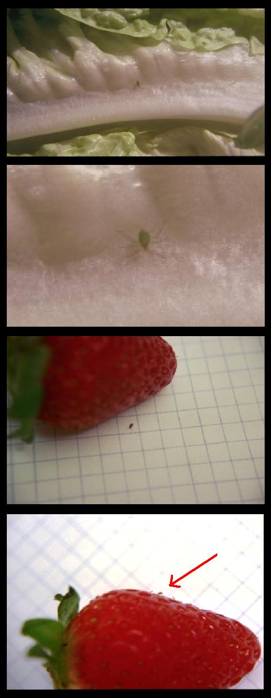
פרק ד - תולעים הגדלים בפירות בעודם מחוברים לקרקע
הקדמה:
בפרק זה נלמד בדין תולעים שגדלו בפירות בעודם (הפירות) מחוברים לקרקע.
נאמר בתורה -"וכל השרץ השורץ על הארץ שקץ הוא לא יאכל"
מפסוק זה למדו חז"ל שדווקא תולעת שהלכה על הארץ אסורה באכילה, ולאו דווקא שהלכה על הארץ, אלא כל שהיתה מחוץ לפרי ונכנסה לפרי אסורה באכילה.
א. תולעת שהיתה מחוץ לפרי וחדרה לתוכו אסורה באכילה, וכן הפרי אסור באכילה עד שיוציא ממנו את התולעת.
ב. תולעת שנולדה בפרי והלכה בתוכו בעודו מחובר לעץ והעץ מחובר לקרקע גם כן נחשב שהתולעת הלכה על הארץ ואסורה באכילה, וזאת משום שהפרי מחובר לעץ והעץ מחובר לקרקע, וכן הפרי אסור באכילה עד שיוציא ממנו את התולעת. אולם יש חילוק באיזה פרי גדלה בו התולעת בעוד הפרי מחובר לעץ ונסביר:
1. ישנם פירות שנולדים בהם תולעים בעודם מחוברים לעץ כגון: תאנה, תמר (עיין תמונה מ"ס 9) ועוד, שהתולעת שגדלה בתוכם בעודם מחוברים לעץ, יש לתולעת מקום להלך בתוך הפרי לכן נחשבת תולעת זו כהולכת על הארץ ואסור לאכול פירות אלו עד שיסיר את התולעת מתוכם.
2. ישנם קטניות כגון: חומוס(עיין תמונה מ"ס 12), פול(עיין תמונה מ"ס 12) שנולדים בתוכם תולעים בעודם מחוברים לקרקע ואין התולעת שבתוכם אסורה באכילה עם הפרי וזאת משום שהתולעת שגדלה בתוכם אין לה מקום להלך בתוך הפרי, ולמעלה למדנו שדווקא תולעת שהלכה בתוכם אסורה, לכן אינם אסורים באכילה ובתנאי שהתולעת שנולדה בתוכם לא יצאה מתוכם מעולם בין כולה בין מקצתה, אלא היתה בתוכם מרגע שנולדה, וחשש זה הוא דווקא אם ראינו שהתולעת יצאה מתוכם אולם ברגע שיש בפנינו פרי כזה עם תולעת אין אנו חוששים שמא יצאה ואינה אסורה באכילה (עיין בהלכה ס"ב)
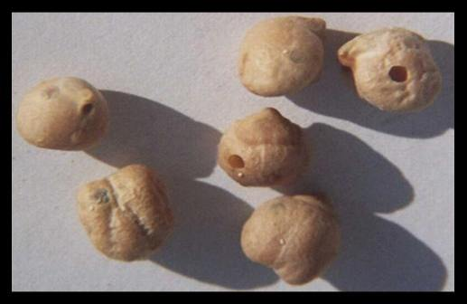
סיכום להלכה
א. כל מיני פירות וירקות שדרכן להתליע בעודן מחוברים לעץ כגון: תאנה תמר וכדומה, שיש לתולעת מקום להלך בתוך הפרי, אסור לאכול פרי זה עד שיסיר את התולעת ממנו.
ב. קטניות שדרכן להתליע במחובר כגון: חומוס, פול וכדומה, שאין לתולעת מקום להלך בתוך הפרי, אינו נאסר באכילה (1- כל הקדמה זו וכן פסק ההלכה היא לפי שיטת השו"ע - אולם בדין זה בתולעת שגדלה בקיטנית ואין לה מקום להלך ישנה מחלוקת ראשונים ואחרונים שיש מתירים וכן פסק השו"ע. ויש אוסרים אע"פ שהתולעת לא הלכה כלל בתוך הפרי וכן פסק הרמ"א לאסור וכן נוהגים אחינו האשכנזים) (2- כן פסק השו"ע סימן פד ס"ו וכן פסק הרשל"צ עובדיה יוסף שליט"א בהליכות עולם ח"ו עמ' ר"ס ויש מרבותינו שפסקו לאסור אע"פ שלא הלכה בתוך הפרי וכן פסק הרמ"א וכן נוהגים אחינו האשכנזים לאסור, וכן פסק הרב משה ויא שליט"א בעמ' 160, ועיין בספר תולעת שני עמ' לד.). אולם כל מה שהתרנו בזה הסעיף זהו דווקא שאוכלם חיים (לא מבושלים) או קלויים, אולם אם רוצים לבשל קטניות כגון חומוס פול שעועית וכדומה, חובה לבודקם (שו"ע סימן פד' ס"ח) וזאת משום שבזמן שנותנים את הקטניות במים שבסיר, אז המים גורמים לתולעים שבקטניות לצאת החוצה והרי הם אסורים באכילה, שהרי כל מה שהתרנו זה דווקא שאוכל את הפרי והתולעת שבתוכו לא יצאה מעולם, אולם אם התולעת יצאה מתוכו בכל דרך שהיא הרי היא אסורה באכילה. לכן הבא לבשל קטניות כגון חומוס פול וכדומה עליו להשרותן כשמונה שעות במים צוננים (בדיקת המזון כהלכתה עמ' 738) ולאחר מכן לבודקם אחד אחד ולהסיר את כל המתולעים, ואחר בדיקה זו ירתיח את המים שבסיר הבישול ובזמן שהמים רותחים רק אז יתן לתוכו את הקטניות, כך שאם נשארו גרגרים עם תולעים בתוכם הרי הם ימותו מיד ולא יצאו החוצה לתבשיל (5-6).
(5- ודעת השו"ע שאם יפרשו אחר שמתו אינם אסורים באכילה וזאת משום שתולעת זו שהיתה בתוך החומוס לא היתה אסורה קודם שפירשה וכן בזמן שפירשה היא היתה כבר מתה ואינה אסורה באכילה וכן פסק הרב שניאור זלמן רווח שפירשה מתה מותרת, וכן כתב בעין יצחק עמ' שדעת מרן כהסתם. ויש מרבותינו האחרונים שאוסרים בפירשה מתה )
(6- . ואם רוצים לטחון את החומוס לפלאפל או לסלט טחינה וכדומה מותר מצד הדין לטוחנו בלי שום בדיקה תחילה הואיל ואם יש בו תולעים הם נטחנים גם כן ובטלים ברוב, ואינו נחשב מבטל איסור לכתחילה כיון שאינו מתכוון לטוחנן כדי לבטל התולעים אלא כדי לעשות קציצות או סלט טחינה (אין ללמוד מפה לגבי טחינת פירות וירקות אחרים) , ומ"מ כיון שהדרך לשרות את החומוס במים צוננים כדי שיתרכך ויהיה אפשר לטוחנן, לפיכך אם רואים חומוס גרגירי מנוקבים ומתולעים צפים על פני המים, צריך להסירם ולא לטוחנן עם שאר החומוס, אולם יש מחמירים לבדוק את כל החומוס אחד אחד ולהסיר המנוקבים וכן נוהגים אחינו האשכנזים.(תפילה למשה ח"ג סימן ז'))
כנימות הנמצאים על גבי הפירות
(עיין תמונה 22)
כנימות הנמצאות על גבי פירות שונים, אסור לאוכלן כדין שרץ הארץ, כגון: אלו הנמצאות על גבי קליפת התפוז, ובעת שקולף התפוז נדבקות על ידו וחוזרות ונדבקות על התפוז, ויש בזה משום איסור שרץ הארץ (תולעת שני עמ' לז).
לכן תפוז שנגוע בכנימות צריך זהירות יתירה בזמן שקולפו, והנכון יותר שישטוף את הפרי לפני הקילוף (עיין פרק טז ערך תפוז ותמונות מס’ 22)
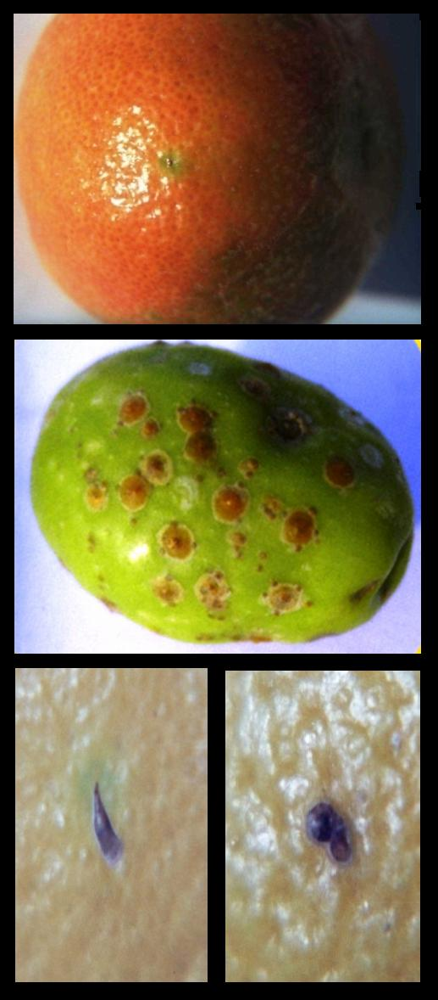
פרק ה - תולעים הגדלים בפירות בזמן שאינם מחוברים לקרקע
הקדמה:
בפרק הקודם למדנו לגבי תולעים הגדלים בפרי, והלכו בתוכו בעודו מחובר לעץ שהפרי אסור באכילה אלא אם כן יסיר את התולעת מהפרי.
בפרק זה נלמד לגבי תולעת שנולדה (ראה הערה 1) בפרי שאינו מחובר לעץ שאינה אסורה באכילה כדלהלן:
נביא דוגמא: אדם קנה פרי או ירק שדרכו להתליע לאחר שנקטף מן העץ וכשרוצה לאוכלו הוא רואה תולעת בתוך הפרי, כגון שרואה את הפרי נקוב לחוץ, ותולעת בתוך הפרי בפנים. הדין הוא שמותר לאכול את הפרי ביחד עם התולעת שבו1 וזאת משום שהתולעת נולדה בפרי לאחר שנתלש מן העץ, והתורה לא אסרה עלינו תולעת זו באכילה אף על פי שהתולעת הלכה בתוך הפרי, אולם לדין זה צריך מספר תנאים, והם:
א.שהתולעת נולדה בתוכו ולא באה מבחוץ וחדרה לתוכו (ראה הערה 2)
ב.שלא עברה מפרי לפרי כגון שני פירות דבוקים זה לזה, והתולעת עברה מאחד לשני.
ג.שלא יצאה התולעת כולה או מקצתה מחוץ לפרי וחזרה לתוכו.
ד.שלא הלכה על גרעינו (אם יש לו גרעין).
ה.שלא הלכה על גבי הפרי מבחוץ.
ו.שידוע לנו על ידי מומחים בדבר, שבודאי דרכו של פרי זה להתליע רק בתלוש.
(הערה 1 - כן פסק השו"ע סימן פד ס"ד שאע"פ שחורו נקוב לחוץ לא חוששים שמא יצאה וחזרה. ולדעת הרמ"א ס"ד לאסור וכן נוהגים אחינו האשכנזים וכן יש מרבותינו הספרדים שאוסרים.)
(הערה 2 - נולדה בו דווקא אבל אם התולעת באה מבחוץ וחדרה לתוכו הרי היא אסורה והיא בכלל השרץ השורץ.)
אולם להלכה ולמעשה לנו האנשים הפשוטים שאין אנו מומחים בדבר לדעת איזה פרי דרכו להתליע בתלוש, ואיזה במחובר, היות והדבר משתנה לפי המציאות, כגון: מאיזו מדינה או באיזה זמנים של השנה, וכן באיזה שיטות טופל פרי זה, האם עבר ריסוס בהיותו בשדה, ועוד דברים שעשויים להשתנות, לכן כל זמן שאיננו יודעים בבירור מאנשי מקצוע נאמנים שפרי זה דרכו להתליע בתלוש, דינו כספק ומספק אסור באכילה (וכן פסק השו"ע סימן פד' סד' שבספק אם התליע בתלוש או במחובר אסור באכילה עד שיסיר את התולעת. ועיין בהליכות עולם ח"ו עמ' רסו מה שכב בזה) ולכן צריך להסיר את התולעת קודם האכילה.
סיכום להלכה (כן פסק השו"ע סימן פד' ס"ד)
תולעת שנולדה בתוך פרי שאינו מחובר לקרקע, מותרת, כל זמן שלא יצאה מחוץ לפרי, אולם אם התולעת שנולדה בפרי שאינו מחובר לקרקע יצאה כולה או מקצתה אל מחוץ לפרי, או שהלכה על גבי הפרי עצמו מבחוץ, או על הגרעין שבתוכו, או שעברה מפרי לפרי, הרי היא אסורה באכילה, וכן הפרי אסור באכילה עד שיסיר את התולעת ממנו, אולם אם יצאה התולעת מתוך הפרי לאחר מותה אינה אסורה (שו"ע שם ס"ד וכן פסק הרב שניאור ז' רווח עמ' לה-ויש מרבותינו האחרונים שאוסרים בפירשה מתה וביארו גם כן בדעת השו"ע לאסור וכן פסק הרב משה ויא עמ' צא.), וכן אם הפרי נקוב לחוץ ורואה את התולעת בתוכו לא חוששים שמא יצאה החוצה וחזרה אלא אינה אסורה באכילה עם הפרי (הערה 2 למעלה) אולם כל מה שהתרנו לאכול פרי שדרכו להתליע בתלוש בתנאי שיש בו את כל התנאים הנ"ל. זהו דווקא כשאוכלם חיים כמו שהם, אולם אם רוצים לבשל פרי זה שהתליע בתלוש, צריך לבדקו היטב קודם הבישול (שו"ע סימן פד' ס"ח) וזאת משום שבזמן שנותנו בסיר הבישול, המים שבסיר גורמים לתולעים שבתוך הפרי לצאת החוצה בעודם חיים והרי הם אסורים באכילה ואוסרים את התבשיל כולו (ואם בישלו ללא בדיקה עיין בפרק י ,וכן לגבי סינון התבשיל ומה הדין שאי אפשר לסנן).
לכן קודם הבישול יבדוק את הפירות בבדיקה חיצונית ואח"כ ישרה את הפירות במים צוננים, כך שהמתולעים והמנוקבים יעלו למעלה ויצופו וכן התולעים יצופו וישליכם, ואח"כ יתנם במים רותחים כך שאם נשארו תולעים שלא יצאו, ימותו מיד בעודם בתוך הפרי (כן פסק השו"ע סימן פד ס"ח, ואם יפרשו אחר שמתו אינם אסורות כנ"ל בהלכה והערה 5 , ועיין בפרק י אם בישלם בלא בדיקה זו מה הדין).
פרק ו - איזה מאכלים חייבים בבדיקה קודם האכילה
בפרק זה נלמד האם כל מאכל חייב בבדיקה מתולעים קודם האכילה, או שיש מאכלים שמותר לאכלם בלא בדיקה ?
תשובה:
א. כל מיני פירות, ירקות, קטניות, דגים, וכן כל מיני מאכל שאנו יודעים שברוב הפעמים מצוי שיהיו בו תולעים, חרקים, וכדומה, כגון פטרוזיליה, כרוב, חסה, פול יבש, וכדומה, אסור לנו לאוכלם ללא בדיקה, זאת משום שאנו יודעים שברוב הפעמים יש בהם תולעים ואסור בשום אופן לאכלם ללא בדיקה (ראה הערה 1), ומאכלים אלו מוגדרים "מוחזק כנגוע בתולעים".
ב. ישנם גידולים שאפילו שברוב הפעמים אין מצוי בהם תולעים מכל מקום מצוי להיות בהם תולעים הכוונה היא שאמנם לא תמיד יש בהם תולעים וגם לא ברוב הפעמים, אבל מצוי להיות בהם תולעים לכן גם פירות אלו אסור לאוכלם בלא בדיקה וסוג זה מוגדר "כמיעוט המצוי" שחייבו חכמים לבודקם קודם האכילה.
ג. ישנם פירות וירקות שרק לעיתים רחוקות מצוי בהם תולעים, בסוג כזה לא חייבו חכמים כלל בדיקה קודם האכילה והם מוגדרים "מוחזק כנקי" (ראה הערה 2).
(הערה 1. שו"ע סימן פד ס"ו, ולמעשה כל מיני עלי ירק מגידול רגיל כגון פטרוזיליה וכדומה כמעט ואינו אפשרי במציאות לנקותם היטב לכן תמיד צריך לרכוש רק מגידול מיוחד ללא תולעים.)
(הערה 2. עיין ילקוט יוסף איסור והיתר ח"ב עמ' רכד אם אכל ירק זה שלא חייבו אותו חז"ל בבדיקה והיתה בו תולעת מה הדין.)
נגדיר אותם באחוזים:
"מוחזק כנגוע" - הכוונה סוג ירק/פרי וכדומה שהימצאות תולעים בו
כ - 50% או יותר, לכן חייב בבדיקה קודם האכילה.
"מיעוט המצוי" - הכוונה שהימצאות תולעים בסוג ירק/פרי זה
בין 30% ל 49% לכן חייב בבדיקה קודם האכילה.
"מוחזק כנקי" - הכוונה שהימצאות התולעים בו הוא
פחות מ- 30% (ראה הערה 3)
סיכום להלכה:
מאכלים שדרכם להתליע בין שהם מוגדרים "מוחזק כנגוע" כלומר שברוב הפעמים נגועים בתולעים מ- 50% ומעלה ובין מאכלים המוגדרים "כמיעוט המצוי" הכוונה שמצוי בו תולעים מ 30% ל- 49% חייב בבדיקה קודם האכילה (4). ומאכלים שנגיעות התולעים בהם בפחות מ 30% "מוחזקים כנקי (5 –6) אולם ראוי לכל ירא שמים לבדוק כל מאכל קודם האכילה. (היות ויש דעות המחמירות בפחות משעור זה עיין בהערה 7)
כל זה על פי עיקר הדין אולם למעשה בפועל קשה לשער היות ובעניין הימצאות תולעים במזון יכולה להשתנות במציאות כגון סחורה הבאה ממדינות שונות שבמדינה אחת סוג מזון אחד נחשב כנגוע בתולעים וחייב בבדיקה ואילו במדינה אחרת הוא בחזקת נקי מתולעים. וכן יכול להיות ששדה אחת טופלה כראוי בנושא חרקים ואילו השדה השנייה לא טופלה כלל או שגדל בגינה פרטית שעל פי רוב לא מטפלים בה כלל בנושא זה. וכן יכול להשתנות מציאות התולעים בעונות השנה. וכן כיצד אוחסן סוג מזון זה. וכן בכמות התחלופה שישנו, חילוק בין חנות לחנות וכן עוד דוגמאות שונות. לכן ראוי לכל ירא שמיים לבדוק כל מאכל קודם האכילה.
הערות:
הערה 3 - נפרט כיצד מחשבים את אחוז הנגיעות בפועל: (הנעשית אך ורק על ידי מומחים בדבר, וכן ישנם עוד בדיקות שונות שעושים וזו רק אחת מהם לדוגמא)
הקדמה: ישנו חילוק כיצד לחשב בין פירות או ירקות שנאכלים כל אחד בפני עצמו כגון תמר תות שדה וכדומה. לבין קטניות כגון חומוס שעועית וכדומה שאינם נאכלים אחד אחד בפני עצמו אלא בכמות מסוימת:
ראשית נפרט בפירות וירקות.
נביא דוגמא וממנה נלמד לכלל: (דוגמא זו היא רק אחת משיטת הבדיקות שעושים המומחים בדבר)
אם אנו רוצים לדעת כיצד להגדיר את התמר היבש האם "מוחזק כנגוע", או "כמיעוט המצוי" או "מוחזק כנקי" ניקח לדוגמא חמש מאות תמרים במשך שנה כך שנקיף את כל עונות השנה ונבדקם כך...אם נמצא בבדיקה שבמאתיים וחמישים תמרים או ביותר מתוך החמש מאות נמצאו תולעים נמצא שתמר נחשב "מוחזק כנגוע", לכן מכאן ולהבא חובה לבדוק כל תמר שרוצים לאכול.
ואם נמצאו בבדיקה בין מאה וחמישים למאתיים וארבעים ותשע תמרים, מתוך החמש מאות עם תולעים, אז נגדיר אותו "כמיעוט המצוי" אולם עדיין חובה לבודקו קודם האכילה כמו שציוונו חכמים ולכן מכאן ולהבא חובה לבדוק כל תמר שרוצים לאכול.
אולם אם היה נמצא בבדיקה עד מאה וחמישים תמרים עם תולעים אז היינו מגדירים מאכל זה "מוחזק כנקי".
כעת נלמד כיצד מגדירים "מוחזק כנגוע", "מיעוט המצוי", או "מוחזק כנקי"
בקטניות פיצוחים ושאר גרגרים שבדרך כלל אינם נאכלים אחד אחד
בדין זה ישנם ד' דעות : באיזה כמות מאכל יש לנו לחשב את אחוזי הנגיעות.
דעה א' - שתלוי בכמות שרגילים לקנות שק/שקית וכדומה (הגרי"ש אלישיב שליט"א)
דעה ב' – שתלוי בכמות שרגילים לבדוק (הגרי"ש ווזנאר שליט"א)
דעה ג' – שתלוי בכמות שרגילים לבשל (הגר"נ קרליץ שליט"א)
דעה ד' – שהולכים לפי ראשים או אגודות כגון בחסה, ולא לפי העלים (הרש"ז אויירבך זצ"ל)
כעת נבארם אחת אחת בס"ד
נביא דוגמא וממנה נלמד לכלל: (הנעשית אך ורק על ידי מומחים בדבר)
לדעה א'
כגון שאנו רוצים לדעת כיצד להגדיר את האורז האם "מוחזק כנגוע", או "כמיעוט המצוי" או "מוחזק כנקי" ניקח לדוגמא מאה שקיות אורז של 1 ק"ג (זו האריזה הנמכרת בדרך כלל) במשך שנה כך שנקיף את כל עונות השנה ונבדקם כך...
אם נמצא בבדיקה שבחמישים שקיות או יותר מתוך המאה נמצאה אפילו תולעת אחת בשקית נמצא שהאורז נחשב "מוחזק כנגוע" לכן מכאן ולהבא חובה לבדוק כל אורז שרוצים לאכול.
ואם נמצא בבדיקה שבין 30 ל-49 שקיות אורז מתוך המאה נמצאה אפילו תולעת אחת בכל שקית אז נגדיר אותו "כמיעוט המצוי" אולם עדיין חובה לבודקו קודם האכילה כמו שציוונו חכמים, ולכן מכאן ולהבא חובה לבדוק כל אורז שרוצים לאכול.
אולם אם נמצא בבדיקה שבפחות מ-30 שקיות אורז נמצאו תולעים אז הינו מגדירים מאכל זה "מוחזק כנקי".
לדעה ב'
כגון שאנו רוצים לדעת כיצד להגדיר את האורז האם "מוחזק כנגוע", או "כמיעוט המצוי" או "מוחזק כנקי" ניקח לדוגמא אדם שרגיל לבדוק כוס אורז אחת פעמיים בשבוע כך שבערך הוא בודק כ 100 כוסות אורז בשנה נעשה בדיקה במשך שנה כך שנקיף את כל עונות השנה ונבדקם כך...
שאם נמצא בבדיקה שבחמישים כוסות אורז או יותר נמצאה אפילו תולעת אחת בכל כוס נמצא שהאורז נחשב "מוחזק כנגוע" לכן מכאן ולהבא חובה לבדוק כל אורז שרוצים לאכול.
ואם נמצא בבדיקה שבין 30 ל-49 כוסות אורז מתוך המאה נמצאה אפילו תולעת אחת בכל כוס אז נגדיר אותו "כמיעוט המצוי" אולם עדיין חובה לבודקו קודם האכילה כמו שציוונו חכמים ולכן מכאן ולהבא חובה לבדוק כל אורז שרוצים לאכול.
אולם אם היה נמצא בבדיקה שבפחות מ-30 כוסות אורז נמצאו תולעים אז הינו מגדירים מאכל זה "מוחזק כנקי".
לדעה ג'
כגון שאנו רוצים לדעת כיצד להגדיר את האורז האם "מוחזק כנגוע", או "כמיעוט המצוי" או "מוחזק כנקי" ניקח לדוגמא אדם שרגיל לבשל כוס אורז אחת פעמיים בשבוע כך שבערך הוא מבשל כ 100 כוסות אורז בשנה נעשה בדיקה במשך שנה כך שנקיף את כל עונות השנה ונבדקם כך...
שאם נמצא בבדיקה שבחמישים או ביותר כוסות אורז נמצא אפילו תולעת אחת בכל כוס אחת נמצא שהאורז נחשב "מוחזק כנגוע" לכן מכאן ולהבא חובה לבדוק כל אורז שרוצים לאכול.
ואם נמצא בבדיקה שבין 30 ל-49 כוסות אורז מתוך המאה נמצא אפילו תולעת אחת בכל כוס אז נגדיר אותו "כמיעוט המצוי" אולם עדיין חובה לבודקו קודם האכילה כמו שציוונו חכמים ולכן מכאן ולהבא חובה לבדוק כל אורז שרוצים לאכול.
אולם אם היה נמצא בבדיקה שבפחות מ-30 כוסות אורז נמצאו תולעים אז הינו מגדירים מאכל זה "מוחזק כנקי".
לדעה ד'
כגון שאנו רוצים לדעת כיצד להגדיר את הפטרוזיליה האם "מוחזקת כנגוע", או "כמיעוט המצוי" או "מוחזקת כנקי" ניקח לדוגמא מאה אגודות של פטרוזיליה במשך שנה כך שנקיף את כל עונות השנה ונבדקם כך....
שאם נמצא בבדיקה שבחמישים אגודות או ביותר מתוך המאה נמצא בכל אגודה אפילו תולעת אחת נמצא שפטרוזיליה נחשבת "מוחזק כנגוע" לכן מכאן ולהבא חובה לבדוק כל פטרוזיליה שרוצים לאכול.
ואם נמצא בבדיקה שבין 30 ל 49 אגודות מתוך המאה עם תולעים אז נגדיר אותו "כמיעוט המצוי" אולם עדיין חובה לבודקו קודם האכילה כמו שציוונו חכמים ולכן מכאן ולהבא חובה לבדוק כל פטרוזיליה שרוצים לאכול.
אולם אם היה נמצא בבדיקה שבפחות 30 אגודות נמצאו תולעים אז הינו מגדירים מאכל זה "מוחזק כנקי".
הערה 4 - לא חילקנו בין מאכלים שדרכם להתליע במחובר לבין מאכלים שדרכם להתליע בתלוש שיש אומרים שהם פטורים מבדיקה וכן פסק בילקוט יוסף הנ"ל עמ' רטו, אולם עיין בהקדמה לפרק ה' שקשה לדעת איזה סוג מאכל מתליע בתלוש ואיזה במחובר.
הערה 5 - בדין זה ישנם שתי שיטות עיקריות (את הדעה השניה עיין בהערה 7), בהלכה למעלה הבאנו כמו שפסקו: הרה"ג יוסף פרץ בספרו יוסף לקח שמ - 30% ומעלה זהו שיעור של מיעוט המצוי. וכיוצא בזה כתב בילקוט יוסף איסור והיתר ח"ב עמ' ריא שמיעוט המצוי הוא קרוב למחצה, וכן נראה דעת מרן הרשל"צ עובדיה יוסף שליט"א. והובאו דבריו בתולעת שני עמ' צא שכתב: שבישיבתי עם מו"ר הרשל"צ הגר"ע שליט"א שאמר לו כמה פעמים שאפשר שהשיעור הוא הרבה יותר מ-10%, ובכל אופן המחמיר לא יחמיר בפחות מ 10%. עכ"ל. ונראה שכוונת מרן הרשל"צ שהשיעור הוא הרבה יותר היינו כפי שכתב הריב"ש בתשובה, שמיעוט המצוי הוא קרוב למחצה. וכן הוא בילקוט יוסף איסור והיתר (ח"ב עמ' ריא), וכן הורה הרה"ג יעקב יוסף שליט"א שעיקר הדין כהריב"ש והמחמיר מ 10% תע"ב וכן הורה למעשה הרה"ג מאיר מאזוז שליט"א. והובאו דבריו בספר יוסף לקח הנ"ל.
הערה 6 - עין בפרק הבא במידה וחוששים שהתליע האם חייב לבודקו כגון שאוחסן בתנאים לא טובים.
הערה 7 - כן הורה הגרש"ז אויירבך זצ"ל וכן פסק להלכה ולמעשה הרה"ג שניאור ז' רווח שליט"א עמ' צא וכן נוהגים אחינו האשכנזים שמיעוט המצוי הוא מ 10% ויש מחמירים אף בפחות מ 10%
פרק ז - דיני הבדיקה
הקדמה:
בפרק הקודם למדנו באילו סוגי מאכל יש לנו חובה לבדקם קודם האכילה,
ובפרק זה נלמד האם חובה לבדוק את כל הכמות שרוצים לאכול או להשתמש בה, או די בבדיקת מדגם, כך שאם נמצא שבדיקת המדגם נקייה, אז את השאר נאכל ללא בדיקה, ואם נמצא בה תולעים אז נבדוק את כולה. או שלא מועיל כלל בדיקת מדגם.
וכן נלמד באיזה מאכל כן מועיל בדיקת מדגם ובאיזה מאכל לא מועיל.
נסביר בקצרה כיצד מבצעים בדיקת מדגם: בדיקת המדגם היא כך: לבדוק כמות שתשקף את הוודאות של הניקיון מחרקים, ולכן במקום ששלשה פריטים יכולים להוכיח על הכלל, די בזה, אולם במקום שאין די בזה, אז שיעור הבדיקה היא בכמות שתוכיח נקיות של המוצר כגון שיקח כמות קטנה מכמה מקומות בתוך השקית/השק, ואם הבדיקה מכל המקומות תצא נקיה, אזי יש להניח שהמוצר נקי – ולהלכה ולמעשה קשה להגדיר בכל סוגי המזון כמות של בדיקת מדגם, ויש לבחון כל דבר לגופו.
סיכום להלכה:
א. מאכל הטעון בדיקה, צריך לבדוק את כל הכמות שרוצים להשתמש בה, ואין להסתמך על בדיקת מדגם או בדיקת רובו (ראה הערות 1-2) גם כאשר המדגם או הרוב נמצא נקי מתולעים - כגון: תאנים לעשות מהן ריבה צריך לבודקם אחת אחת קודם השימוש בהם וכל שכן אם רוצה לאוכלם חיים כמות שהם.
(הערה 1. שו"ע סימן פד ס"ח וכן פסק בספר בתולעת שני עמ' קא וכן פסק בספר בדיקת המזון כהלכתה עמ' 121.)
(הערה 2. אולם במאכל המוגדר כמיעוט המצוי שרוצים לטוחנו מועיל לו בדיקת מדגם כך שאם נמצא נקי בבדיקת המדגם מותר לטוחנו ואין צריך לבדוק אחד אחד ואם נמצאו תולעים בבדיקה. חובה לבדוק את כולו. (תולעת שני עמ' ע-עב.))
חיוב הבדיקה הוא גם כאשר משתמשים בכמות גדולה ויש טרחה בבדיקה, כגון: בבתי מלון, בבתי חרושת לשימורים ולקפואים, אולמות אירועים ועוד (בדיקת המזון כהלכתה עמ' 121).
ב. פרי המוחזק כנקי שאינו חייב בבדיקה אם חוששים שמא התליע כגון: שאוחסן זמן ממושך, אפשר להסתפק "בבדיקת מדגם", ואם נמצאו תולעים במדגם יש לבדוק את המוצר כולו (בדיקת המזון כהלכתה עמ' 122) .
ג. מאכל שנבדק כולו, ונמצא נגוע בתולעים רק בחלק ממנו, אפשר להסיר ממנו את החלק הנגוע, ומותר להשתמש בשאר המאכל, כגון: אורז שנמצאו בו תולעים, מותר להסיר את התולעים, ולהשתמש בשאר האורז (בדיקת המזון כהלכתה עמ' 122. ואם המזון מאוס בעיניו, יכול לזורקו ואין בזה משום בל תשחית עמ' 120).
ד. מאכל שנבדק כראוי ולאחר מכן אוחסן באופן שעלול להתליע מחדש, יש לבודקו שוב לפני השימוש, כגון: תבלינים או קטניות שנבדקו ולאחר מכן אוחסנו זמן ממושך, צריך לבדקם שנית (בדיקת המזון כהלכתה עמ' 126. קמח שנופה ושהה יותר מיממה יש לנפותו שוב קודם השימוש, ואם נשמר בהקפאה מיד אחר הניפוי עד זמן השימוש לא צריך לנפותו שוב אפילו לאחר זמן רב), לכן רצוי לאחסן תבלינים וקטניות בתא ההקפאה.
פרק ח - הנאמנים על הבדיקה
א. איש או אשה שהגיעו לגיל מצוות היינו אשה בגיל י"ב ואיש בגיל י"ג ומדקדקים במצוות נאמנים על בדיקת תולעים, ובתנאי שהם מכירים את הנגיעות ובודקים בצורה יעילה (שו"ע סימן פד ס' יא, ילקוט יוסף איסור והיתר ח"ב עמ' רנ – בדיקת המזון כהלכתה עמ' 128) .
ב. אמנם אשה שאינה מדקדקת במצוות, אינה נאמנת ומי שיודע באשתו שהיא בודקת במהירות ולא במתינות אלא בהעברה בעלמא, אין לסמוך עליה, אבל אם היא זריזה מטבעה אך בודקת בדייקנות, יש לסמוך עליה, ואם נמצאו תולעים אחר בדיקתה כגון חלזון, אין לסמוך על בדיקתה אולם אם לא נמצאו אלא תולעים המתליעים בתוך העלים שאינם נראים אלא לאחר בישול מותר לאכול מבדיקתה (שו"ע סימן פד ס' יא, ילקוט יוסף איסור והיתר ח"ב עמ' רנ).
ג. אדם שהוא בעל ראייה חלשה, שאינו מבחין בדברים קטנים אין לסמוך על בדיקתו, אך אם בעזרת משקפים הוא רואה ובודק היטב הרי הוא נאמן על הבדיקה (בדיקת המזון כהלכתה עמ' 128).
פרק ט - דיני ביטול
הקדמה:
בפרקים הקודמים למדנו על איסור אכילת תולעים וכן גודל התולעת האסורה, וכן באיזה פירות נולדו התולעים, וכן איזה פירות חייבים בבדיקה, וכן האם מועיל בדיקת מדגם, וכן מי הם הנאמנים בבדיקת תולעים.
בפרק זה נלמד מה יהיה הדין אם התערבה תולעת במאכל האם המאכל נאסר באכילה או לא.
וכן נלמד האם יש חילוק באיזה סוג של מאכל התערבה התולעת.
וכן האם יש חילוק אם התולעת התערבה מעצמה כגון שנפלה תולעת לתבשיל וכן מה יהיה הדין אם התערבה בתבשיל בשוגג, כגון: שהמבשל לא ידע שיש תולעים בסוג מאכל זה שצריך לבודקו קודם השימוש בו והשתמש בו ללא בדיקה.
וכן מה יהיה הדין אם התערבה התולעת במזיד כגון שהמבשל ידע שיש בסוג מאכל זה תולעים ואסור לבשלו ללא בדיקה ואף על פי כן בישלו ללא בדיקה.
וכן האם שונה הדין אם התולעת שהתערבה במאכל היתה שלימה או חצי תולעת או פחות מחצי, או שהתולעת התרסקה לגמרי עד שאי אפשר לזהותה כלל.
להלכה:
(בדיני ביטול ישנם פרטים רבים שיכולים לשנות את ההלכה, לכן בכל שאלה יש לשאול מורה הוראה מוסמך)
א. תולעת שלימה או חצי תולעת או אפילו פחות מחצי תולעת כל זמן שניתן לזהותה, שהתערבה בתבשיל או סלט וכדומה הרי היא אוסרת את המאכל באכילה עד שיוציאו אותה משם ורק אז מותר המאכל באכילה (בדיקת המזון כהלכתה עמ' 134-138, תולעת שני עמ' סב, ועיין בהמשך לגבי התבשיל סעיף ג').
ב. תולעת שהתערבה במאכל והתרסקה לגמרי עד שאי אפשר לזהותה הרי היא בטילה בתערובת והכל מותר באכילה (תולעת שני עמ' עד, בדיקת המזון כהלכתה עמ' 139), במה דברים אמורים שתולעת שנתרסקה לגמרי, בטילה בתערובת ומותר הכל באכילה זהו דווקא שנתרסקה בשוגג כגון:
1. מאכל שהוא מוחזק כנקי שלא צריך לבודקו קודם האכילה ולאחר שנטחן נודע שהיו בו תולעים, והטוחן לא ידע מזה, בדיעבד הכל מותר משום שנתרסקה התולעת לגמרי ובטילה בתערובת (תולעת שני עמ' עד).
2. כשהטוחן לא ידע שיש תולעים במאכל זה ושצריך לבודקו קודם האכילה, וטחנו כדי לאוכלו טחון, מותר לאוכלו משום שהתולעת התרסקה לגמרי ובטילה בתערובת (תולעת שני עמ' עד).
3. אולם אם הטוחן ידע שיש במאכל זה תולעים וטחנו בכוונה כדי לבטל את התולעים בתערובת, מאכל זה אסור באכילה לטוחן ולבני ביתו. וכל זה אם המאכל שלו, או שנתכוין לטחון ולבטל האיסור בשביל עצמו אף אם אינו שלו. וכן נאסר המאכל למי שנטחן עבורו, ויודע שהטחינה והביטול נעשה בשבילו, ונוח לו בכך אף אם לא אמר לו לבטל עבורו, ואם טחן בסתם לכל אדם שיחפוץ בזה, לא נאסר עליהם המאכל, כיון שהם לא יודעים מזה ולא נוח להם (תולעת שני עמ' עד).
ג. מאכל שנתבשל או נאפה מבלי שנבדק מתולעים כגון שהמבשל או האופה לא ידעו שיש בסוג מאכל זה תולעים שצריך לבודקו, אם אפשר לבודקו לאחר הבישול חייבים לבודקו, ואם אי אפשר לבודקו, כגון שנמעך כל כך עד שאין אפשרות לבודקו מותר באכילה. ואפילו אם השתמשו בפירות שדרכן להתליע (בדיקת המזון כהלכתה עמ' 151, ילקוט יוסף איסור והיתר ח"ב עמ' רמט) (מיעוט המצוי).
ואם נמצאו בתבשיל תולעת אחת או שתיים מוציא אותם, והשאר מותר באכילה. אבל
אם מצא שלש תולעים כל התבשיל אסור. ודווקא מאכל שאי אפשר לסננו ולהסיר ממנו התולעים ומאחר שהוחזק כולו בתולעים כולו אסור. אבל אם אפשר לסננו במסננת צפופה באופן שכל התולעים לא יעברו דרך המסננת אז המרק העובר דרך המסננת מותר והירקות אסורים. ואם היה בשר במרק אפשר לשוטפו ומותר באכילה. ובתולעים קטנים שעוברים דרך המסננת אף המרק אסור.
אולם אם מצאו ג' תולעים וכדומה שאינם מתהווים מגוף הפירות אלא מבחוץ, כגון נמלים או זבובים וכדומה מותר לאכול את התבשיל לאחר השלכת הנמלים או הזבובים, ששמא לא באו אלא אלו בלבד, ובכל זאת המחמיר גם בנמלים שלא לאכול את התבשיל תבוא עליו הברכה (בדיקת המזון כהלכתה עמ' 151, ילקוט יוסף ח"ב עמ' רמט) .
ד. הרוצים להניח בתבשיל עלי ירק שונים מגידול רגיל שיש בהם חשש לתולעים, כגון כוסברה, פטרוזיליה, וכדומה כדי לתת טעם טוב בתבשיל, וחוששים שלא יצליחו לבדוק היטב את העלים, רשאים להכניס את העלים לתוך שקית מבד, כגון בד של חולצה עבה מניחים בתוכו את העלים וקושרים הדק היטב, כך שאין התולעים יכולים לעבור לתבשיל, ולהניחה כך בתבשיל, ובלבד שיזהר שבזמן שמערבב את התבשיל שלא תקרע השקית, ובגמר הבישול ישליך השקית עם עלי הירק (תולעת שני עמ' סה). (עיין שער רביעי ערך ע ירקות עלים ביתר ביאור)
ה. מותר לעשות מיץ מפירות שמוחזק להיות בהם תולעים אפילו אם אי אפשר לבודקם ולבררם מבלי שיישאר בהם תולעים, ובלבד שינקם היטב כמה שאפשר קודם הסחיטה ולאחר הסחיטה יסנן את המשקה היטב על ידי בגד באופן שלא יעברו דרכו תולעים או חלקים מהם (ילקוט יוסף איסור והיתר ח"ב עמ' רסט, בדיקת המזון כהלכתה עמ' 143).
פרק י - תולעת שעברו עליה י"ב חודש
הקדמה:
חז"ל הקדושים מלמדים אותנו שכל סוגי החרקים/תולעים, אין בהם עצם ולפיכך אינם נשמרים בשלמותם לאחר שעברה עליהם שנה מזמן היוצרם. דהיינו שזמן חייהם הוא חצי שנה ואח"כ מתים, ולאחר ששה חודשים נוספים דינם כעפר ויצאו מכלל איסור אכילת תולעים.
בפרק זה נלמד מתי מועיל דין זה שעברו על התולעת י"ב חודש ומתי אינו מועיל.
להלכה
א. תולעת שעברו עליה שנים עשר חודש, הרי היא כעפר ויצאה מכלל איסור תולעים, לכן מאכל מתולע שעברו עליו י"ב חודש והוא מאוחסן באופן שהתולעים אינם יכולים להתרבות, וחרקים חדשים אינם יכולים לחדור לתוכו, מותר לאוכלו (ובשנה מעוברת צריך להמתין י"ג חודש), אמנם כל זה מועיל רק אם לפני האחסון החרקים שהיו בתוצרת מתו, כך שאינם יכולים להתרבות כגון שהניח את הקטניות במים רותחים (או שנתן את הקטניות בתא ההקפאה למשך של 48 שעות כך שכל התולעים מתו ולאחר מכן אוחסנו.) והחרקים שבתוכם מתו, מותר לייבשם ולאחסנם בצנצנת סגורה הרמטית, ולהשתמש בהם לאחר י"ב חודש (שו"ע סימן פד ס"ח, בדיקת המזון כהלכתה עמ' 156-157, תולעת שני עמ' פה).
ב. אולם אם המאכל (כגון חומוס יבש) אוחסן באופן שחרקים חדשים יכולים לחדור לתוכו, צריך לבודקו גם לאחר י"ב חודשים על ידי שריה במים צוננים ואז המתולעים והמנוקבים יצופו למעלה, וישליכם (ואם זה סוג מאכל שאי אפשר ליתנו במים כגון נענע יבשה וכדומה עיין בפרק טו ירקות עלים), ואחר כך ייתן את גרגרי החומוס במים רותחים, כך שאם נשארו בהם תולעים ימותו מיד מבלי שיפרשו ממקומם (שו"ע סימן פד ס"ח, ילקוט יוסף איסור והיתר ח"ב עמ' רטז, תולעת שני עמ' פה.עיין לעיל גבי תולעים הגדלים בתלוש בהלכה ובהערה)
ג. כל הדין שאמרנו שחרקים לאחר שנה אינם משתמרים, זהו דווקא אם לא עובדו בתנאים משמרים לכן מותרים משום שנעשה דינם כעפר, אולם אם התוצרת או הירק עובדו בתנאים משמרים, לא מועיל שיעברו עליו י"ב חודש כגון:
1. קופסאות שימורים, של זיתים כבושים (עיין תמונה 3) שלא בדקו וניקו אותם קודם הכבישה אע"פ שעברו עליהם י"ב חודש אסור לאוכלם ללא בדיקה משום שגם התולעים משתמרים בתוכם כמות שהם (בדיקת המזון כהלכתה עמ' 157, תולעת שני עמ' פו – אולם בילקוט יוסף איסור והיתר ח"ב עמ' כתב שקופסאות שימורים שעברו עליהם י"ב חודש מותר לאוכלם ללא בדיקה מהטעם הנ"ל).
2. כרובית (עיין תמונה 9) מגידול רגיל שהקפיאו אותה למשך י"ב חודש, גם לאחר י"ב חודש אסורה באכילה משום שהתולעים נשמרו כמו שהם, מחמת ההקפאה (בדיקת המזון כהלכתה עמ' 157, תולעת שני ח"א עמ' פו וכן בח"ג עמ' שיא בדין החרקים בירקות הקפואים, ועיין אצלנו פרק טו כיצד בדיקתה).
פרק יא - הלכות תולעים בדגים
(ההלכות המובאות בפרק זה לוקטו מספרו של הרה"ג שניאור ז' רווח שליט"א)
יהודי יקר
עליך לדעת שגם בדגים מצויים תולעים שאסורים באכילה משום "שרץ המים" לכן צריך לקנות את הדגים דווקא בחנויות הנמצאות תחת פיקוח כשרותי מהודר, המטפלת גם בעניין טפילים הנמצאים בדגים שמקורם מבריכות המטפלות בנושא זה של טפילים, או ממקורות ימיים שנקיים מטפילים, או שהדגים עובדו באופנים המסירים את הטפילים.
להלכה:
א. תולעים הנמצאות על בשר הדג מבחוץ כגון הטפילים למיניהם: "אורגולוס" (תמונה 32 בשער שלישי ערך ד דגים) או "לרניאה" (תמונה 32 שם) המצוי בקרפיון, או "סיפיריון לומפי" (תמונה שם) המצוי בדג רוטבש מזן מנטלה, או "כינת סלמון" (תמונה 34 שם) על גבי דגי סלמון ועוד, או בתוך מעי הדג, המצוי בהרבה מדגי הים הפתוח, או על שאר איבריו הפנימיים, כגון המצוי על ביצי הדגים השונים, או אותם הנמצאים בתוך המוח או הכבד של הדג, או הצמודים לשדרת הדג, אסורים, כיון שהתולעים הגיעו לדג מבחוץ וכיון שהם שרצו במים, הם אסורים משום שרץ המים. ולכן יש לבדוק היטב את הדגים המוחזקים כנגועים. וכמו כן יש לבדוק את ביצי הדגים המוחזקים כנגועים. וכפי המפורסם על ידי המומחים לדבר.
ב. תולעים הנמצאות בין עור הדג לבשרו, מותרים. ודווקא שאין רואים סימני חדירה על העור מבחוץ אולם אם יש סימני חדירה של הטפיל על העור, הרי שהטפיל נצמד לדג מבחוץ ואחר כך נכנס תחת העור כגון טפיל "הצצטודה" (תמונה 36 בשער שלישי ערך ד דגים) המצוי בדג בקלה מרלוזה, אזי דינו כטפיל של העור ואסור כדין שרץ המים.
ג. תולעים הנמצאות "בתוך בשר הדג" מותרים. אולם אם תולעים אלו יצאו מן הדג לשולחן או פרשו לקערה או לסיר הבישול אסורים. לכן אם מבשלים דגים טריים שיש חשש להמצאות תולעים בבשר הדג, יש להכניסם (את הדגים) לתוך סיר הבישול רק כאשר המים רותחים, כך שאם יש תולעים בדג הם ימותו מיד, ואין חשש שיפרשו (ובדגים קפואים אין לחוש לכך, שכן התולעים מתות מחמת ההקפאה.).
אולם מה שכתבנו שתולעים בבשר הדג מותרות היינו "בסתם תולעים" שאנו תולים שנוצרו בדג. אולם תולעים שברור לנו שבאו מבחוץ ואחר כך נכנסו לבשר הדג אסורות כדין שרץ המים (ראה הערה 2) . ולכן הקונה דגים שמצוי בתוך בשרם תולעת זו, חובה עליו לחטט אחריהן ולהוציאן מן הבשר קודם האכילה.
(הערה 2. בזמנינו ידוע וברור שתולעת הנקראת "אנסאקיס" קודם כניסתה לבשר הדג, היא מתפתחת בקרקעית הים משלב ביצה לשלב הזחל, ונבלעת ע"י דגיגים שאחר כך נבלעים על ידי הדג, והתולעת ממשיכה להתפתח על דופן מעי הדג, ולאחר מיתתו היא חודרת לבשר הדג. ותולעת זו אסורה כדין שרץ המים. תולעת זו מצויה בכמה מיני דגים ידועים כגון: דגים ממשפחת הסול, פלאונדר, דגי קוד, דגי סלמון שמקורם מן הים ולא מכלובים. וראה באריכות מרובה ונפלאה בספרי תולעת שני כרך א' פרק ו וכן בכרך ב העוסק אך ורק בדגים.)
פרק יב - בדיקת תולעים בשבת
(משום איסור בורר)
א. מותר לבדוק ירקות בשבת אם אין עליהם חרקים, וכשימצא תולעת גדולה ע"ג הירק מותר להסירה, כי הרי התולעת עומדת בפני עצמה, ואין בהסרתה משום איסור בורר אך טוב שייקח את התולעת בזהירות עם קצת מן הירק, ולא יטלטל אותה בפני עצמה, גם מחשש שלא יהרגה בידיו, אך שמוצא תולעים קטנים לא יוציאם בשבת לבדם, אלא עם קצת מן הירק (תולעת שני עמ' קיד).
ב. אסור ליתן בשבת פירות בתוך קערת מים כדי שהפסולת והתולעים יצופו על פני המים, שיש בזה איסור בורר (ילקוט יוסף שבת ג עמ' שכה).
ג. ירקות ופירות שנקיים בדרך כלל מלכלוך, וכן נקיים בדרך כלל מחרקים [כגון ירקות המוחזקים ללא תולעים], החושש לנקיותא [מחמת ריסוס וכיו"ב] ורוצה להשרות את הירקות או הפירות עם מעט חומר המפיג את החומר המסוכן, מותר לעשות כן בשבת (תולעת שני ח"א עמ' קטז). [ובלבד שיוציא את הפירות מתוך המים לאחר הניקוי ולא את המים מתוך הפירות משום בורר].
ד. זבוב או יתוש וכדומה שנפלו לתוך כוס של משקה, מעיקר הדין מותר להוציאם בשבת ביד או בכף כדי לזורקם, ואפילו בלי משקה כלל, ואין בזה חשש איסור בורר, ומהיות טוב, ונכון להחמיר ולהסירם יחד עם מעט מהמשקה, או שיעשה כן על ידי הטיית הכוס לצד ושפיכת מעט משקה עם הזבוב (ילקוט יוסף שבת ג עמ' רפז).
פרק יג - כיצד להינצל מאיסור אכילת תולעים
(מתוך בדיקת המזון כהלכתה של הרה"ג משה ויא שליט"א)
ראוי להתבונן במתינות במה שאוכל ועל ידי זה ינצל מאיסור אכילת תולעים. לצערנו ישנם "דעות מוטעות" בנושא בדיקת המזון מתולעים כדלהלן.
כגון: יש אנשים שאומרים ברוך ה', החקלאים עושים ריסוס ובזה נפטרה הבעיה, אולם צריך לדעת שאין הריסוס מונע במאה אחוז את הימצאות התולעים, ובדרך כלל נשארות עדיין תולעים בירק או בפרי, או שהתולעים מתו מהריסוס אבל נשארו עדיין צמודים לפרי או לירק, גם תולעת מתה אסורה כמו תולעת חיה ולכן תמיד צריך לבדוק.
ניקיון ע"י חומץ ומלח, בהתייעצות עם מומחים וכן ע"פ ניסיונות, שיטה זו מוגבלת מאוד, שכאשר משהים את הירק במי המלח או החומץ, החרקים אמנם מתים, אבל חלקם נותרים צמודים לעלה או בתוכו, גם לאחר שטיפה.
יש שטוענים שקנו מוצר בהשגחת הבד"ץ ולכן אין חשש לתולעים, אולם אין זה מספיק ונסביר: כאשר גוף כשרות נותן השגחה על מוצרי מזון המוכנים לאכילה, כגון: עוגות, סלטים וכדומה בזה אין חשש לתולעים, אולם לגבי מוצרים שאינם מעובדים, כגון: ירקות טריים, קטניות ארוזות כגון: אורז, שעועית, אפונה יבשה, ההשגחה היא רק על כשרות המוצר שאינו מכיל חומרים אסורים, ושהופרשו תרומות ומעשרות וכדומה, אבל על נקיות מתולעים אין הבד"ץ נותן כשרות [ואע"פ שהבד"ץ בודקים מחרקים קודם האריזה, אף על פי כן המוצר יכול להתליע מחדש] לכן על הקונה לבדוק.
מאכל החייב בדיקה, כגון: תאנים, אין מועיל לבדוק מספר תאנים מתוך הכמות שקנה ועל סמך זה לאכול הכל, אלא צריך לבדוק אחת אחת (שו"ע סימן פד' ס"ח).
ירקות מגידול בחזקת נקי מתולעים גם כן צריכים בדיקה קלה, שאע"פ שהם בחזקת נקיים מתולעים, יכול לפעמים להימצא בהם חרקים ומעופפים וכדומה (ילקוט יוסף איסור והיתר ח"ב עמ' רכה. וראה באריכות נפלאה אודות ירקות עלים מגידול מיוחד במה שכתב בספר תולעת שני כרך ג בנספח א).
פרק יד - בדיקת המזון
הבא לבדוק מזון מתולעים דרוש שתהיה לו יראת שמים, ראייה טובה, וישוב הדעת, ומעל לכל הכרחי שיידע מה הם התולעים או החרקים השכיחים באותו מזון, כדי שיידע איך לבדוק ומה לחפש, שאם לא יידע יתכן שיבדוק את אותו מוצר בעיון רב מספר פעמים מבלי לגלות החרקים המצויים בו.
שיטות בדיקה בכלליות
ראשית בעת קניית המצרכים צריך להקפיד על ירקות טריים לקנות סחורה מטיב מעולה, לבדוק שאין ריקבון, או סימני כירסום.
מוצרים יבשים, התבוננות בשקית האריזה שתראה נקייה וחדשה, אם יש הצטברות פירורים רבים בתחתיתה (סימן לכירסום חרקים), גושים של גרגירים דבוקים ע"י קורי משי (עיין תמונה 8), או חורים בקטניות, סימן לנגיעות.
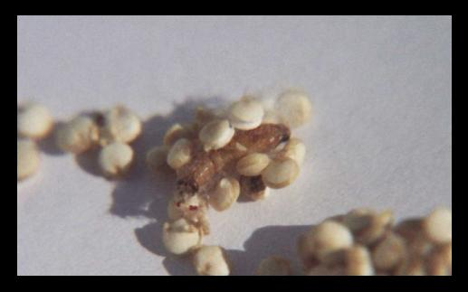
שטיפת פירות וירקות בסבון כלים, או בחומר מיוחד לשטיפת פירות וירקות, אולם ישנם חרקים שלא מועיל שריה ושטיפה אלא צריך גם שפשוף.
בדיקה כנגד האור – במינים מסוימים.
בדיקת קטניות רצוי לסנן אותן במסננת בעלת נקבים גדולים יחסית באופן שהפסולת וחרקים קטנים (אם ישנם) יעברו דרכה והקטניות תשארנה בתוך המסננת (לתת תמונת מצב). ולאחר מכן מכינים קערה עם מים, שופכים לתוכה את הקטניות, כך שגובה פני המים יהיה מספר סנטימטרים מעל לקטניות ומיד לפני שהגרגירים סופגים מים בוחשים בתנועה סיבובית בתחתית הקערה והחרקים והגרגירים הנגועים עולים וצפים על פני המים אולם בדיקה זו אינה מוחלטת, לכן אין להסתפק בה, אלא כתוספת לבדיקת הקטניות.
עצות להישמר מתולעים
מוצרים יבשים, כגון: קטניות, תבלינים, קמח, רצוי לאחסן בתא ההקפאה.
בתחילת הקיץ מצויים הרבה יצורים מעופפים למיניהם, לכן רצוי תמיד לכסות את המאכלים.
מצוי להיות בספרים שעומדים זמן רב חרקים (עיין תמונה 21) קטנים, לכן רצוי שלא לשים ספרים אלו על גבי שולחן שאוכלים בו.

שער שלישי - בדיקת המזון למעשה
פרק טו - בדיקת המזון למעשה
הקדמה א'
כתבו רבותינו הפוסקים שהימצאות תולעים במזון יכולה להשתנות במציאות כגון: סחורה הבאה ממדינות שונות שממדינה אחת סוג מזון אחד נחשב כנגוע בתולעים וחייב בבדיקה ואילו הבא ממדינה אחרת הרי הוא בחזקת נקי מתולעים. וכן יכול להיות ששדה אחת טופלה כראוי בנושא חרקים ואילו בשדה השנייה לא טופל כלל, או שגדל בגינה פרטית שעל פי רוב לא מטפלים בה כלל בנושא זה. וכן יכול להשתנות מצב התולעים בעונות השנה. וכן כיצד אוחסן סוג מזון זה. וכן בכמות התחלופה בין חנות לחנות, וכן עוד דוגמאות שונות.
לכן בפרק זה כתבנו כיצד נעשית הבדיקה בסוגי המזון ולא חילקנו האם סוג המזון מוחזק כנקי ופטור מבדיקה או שנקנה משדה שטופלה בנושא תולעים ולכן פטור מבדיקה (חוץ ממספר מקומות שכן ציינו מה דינו) אלא שכתבנו בפרק זה כיצד נעשית הבדיקה בכל סוג וסוג.
הקדמה ב'
כיצד להשתמש בפרק זה:
בפרק זה כתבנו כיצד נעשית בדיקת המזון למעשה, ובנוסף הבאנו בחלק מסוגי המזון תמונה אחת או יותר של חרק/תולעת באותו סוג המזון להמחשת העניין, ואת שאר סוגי החרקים העשויים להימצא בסוג מזון זה כתבנו עיין עוד בתמונות מספר...לכן יש לעיין באותם מספרי התמונות כך שנדע מה עלינו לחפש בסוג מזון זה.
אחר פרק זה הבאנו את התמונות של החרקים המצויים בדרך כלל בירקות ובפירות וכן בקטניות, כגון כנימות עלה תריפסים זחלי עש ועוד. התמונות ממוספרות בסדר רץ, אולם מכל סוג של תולעת הבאנו מספר תמונות כדי להמחיש את אותו יצור, כגון תולעת ששמה זחלים הבאנו מספר תמונות של זחלים וכל התמונות ממוספרות באותו מספר משום שזו אותה התולעת אלא במצבים או בפירות שונים. לכן כאשר נכתוב עיין תמונה כגון מ"ס 5 יכול להיות שיהיו מספר תמונות שממוספרים במספר 5 אולם זו אותה תולעת.
נביא דוגמא וממנה נלמד לכלל:
אדם שרוצה לדעת כיצד בודקים ארטישוק פותח בערך ארטישוק וכך כתוב שם:
ארטישוק
נגוע מאוד בחרקים רבים המסתתרים בין העלים.
א'. אם רוצים להשתמש רק בתחתית הארטישוק, מפרידים את כל העלים, ומשתמשים רק בתחתית המוצקת לאחר שטיפה, כאשר היא נקייה לגמרי מכל העלים והבליטות.
ב. אם רוצים להשתמש בעלים, יש להפריד אותם לפני הבישול, להשרותם במי ניקוי ל 5 דקות לשפשף כל עלה משני צדדיו, ולשטוף היטב תחת זרם מים חזק.
תולעים/ חרקים העשויים להימצא בארטישוק עיין עוד תמונה מ"ס 1,19,31,20
ביאור: ראשית כתבנו כיצד בודקים ולבסוף כתבנו במודגש כך: "תולעים או חרקים העשויים להימצא בארטישוק עיין עוד בשער רביעי תמונות מס’ . 20,31,19,1, נעבור לפרק התמונות ונראה את התמונות הנושאות מספרים אלו כך נדע איזה תולעים צריך לחפש בארטישוק.....
אלו חלק מהתמונות שנראה שם, ואלו החרקים שצריכים לחפש אחריהם שהם

אגוז אורן (צנובר)
לשוטחו על גבי משטח ולבודקו בדיקה חיצונית מתולעים וחרקים, ואם נמצא נגיעות, אין להשתמש בסחורה זו היות ועלולה להיות נגיעות פנימית. (אלא אם כן יעשה בדיקה פנימית בכולם)
תולעים או חרקים העשויים להימצא באגוז אורן עיין עוד בשער רביעי תמונות מס’ – 10,18
אגוז (אילסר) בונדוק
שלב א’ יש לבודקם בדיקה חיצונית לראות אם ישנם חרקים, זחלים, סימני כירסום, או חורים.
שלב ב’ לחצות חלק מהאגוזים לשם בדיקת מדגם (עיין בפרק ז' כיצד נעשית בדיקת המדגם). אם נמצאה נגיעות פנימית יש לפתוח את כולם ולבדוק בפנים.
תולעים או חרקים העשויים להימצא באגוז בונדוק עיין עוד בשער רביעי תמונות מס’ – 10,18

אגוז גן עדן (פיסטוק)
שלב א’ לאחר הסרת הקליפה יש להתבונן על האגוז ולראות אם ישנם חרקים, זחלים, חורים, סימני כירסום, או קורים.
שלב ב’ לעשות בדיקת מדגם פנימית (עיין פרק ז' כיצד נעשית בדיקת המדגם) ואם נמצא נגוע בבדיקה הפנימית יש לפתוח אחד אחד קודם האכילה.
תולעים או חרקים העשויים להימצא באגוז גן עדן עיין עוד בשער רביעי תמונות מס’ - 10,18

אגוז מוסקט
בדיקה חיצונית לראות שאין בהם נקבים.
תולעים או חרקים העשויים להימצא באגוז מוסקט עיין עוד בשער רביעי תמונות מס’ – 10,18
אגוז מוסקט טחון
עיין בדיקת תבלינים (אות ת').
אגוז מלך בקליפתו
אחר הקילוף לראות שאין על גבי האגוז חרקים קטנים, זחלים, קורי משי, או סימני כירסום.
תולעים או חרקים העשויים להימצא באגוז מלך עיין עוד בשער רביעי תמונות מס’ – 10,18
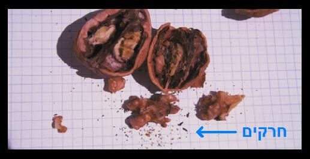
אגוז מלך קלוף
שלב א’ בדיקה חיצונית האם ישנם חרקים, זחלים,או קורי משי, הרי זה סימן לנגיעות.
שלב ב’ מסננים דרך מסננת עם חורים גדולים באופן שהאגוז נישאר למעלה ומתבוננים בנשורת אם ישנם חרקים או תולעים.
תולעים או חרקים העשויים להימצא באגוז מלך עיין עוד בשער רביעי תמונות מס’ – 10,18
אגוז מלך שבור
שלב א’ בדיקה חיצונית האם ישנם חרקים, זחלים, או קורי משי הרי זה סימן לנגיעות.
שלב ב’ מסננים דרך מסננת עם חורים גדולים באופן שהאגוז נישאר למעלה ומתבוננים בנשורת אם ישנם חרקים או תולעים.
תולעים או חרקים העשויים להימצא באגוז מלך עיין עוד בשער רביעי תמונות מס’ – 10,18
אגוז פקאן בקליפתו
אחר הקילוף לראות שאין על גבי האגוז וכן על הקליפה מצידה הפנימי חרקים קטנים, זחלים, קורי משי, או סימני כירסום.
תולעים או חרקים העשויים להימצא באגוז פקאן עיין עוד בשער רביעי תמונות מס’ – 10,18
אגוז פקאן קלוף
שלב א’ בדיקה חיצונית האם ישנם חרקים. זחלים, או קורי משי הרי זה סימן לנגיעות.
שלב ב’ מסננים דרך מסננת עם חורים גדולים באופן שהאגוז נישאר למעלה ומתבוננים בנשורת אם ישנם חרקים או תולעים.
תולעים או חרקים העשויים להימצא באגוז פקאן עיין עוד בשער רביעי תמונות מס’ – 10,18
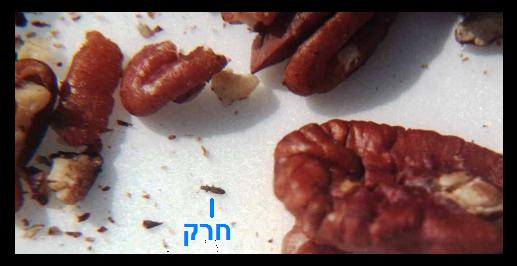
אגוז פקאן שבור
שלב א’ בדיקה חיצונית האם ישנם חרקים, זחלים, או קורי משי הרי זה סימן לנגיעות.
שלב ב’ מסננים דרך מסננת עם חורים גדולים באופן שהאגוז נישאר למעלה ומתבוננים בנשורת אם ישנם חרקים או תולעים.
תולעים או חרקים העשויים להימצא באגוז מלך עיין עוד בשער רביעי תמונות מס’ – 10,18
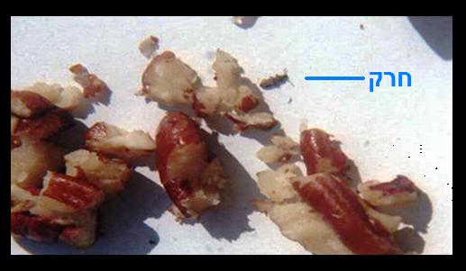
אגוז קשיו
שלב א’ יש לבודקם בדיקה חיצונית לראות אם ישנם חרקים, זחלים, סימני כירסום, או חורים.
שלב ב’ לחצות חלק מהאגוזים לשם בדיקת מדגם (עיין בפרק ז' כיצד נעשית בדיקת המדגם). אם נמצאה נגיעות פנימית יש לפתוח את כולם ולבדוק בפנים.
תולעים או חרקים העשויים להימצא בקשיו עיין עוד בשער רביעי תמונות מס’ – 10,18
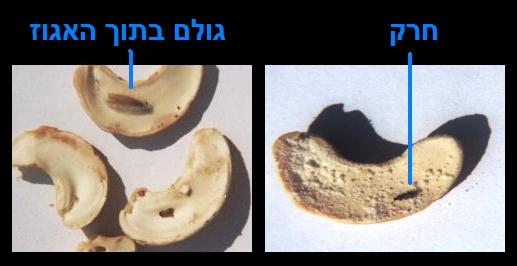
אגוז קשיו שבור
שלב א’ בדיקה חיצונית האם ישנם חרקים, זחלים, או קורי משי הרי זה סימן לנגיעות.
שלב ב’ מסננים דרך מסננת עם חורים גדולים באופן שהאגוז נישאר למעלה ומתבוננים בנשורת אם ישנם חרקים או תולעים.
תולעים או חרקים העשויים להימצא בקשיו עיין עוד בשער רביעי תמונות מס’ – 10,18
אורז
יש לרכוש סוג אורז איכותי ורצוי באריזה ולא במשקל
שלב א’ לבדוק בעת הקניה אם יש הרבה אבקה בתחתית השקית, וכן אם מצויים גרגרים הדבוקים יחד או לשקית ע"י קורים. אם רואים סימני נגיעות כמתואר, אין לקנות את המוצר.
שלב ב’ בעוד הגרגרים יבשים, מסננים אותם במסננת רשת על גבי משטח לבן באופן שהאורז נישאר למעלה ומתבוננים במה שנפל אם ישנם חרקים קטנים או תולעים לבנות.
שלב ג’ בודקים את האורז על גבי משטח לבן, בין הגרגירים. יש לבדוק מתולעים לבנות וחרקים קטנים בצבע שחור או חום. נקודות שחורות על האורז, שינוי צבע או גרגירים סדוקים, זהו פגם גידול ואינו סימן לנגיעות.
שלב ד’ נותנים את האורז במים ומתבוננים אם ישנם חרקים או תולעים צפים על פני המים.
תולעים או חרקים העשויים להימצא באורז עיין עוד בשער רביעי תמונות מס’ 13,17,26,14,10,21,2,18
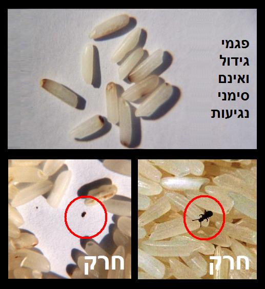
אפונה טרייה
לאחר פתיחת התרמילים לבדוק האם ישנם תולעים, או סימני כירסום על גבי הגרגרים.
תולעים או חרקים העשויים להימצא באפונה טרייה עיין עוד בשער רביעי תמונות מס’ 9

אפונה בשימורים או בהקפאה
יש לרכוש בהשגחה מהודרת
בחזקת נקייה.
אפונה יבשה
רצוי לקנות באריזה ולא במשקל ומטיב מעולה
שלב א’ לבדוק בעת הקניה אם יש הרבה אבקה בתחתית השקית, וכן אם מצויים גרגרים הדבוקים יחד או לשקית ע"י קורים. אם רואים סימני נגיעות כמתואר, אין לקנות את המוצר.
שלב ב’ בעוד הגרגרים יבשים, מסננים אותם במסננת רשת על גבי משטח לבן באופן שהאפונה תישאר למעלה ומתבוננים במה שנפל אם ישנם חרקים קטנים או תולעים לבנות.
שלב ג’ בודקים את האפונה על גבי משטח לבן, בין הגרגירים. יש לבדוק מתולעים לבנות וחרקים קטנים בצבע שחור או חום.
שלב ד’ הצפה במים לוקחים כלי ובו מים בכמות כפולה מכמות האפונה, שופכים פנימה את האפונה ומערבבים מיד, גרגירים נגועים יצופו על פני המים וכן חרקים אם ישנם.
תולעים או חרקים העשויים להימצא באפונה יבשה עיין עוד בשער רביעי תמונות מס’ – 18,10,2,21
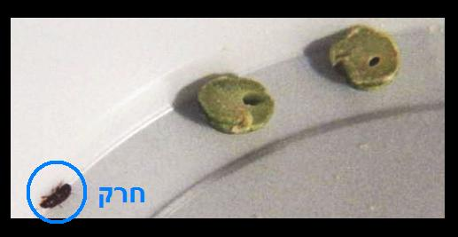
אפרסק
שלב א’ בדיקה חיצונית האם ישנם חורים ובפרט באזור העוקץ וכן לבדוק מכנימות כעין כתמים אדומים על גבי הקליפה.
שלב ב’ לחצותו לשנים ולבדוק אם ישנם תולעים.
תולעים או חרקים העשויים להימצא באפרסק עיין עוד בשער רביעי תמונות מס’ – 10,22,4,30

אפרסק בשימורים
לקנות בהשגחה מהודרת
בדרך כלל נקי
ארטישוק טרי
נגוע מאוד בחרקים רבים המסתתרים בין העלים.
א'. אם רוצים להשתמש רק בתחתית מפרידים את כל העלים, ומשתמשים רק בתחתית המוצקת לאחר שטיפה, כאשר היא נקייה לגמרי מכל העלים והבליטות.
ב. אם רוצים להשתמש בעלים, יש להפריד אותם לפני הבישול, להשרותם במי ניקוי ל 5 דקות לשפשף כל עלה משני צדדיו, ולשטוף היטב תחת זרם מים חזק.
תולעים או חרקים העשויים להימצא בארטישוק עיין עוד בשער רביעי תמונות מס’ – 20,31, 1,19

תחתיות ארטישוק קפוא
יש לקנות בהשגחה מהודרת
בחזקת נקי
יש לשוטפו תחת זרם מים קודם השימוש
בוטנים בקליפתם הקשה
לאחר הסרת הקליפה להתבונן שאין חרקים, זחלים או קורים על גבי הקליפה מצידה הפנימי וכן על הבוטן.
תולעים או חרקים העשויים להימצא בבוטנים עיין עוד בשער רביעי תמונות מס’ 10,18
בוטנים קלופים
שלב א’ - לבדוק את כולם מבחוץ אם ישנם חורים, או סימני כירסום.
שלב ב’ – לעשות בדיקת מדגם (עיין בפרק ז' כיצד נעשית בדיקת המדגם) פנימית ולבדוק אם יש נגיעות, אם נמצאו תולעים בבדיקה הפנימית יש לחצות את כולם ולבדוק בפנים.
תולעים או חרקים העשויים להימצא בבוטנים עיין עוד בשער רביעי תמונות מס’ – 19,18

בוטנים חצויים/שבורים
שלב א’ בדיקה חיצונית האם ישנם חרקים, זחלים, או קורי משי הרי זה סימן לנגיעות.
שלב ב’ מסננים דרך מסננת עם חורים גדולים באופן שהבוטנים נשארים למעלה ומתבוננים בנשורת אם ישנם חרקים או תולעים או חרקים.
תולעים העשויים להימצא בבוטנים עיין עוד בשער רביעי תמונות מס’ – 10, 18
בורגול
רצוי לקנות באריזה ולא במשקל ומטיב מעולה
שלב א’ לבדוק בעת הקניה אם מצויים גרגרים הדבוקים יחד או לשקית ע"י קורים. אם רואים סימני נגיעות כמתואר, אין לקנות את המוצר.
שלב ב’ לסנן דרך מסננת באופן שהבורגול ישאר למעלה ומתבוננים בנשורת אם ישנם חרקים או תולעים בין הפירורים שנופלים.
שלב ג’ לפזר גרגרי בורגול על משטח לבן ולבדוק ביניהם האם ישנם חרקים, זחלים או קורים. אם נמצאה נגיעות באחד מן השלבים אין להשתמש במוצר.
תולעים או חרקים העשויים להימצא בבורגול עיין עוד בשער רביעי תמונות מס’ – 10,18

בזילקום
עיין ירקות עלים כיצד בדיקתם ועוד דינים (אות ע')
במיה טרייה
לבדוק בדיקה חיצונית לראות שאין בה חורים ואם יש חור לחצות לאורך ולבדוק האם ישנם תולעים.
תולעים או חרקים העשויים להימצא בבמיה עיין עוד בשער רביעי תמונות מס’ 9

במיה קפואה
יש לרכוש בהשגחה מהודרת
בחזקת נקייה
אפשרי לעשות בדיקת מדגם כנ"ל בטרייה.
בצל יבש
בצל סוג א' בעל מראה יפה, קשה וסגור, וללא נביטת עלים, בחזקת נקי.
בצל באיכות נמוכה ובפרט אם נבטו ממנו עלים ירוקים, או שהוא פתוח שאין הגלדים סגורים היטב, יש לבודקו כך..
שלב א’ יש לחתוך את החלק העליון של הבצל עד המקום שהגלדים שוכבים וסגורים אחד על משנהו.
שלב ב’ להפריד בין השכבות ולשטוף כל אחד בפני עצמו תחת זרם מים חזק תוך כדי שפשוף.
תולעים או חרקים העשויים להימצא בבצל עיין עוד בשער רביעי תמונות מס’ 1,2,31,30

בצל ירוק - מגידול רגיל
בדרך כלל נגוע מאוד ע"י חרקים זעירים שחורים או צהובים, המצויים בין שכבות הבצל, וגם נכנסים לתוך הצינורות החלולים של הירק. וכן נגוע ברימות זבוב המנהרות ברקמת העלה.
שלב א’ חותכים את השורש ועוד כ 2 ס"מ מעל השורש וזורקו.
שלב ב’ חוצים את הבצל לכל האורך.
שלב ג’ מפרידים בין כל השכבות.
שלב ד’ משרים במי ניקוי במשך 5 דקות.
שלב ה’ שוטפים היטב כל שכבה תחת זרם מים חזק תוך כדי שפשוף באצבעות.
תולעים או חרקים העשויים להימצא בבצל ירוק עיין עוד בשער רביעי תמונות מס’ 31,4
למעשה קשה מאוד לנקות את הבצל הירוק באופן מוחלט לכן יש להשתמש רק מגידול מיוחד ללא תולעים
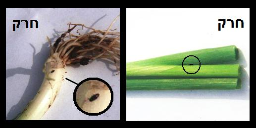
בצל ירוק - מגידול מיוחד ללא תולעים
בחזקת נקי.
שלב א’ חותכים את השורש ועוד כ 1 ס"מ מעל השורש וזורקו.
שלב ב’ משרים במי ניקוי במשך 3 דקות.
שלב ג’ שוטפים היטב תחת זרם מים חזק.
ברוקולי
נגוע מאוד וקשה לנקותו היות והזחלים והחרקים מסתתרים בין פרחי הברוקולי ואינם יוצאים בשטיפה.
אולם אפשר להשתמש בגבעולים בלבד
שלב א’ להוריד את כל הפרחים והעלים ולזורקם.
שלב ב’ לבדוק שאין סימן חדירת תולעת בעובי הקלח.
שלב ג’ להשרות את הגבעולים במי ניקוי 3 דקות ולשטוף היטב.
תולעים או חרקים העשויים להימצא בברוקולי עיין עוד בשער רביעי תמונות מס’ 31,20,9,1

ברוקולי מגידול מיוחד ללא תולעים
בחזקת נקי.
שלב א’ להפריד לענפים קטנים.
שלב ב’ להשרות במי ניקוי ל 3 דקות.
שלב ג’ לשטוף היטב. אם מתגלות נגיעות, אין להשתמש
ברוקולי מוקפא מגידול רגיל אין להשתמש בו כלל עיין כרובית
גת (קאת) עלים
שלב א’ יש להפריד את העלים הנאכלים ולהשרותם 5 דקות במי ניקוי.
שלב ב’ לשפשף עם ספוג ומי ניקוי, כל עלה משני צדדיו, בכל שטח העלה.
שלב ג’ לשטוף היטב את העלים תחת זרם מים חזק.
תולעים או חרקים העשויים להימצא בעלי קאת עיין עוד בשער רביעי תמונות מס’ – 1,20,31
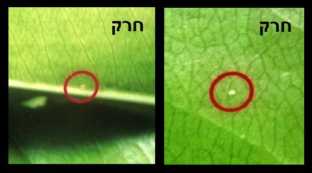
גויאבה
צבע התולעים כצבע הפרי עם נקודה שחורה קטנה בראשם. הן חודרות לכל עובי הפרי דרך מחילות דקות. לעיתים מצויות כנימות על הקליפה, וצריך להסירן.
שלב א’ התבוננות חיצונית לראות שאין כנימות וכן שאין חורים בפרי.
שלב ב’ לחתוך פרוסות לרוחב הפרי, ולבדוק כל פרוסה משני צדדיה שאין בו תולעים.
תולעים או חרקים העשויים להימצא בגויאבה עיין עוד בשער רביעי תמונות מס’ – 10,22,5,30
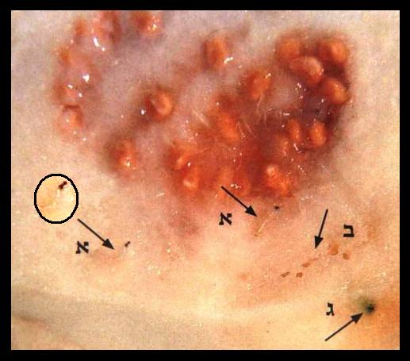
גריסים
רצוי לקנות באריזה סוגרה ולא במשקל ומטיב מעולה
שלב א’ לבדוק בעת הקניה אם יש הרבה אבקה בתחתית השקית, וכן אם מצויים גרגרים הדבוקים יחד או לשקית ע"י קורים. אם רואים סימני נגיעות כמתואר, אין לקנות את המוצר.
שלב ב’ בעוד הגרגרים יבשים, מסננים אותם במסננת רשת על גבי משטח לבן באופן שהגריסים נשארים למעלה ומתבוננים במה שנפל אם ישנם חרקים קטנים או תולעים לבנות.
שלב ג’ בודקים את הגריסים על גבי משטח לבן, בין הגרגירים. אם ישנם תולעים לבנות או חרקים קטנים בצבע שחור או חום.
שלב ד’ הצפה במים לוקחים כלי ובו מים בכמות כפולה מכמות הגריסים, שופכים פנימה את הגריסים ומערבבים מיד, גרגירים נגועים יצופו על פני המים וכן חרקים אם ישנם.
תולעים או חרקים העשויים להימצא בגריסים עיין עוד בשער רביעי תמונות מס’ – 18,13,17,14,10,21,2
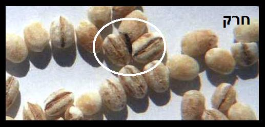
גרנולה
מוצר בעייתי המורכב ממוצרים רגישים כגון: צימוקים, שיבולת שועל, חמניות, תמרים, קשיו, וכד'.
יש לרכוש גרנולה בהשגחה מהודרת
רצוי לבדוק קודם האכילה. לפזר את הגרנולה קודם האכילה ולבדוק ביניהם האם ישנם חרקים, או תולעים היות והוא עלול להתליע מחדש.
תולעים או חרקים העשויים להימצא בגרנולה עיין עוד בשער רביעי תמונות מס’ – 18,10
גרעינים שחורים
צריך לפתוח אחד אחד ולבדוק אם ישנם חרקים, תולעים, או סימני כירסום.
תולעים או חרקים העשויים להימצא בגרעינים עיין עוד בשער רביעי תמונות מס’ 10,18
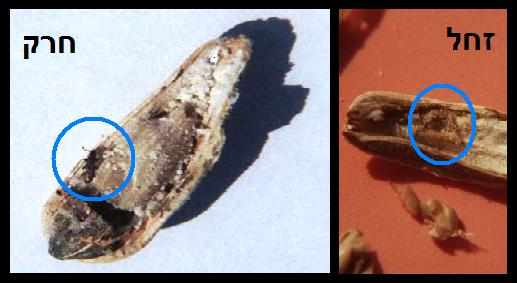
גרעינים שחורים קלופים
שלב א’ בדיקה חיצונית האם ישנם חרקים, זחלים,או קורי משי, הרי זה סימן לנגיעות.
שלב ב’ מסננים דרך מסננת עם חורים גדולים באופן שהגרעינים נשארים למעלה ומתבוננים בנשורת אם ישנם חרקים או תולעים.
תולעים או חרקים העשויים להימצא בגרעינים עיין עוד בשער רביעי תמונות מס’ 10,18
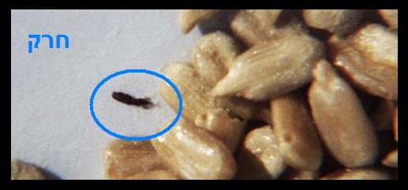
גרעיני אבטיח
יש לפתוח חלק מהגרעינים לבדיקת מדגם (עיין פרק ח' כיצד נעשית בדיקת המדגם), אם נמצא נגיעות פנימית יש לפתוח אחד אחד קודם האכילה.
תולעים או חרקים העשויים להימצא בגרעינים עיין עוד בשער רביעי תמונות מס’ 10,18
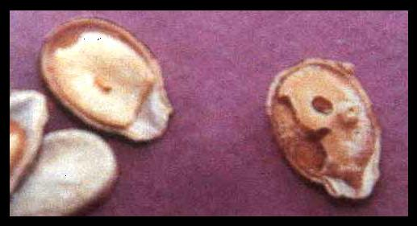
גרעינים לבנים
בחזקת נקיים.
דגים
ראשית צריך לדעת שאת הדגים יש לקנות מחנויות שיש להם השגחה שמטפלת בבעיית טפילים (תולעים) בדגים "ואין לקנות מחנות שיש לה השגחה רגילה" אלא צריך תמיד לברר אם השגחה זו מטפלת בבעיה זו של טפילים (תולעים) בדגים. אם הדג נקנה בחנות הנמצאת תחת השגחה קפדנית שמטפלת גם בענייני הטפילים (תולעים) בדגים, אפשר להסתפק בשטיפה טובה של הדג לפני השימוש (ובדגים מסויימים יש לגרד בתוך חלל הבטן).
כל המובא להלן כולל הטבלה נלקח מן הספר תולעת שני כרך שני מאת הרב הגאון שניאור ז' רווח שליט"א בחודש כסלו תש"ע וכל זה רק מעט מן המעט וביתר הרחבה וביאור בכל נושא טפילים בדגים עיין שם.
דגים טריים מתוצרת הארץ:
א. דגי בריכות כגון: קרפיון, אמנון, בורי, כסיף, באס ועוד. בחשש נגיעות של טפילים, ויש לרוכשם רק בחנויות שתחת כשרות מהודרת כולל איזכור בתעודה שהדגים נקיים מחשש טפילים [כלומר שנרכשו מבריכות דגים שמטופלים ומפוקחים]. ראוי לציין שנכון להיום ב"ה מעל 80% מבריכות הדגים בארץ מפוקחים על עניין הטפילים, אם כי יש לדעת שכאשר אצלם נפסלים דגים או בריכה, התוצרת נוסעת לחנויות שעומדות תחת פיקוח כשרות שלצערנו איננו חושש לטפילים, וסומך על נקיונה של עקרת הבית.
ב. דגי כנרת כגון: קרפיון, אמנון בורי וסרדין טבריה, יש לרכוש רק מחנויות שתחת פיקוח לעניין תולעים.
ג. דגי נחלים כגון: פורל מנחל דן- בחזקת נקי.
ד. דגי כלובים שבים כגון: דג הדניס, מכלובים שבמכמורת או אשדוד,בחזקת נקיים מטפילים.
ה. דגי הים התיכון כגון: לברק, פלמידה, בקלה ים תיכונית, ברקודה, לוקוס ועוד, לעיתים קרובות מאד נגועים בתולעים בחלל המעיים ובחלל הפה. [יש להסיר את הראש ולנקות היטב את חלל המעיים ולעתים ראוי לנהוג כך גם בגלל שאריות המאכל שכולל בתוכו דגיגים טמאים או סרטנים, וטרם עברו למעיים והתעכלו].
דגים קפואים ייבוא מחו"ל [רשימה חלקית של הדגים המצויים]
טפילים ופרזיטים שבתוך בשר הדגים, כיון שנפסק להלכה שהם מותרים לא נכללו ברשימה הבאה, להוציא תולעי אניסאקיס שאסורים גם כשהם בתוך בשר הדגים, כיון שמקורם מבחוץ, וכפי הוראת גדולי הפוסקים בדורינו, דגים אלו מופיעים ברשימה בהדגשה
הנתונים ברשימה דלקמן נכונים לכסלו תש"ע, ונכון לאופני השיווק והעיבוד המצויים כיום, ובהחלט יכולים להשתנות, והכול לפי הזמן והמקום

נציין חלק מן הטפילים המצויים בדגים
אורגולוס
תיאור – טפילים קטנים צורת גופם כעין עיגול מעוך, צבעם כמעט שקוף ויש להם שתי עיניים שחורות, גודלם חצי מילימטר עד שתי מילימטר.
זהוי – נצמד לעור הדג בחוזקה וקשה מאוד להבחין בו, נמצא במיוחד באזור הזנב, הסנפירים, והראש.
מצוי ב – בדגים המגיעים מבריכות
ולעיתים מאגמים, ומצויים בקרפיון
ולעיתים באמנון, בורי ועוד.
(תמונה מס’ 32)
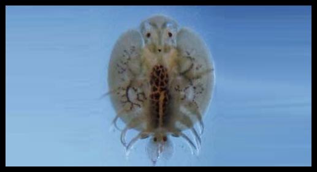
לרניאה
תיאור – נראים כחוטים לבנים או אפורים, אורכם סנטימטר אחד.
זהוי – חלק מגופו מוחדר לתוך עור הדג וגורם לפצע אדום, הניכר היטב, נמצא בעיקר באזור הזנב, הסנפירים, והצוואר.
מצוי ב – בעיקר בדגי קרפיון, ולעיתים גם בכסיף, בורי, לקס, אמור, אמנון.
(תמונות מס’ 33)
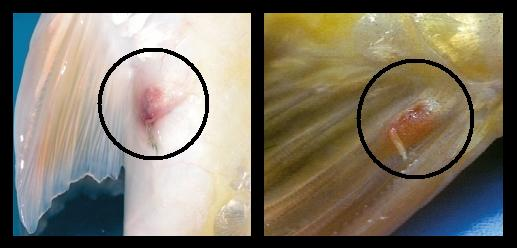
כינת סלמון
תיאור – צבעו חום אורכו כסנטימטר אחד עם זנב שאורכו כשני סנטימטר.
זיהוי – נצמדים לעור הדג וניכרים היטב.
(תמונה מס’ 34)

תולעי אניסאקיס
תיאור – תולעים קטנות צבען המקורי הוא שקוף, ולעיתים הם מקבלים צבע שונה עקב המאכל שלהם, לבן, ורוד, אפור, אורכן סנטימטר אחד עד ששה סנטימטר.
זהוי – כעין נחשים דקיקים, נצמדות לאברים הפנימיים, או לדפנות הבטן, וכן לאשכול ביצי הדג, מצויות לעיתים בתוך בשר הדג.
מצוי ב – חלל הבטן של דג אדום, מטיאס, בקלה צעיר, סלמון מן הים, סול, פלאונדר, קוד, ועוד. ובסוגי דגים מסוימים ובדייג מסוים ניתן למצוא תולעים אלו בבשר הדגים.
(תמונות מס’ 35)
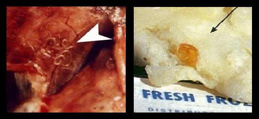
טפיל הצצטודה בדג בקלה
(תמונה מס’ 36)

דובדבן
לחצות את הפרי, להוציא את הגרעין ולבדוק אם יש תולעים לבנות קטנות.
תולעים או חרקים העשויים להימצא בדובדבן עיין עוד בשער רביעי תמונות מס’ – 5,30
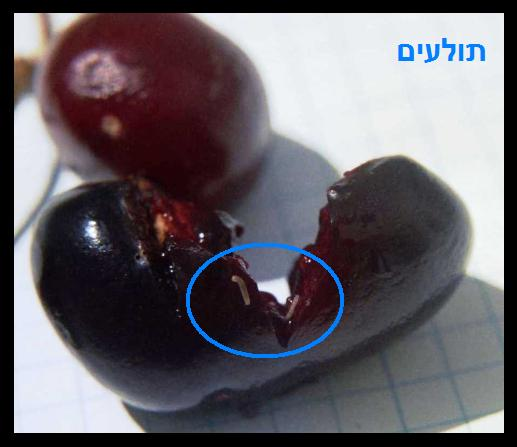
דובדבן מסוכר
לקנות בהשגחה מהודרת
ורצוי לעשות בדיקת מדגם פנימית (עיין בפרק ז' כיצד נעשית בדיקת המדגם) על ידי חציית הדובדבן ובדיקה פנימית, ואם נמצא נגיעות יש לבדוק את כל הכמות.
תולעים או חרקים העשויים להימצא בדובדבן עיין עוד בשער רביעי תמונות מס’ 30

דובדבנים מיובשים
לקנות בהשגחה מהודרת
שלב א’ לעשות בדיקת מדגם (עיין בפרק ז' כיצד נעשית בדיקת המדגם) על ידי שריה במים פושרים למשך שעתיים.
שלב ב’ לפתוח ולראות אם יש נגיעות של תולעים,או חרקים, אם נמצא נגיעות , אין להשתמש בסחורה זו.
תולעים או חרקים העשויים להימצא בדובדבן עיין עוד בשער רביעי תמונות מס’ 5,30,18

דובדבנים בשימורים
לקנות בהשגחה מהודרת
בחזקת נקיים
אפשרי לעשות בדיקת מדגם (עיין בפרק ז' כיצד נעשית בדיקת המדגם) על ידי חציית הדובדבן ובדיקה פנימית מתולעים ואם נמצא נגיעות יש לבדוק את כולם.
תולעים או חרקים העשויים להימצא בדובדבן עיין עוד בשער רביעי תמונות מס’ 5,30
זיתים ירוקים בשימורים
בהשגחה מהודרת : בחזקת נקיים
בהשגחה רגילה : יש לעשות בדיקת מדגם (עיין בפרק ז' כיצד נעשית בדיקת המדגם) לעתים נגועים בתולעים הגורמות לכתם חום בזית.
אולם במקרים רבים הכתם החיצוני נובע רק ממכה או מעקיצה. אם מבחינים בכתם או בעקיצה בצבע חום, שחור, יש לפתוח ולהתבונן אם מצויה מחילה בפנים סימן לחדירת תולעים.
תולעים או חרקים העשויים להימצא בזיתים עיין עוד בשער רביעי תמונות מס’ 22,3
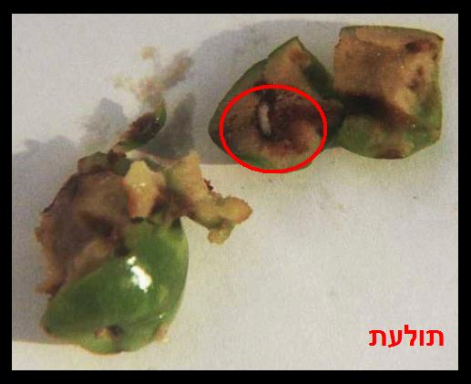
זיתים שחורים בשימורים
בהשגחה מהודרת: בחזקת נקיים
בהשגחה רגילה : יש לעשות בדיקת מדגם (עיין בפרק ז' כיצד נעשית בדיקת המדגם) יש חשש גבוה לנגיעות כי הם בשלים ורכים וצבעם השחור מקשה על הבדיקה.
זיתים ללא חרצנים או טבעות זיתים בשימורים
בהשגחה מהודרת : בחזקת נקיים
בהשגחה רגילה : יש לעשות בדיקת מדגם (עיין בפרק ז' כיצד נעשית בדיקת המדגם) קלים יותר לבדיקה כנ"ל בשלמים.
זעתר
עיין ירקות עלים כיצד בדיקתם ועוד דינים (אות ע').
חומוס גרגירים
רצוי לקנות סגורה ולא במשקל ומטיב מעולה
שלב א’ לבדוק בעת הקניה אם יש הרבה אבקה בתחתית השקית, וכן אם רואים חרקים קטנים, אין לקנות סחורה זו.
שלב ב’ ממלאים קערה במים שכמות המים כפולה מכמות החומוס, שופכים את החומוס למים ומיד בוחשים שני סיבובים, גרגרים שצפים על פני המים להוציאם ולהשליכם וכן להתבונן אם ישנם חרקים או תולעים צפים על פני המים, להשאיר את החומוס במים 8 שעות לפחות.
שלב ג’ לאחר 8 שעות לבדוק את כל הגרגירים על גבי משטח בדיקה חיצונית לראות אם ישנם חורים בגרגירים או מראה שקוף סימן שישנה תולעת בתוך הגרגר.
תולעים או חרקים העשויים להימצא בגרגרי חומוס עיין עוד בשער רביעי תמונות מס’ 12,18,8
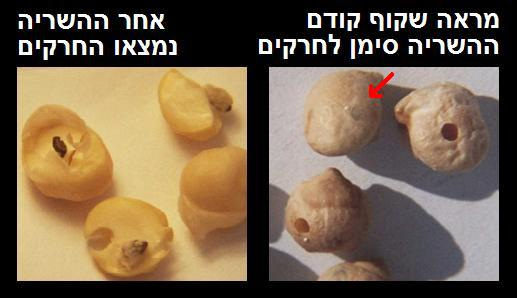
חומוס בשימורים
בהשגחה מהודרת : בחזקת נקיים
בהשגחה רגילה: יש לעשות בדיקת מדגם (עיין בפרק ז' כיצד נעשית בדיקת המדגם) לפזר גרגרים על גבי משטח בדיקה חיצונית לראות אם ישנם חורים בגרגירים או מראה שקוף סימן שישנה תולעת בתוך הגרגר אם נמצא נגיעות יש לבדוק את כל הכמות.
חומוס קלוי
בדרך כלל נקי
רצוי להתבונן בעת האכילה אם יש חורים או חרקים.
חיטה
רצוי לקנות באריזה ולא במשקל, ומטיב מעולה
שלב א’ לבדוק בעת הקניה אם יש הרבה אבקה בתחתית השקית, וכן אם מצויים גרגרים הדבוקים יחד או לשקית ע"י קורים. אם רואים סימני נגיעות כמתואר, אין לקנות את המוצר.
שלב ב’ בעוד הגרגרים יבשים, מסננים אותם במסננת רשת על גבי משטח לבן באופן שגרגרי החיטה נשארים למעלה ומתבוננים במה שנפל אם ישנם חרקים קטנים או תולעים לבנות.
שלב ג’ בודקים את החיטה על גבי משטח לבן, בין הגרגירים. יש לבדוק מתולעים לבנות וחרקים קטנים בצבע שחור או חום.
שלב ד’ הצפה במים לוקחים כלי ובו מים בכמות כפולה מכמות החיטה, שופכים פנימה את החיטה ובוחשים מיד שני סיבובים גרגירים נגועים יצופו על פני המים וכן חרקים אם ישנם.
תולעים או חרקים העשויים להימצא בחיטה עיין עוד בשער רביעי תמונות מס’ 18,8,13,17,14,21,2
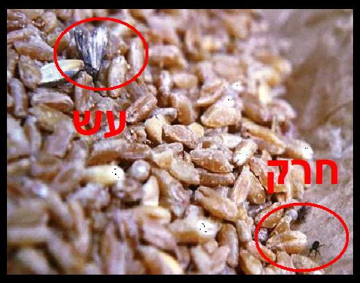
חילבה
רצוי לקנות באריזה ולא במשקל ומטיב מעולה
שלב א’ לבדוק בעת הקניה אם יש הרבה אבקה בתחתית השקית, וכן אם מצויים גרגרים הדבוקים יחד או לשקית ע"י קורים. אם רואים סימני נגיעות כמתואר, אין לקנות את המוצר.
שלב ב’ בעוד הגרגרים יבשים, מסננים אותם במסננת רשת על גבי משטח לבן באופן שגרגרי החילבה נשארים למעלה, ומתבוננים במה שנפל אם ישנם חרקים קטנים או תולעים לבנות.
שלב ג’ בודקים את החילבה על גבי משטח לבן, בין הגרגירים. אם ישנם תולעים לבנות או חרקים קטנים בצבע שחור או חום.
אם נמצא נגיעות באחד מן השלבים אין להשתמש בסחורה זו.
תולעים או חרקים העשויים להימצא בחילבה עיין עוד בשער רביעי תמונות מס’ 18,8
חילבה טחון
עיין תבלינים (אות ת').
חסה מגידול רגיל
נגוע מאוד בחרקים, זחלים, זבובים, ועוד, המסתתרים בין העלים
שלב א’ מפרידים את העלים.
שלב ב’ להשרות במי ניקוי ל 5 דקות.
שלב ג’ לשפשף על ידי ספוג ומי ניקוי, כל עלה משני צדדיו, בכל הקפלים והפינות.
שלב ד’ לשטוף היטב, תחת זרם מים חזק.
שלב ה’ להתבונן על כל עלה ממול מקור אור שלא נותרו חרקים ושאין פיתולי מנהרות שנוצרו מרימת זבוב המנהרות.
תולעים או חרקים העשויים להימצא בחסה עיין עוד בשער רביעי תמונות מס’ 20,31,4,7,9,1,29,19
למעשה קשה מאוד לנקות את החסה באופן מוחלט לכן להשתמש רק מגידול מיוחד ללא תולעים.

חסה מגידול מיוחד ללא תולעים
בחזקת נקייה.
שלב א’ מפרידים את העלים.
שלב ב’ משרים במי ניקוי ל 3 דקות.
שלב ג’ שוטפים היטב, תחת זרם מים חזק.
חציל
שלב א’ להסיר את העלים שבקצה החציל ולשטוף היטב.
שלב ב’ בדיקה חיצונית אם ישנם חורים, אם נמצאו חורים מחטטים לראות האם ישנה מחילה זהו סימן לחדירת תולעת וצריך לפתוח ולבדוק בפנים.
תולעים או חרקים העשויים להימצא בחציל עיין עוד בשער רביעי תמונות מס’ 9,20,1
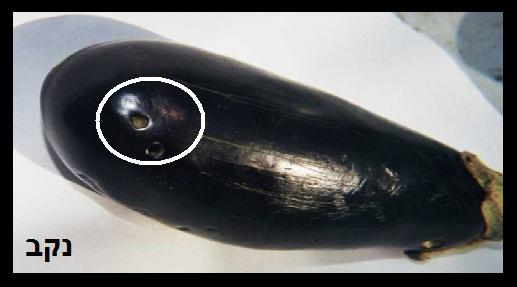
ירקות עלים
ראה בסעיף : עלים (ירקות עלים) ... באות ע'
כוסברה
עיין ירקות עלים כיצד בדיקתם ועוד דינים (אות ע').
כוסמת
רצוי לקנות באריזה סוגרה ולא במשקל ומטיב מעולה
שלב א’ לבדוק בעת הקניה אם יש הרבה אבקה בתחתית השקית, וכן אם מצויים גרגרים הדבוקים יחד או לשקית ע"י קורים. אם רואים סימני נגיעות כמתואר, אין לקנות את המוצר.
שלב ב’ בעוד הגרגרים יבשים, מסננים אותם במסננת רשת על גבי משטח לבן באופן שגרגרי הכוסמת נשארים למעלה ומתבוננים במה שנפל אם ישנם חרקים קטנים או תולעים לבנות.
שלב ג’ בודקים את הכוסמת על גבי משטח לבן, בין הגרגירים. יש לבדוק מתולעי עש לבנות וחרקים קטנים בצבע שחור או חום.
שלב ד’ לוקחים כלי ובו מים בכמות כפולה מכמות הכוסמת, שופכים פנימה את הכוסמת ומיד בוחשים שני סיבובים, גרגירים נגועים יצופו על פני המים וכן חרקים אם ישנם.
אם נמצאה נגיעות אין להשתמש בסחורה זו
תולעים או חרקים העשויים להימצא בכוסמת עיין עוד בשער רביעי תמונות מס’ 18,8,21,2
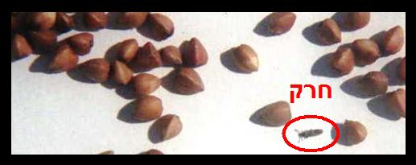
כרוב מגידול רגיל
נגוע מאוד בחרקים וזחלים המסתתרים בין עלי הכרוב
אם רוצים להשתמש בכרוב לבישול ולמילוי
שלב א’ להסיר מספר עלים ראשונים ולהתבונן אם יש נקב, ובמידה ויש - להסיר את האזור הנגוע.
שלב ב’ להקפיא למשך 48 שעות לפחות.
שלב ג’ להפשיר מעט ולהפריד את העלים.
שלב ד’ לשטוף היטב כל עלה תחת זרם מים חזק תוך פתיחת כל קפל וכל פינה משני צידי העלה.
שלב ה’ להתבונן על כל עלה ממול מקור אור שלא נותרו חרקים ושאין פיתולי מנהרות שנוצרו מרימת זבוב המנהרות.
תולעים או חרקים העשויים להימצא בכרוב עיין עוד בשער רביעי תמונות מס’ 31,20,9,1
למעשה קשה מאוד לנקות את הכרוב באופן מוחלט לכן יש להשתמש רק מגידול מיוחד ללא תולעים
ואם רוצים להשתמש בכרוב מגידול רגיל להכנת סלט
שלב א’ להסיר מספר עלים ראשונים ולהתבונן אם יש נקב, ובמידה ויש נקב להסיר את האזור הנגוע.
שלב ב’ חוצים את הכרוב לשתיים או לארבע ומפרידים את העלים.
שלב ג’ משרים במי ניקוי ל 5 דקות.
שלב ד’ שפשוף כל עלה משני צידי העלה על ידי ספוג עם מי ניקוי בכל שטח העלה
שלב ה’ שוטפים היטב תחת זרם מים חזק, תוך פתיחת כל קפל וכל פינה משני צידי העלה.
שלב ו’ להתבונן על כל עלה ממול מקור אור שלא נותרו חרקים ושאין פיתולי מנהרות שנוצרו מרימת זבוב המנהרות
תולעים או חרקים העשויים להימצא בכרוב עיין עוד בשער רביעי תמונות מס’ 1,9,20,31
למעשה קשה מאוד לנקות את הכרוב באופן מוחלט לכן להשתמש רק מגידול מיוחד ללא תולעים

כרוב מגידול מיוחד ללא תולעים
בחזקת נקי.
צריך לבדוק מספר עלים ראשונים שאין סימנים לחרקים או סימני חדירת תולעת, ואם נמצאו חרקים לנקותו כנ"ל מגידול רגיל.
כרובית טרייה מגידול רגיל
נגוע מאוד וקשה לנקותו היות והזחלים והחרקים מסתתרים בין פרחי הכרובית
אולם אפשר להשתמש בקלח הרחב ובענפים העבים בלבד ללא הפרחים בכלל.
שלב א’ להסיר את כל הפרחים עם הענפים הדקים ולזורקם.
שלב ב’ לבדוק שאין סימן חדירת תולעת בעובי הקלח.
שלב ג’ להשרות את הקלח והענפים העבים במי ניקוי ל 3 דקות.
שלב ד’ לשטוף היטב תחת זרם מים.
תולעים או חרקים העשויים להימצא בכרובית עיין עוד בשער רביעי תמונות מס’ 31,20,9,1,7

כרובית קפואה מגידול רגיל
בכרובית קפואה קיימת אותה בעיה כמו בכרובית טרייה אך לא ניתן לנקותה מחמת לחותה עקב ההקפאה. לכן אין להשתמש, אלא אם כן ישנו הכשר מוסמך בנושא תולעים.
כרובית מגידול מיוחד ללא תולעים
שלב א’ להפריד לענפים קטנים.
שלב ב’ להשרות במי ניקוי ל 3 דקות.
שלב ג’ לשטוף היטב. אם מתגלית נגיעות, אין להשתמש. (או להשתמש כמו בכרובית מגידול רגיל)
כרפס (סלרי) מגידול רגיל
נגוע מאוד בכל מיני חרקים.
אם רוצים להשתמש בקלחי הכרפס בלבד (סלרי)
שלב א’ מפרידים את הקלחים זה מזה וכן את הענפים הדקים עם העלים מן הקלחים עם מקום התפצלותם.
שלב ב’ משרים את הקלחים במי ניקוי ל 5 דקות.
שלב ג’ משפשפים בספוג משני הצדדים.
שלב ד’ שוטפים היטב תחת זרם מים חזק.
אם רוצים להשתמש בעלי הכרפס (סלרי)
שלב א’ משרים במי ניקוי ל 5 דקות.
שלב ב’ משפשפים משני צידי העלה על ידי ספוג עם מי ניקוי.
שלב ג’ שוטפים תחת זרם מים חזק.
שלב ד’ להתבונן על כל עלה ממול מקור אור שלא נותרו חרקים ושאין פיתולי מנהרות שנוצרו מרימת זבוב המנהרות.
תולעים או חרקים העשויים להימצא בכרפס (סלרי) עיין עוד בשער רביעי תמונות מס’ 20,31,9,29
למעשה מומלץ לא להשתמש בעלי הכרפס (סלרי) מגידול רגיל היות וזה קשה מאד לנקותם לגמרי

כרפס (סלרי) מגידול מיוחד ללא תולעים
בחזקת נקי
שלב א’ מפרידים את העלים.
שלב ב’ משרים במי ניקוי ל 3 דקות.
שלב ג’ שוטפים היטב, תחת זרם מים חזק.
כרתי מגידול רגיל
נגוע מאוד בחרקים קטנים המסתתרים בין שכבות הכרתי
שלב א’ לחתוך כ-2 ס"מ בסמוך לשורש ולזורקו.
שלב ב’ לחצות לכל אורך הכרתי ולהפריד את העלים.
שלב ג’ להשרות את העלים למשך 5 דקות במי סבון.
שלב ד’ לשטוף כל שכבה תחת זרם מים חזק תוך כדי שפשוף באצבעות.
תולעים או חרקים העשויים להימצא בכרתי עיין עוד בשער רביעי תמונות מס’ 31,1
למעשה קשה מאוד לנקות את הכרתי באופן מוחלט לכן להשתמש רק בכרתי מגידול מיוחד ללא תולעים
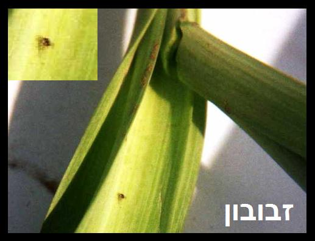
כרתי מגידול מיוחד ללא תולעים.
בחזקת נקי.
לחתוך את החלק התחתון כ 2 ס"מ מעל השורש וכן מעט מחלקו העליון
להשרות במי סבון ל 3 דקות ולשטוף תחת זרם מים חזק.
לדר
לקנות בהשגחה מהודרת
הנמכר ללא אריזה, יש לבדוק את כל הדף כנגד האור, אולי נדבק זבוב וכד'.
הנמכר ארוז, בחזקת נקי ורצוי להתבונן שלא נדבק זבוב וכדומה.
תולעים או חרקים העשויים להימצא בלדר עיין עוד בשער רביעי תמונות מס’ 7,18

לואיזה
עיין ירקות עלים כיצד בדיקתם ועוד דינים (אות ע').
לוביא טרייה
שלב א’ שטיפה חיצונית היטב.
שלב ב’ בדיקה חיצונית שאין חורים בתרמיל ואם ישנו חור לפתוח ולראות אם ישנה תולעת.
תולעים או חרקים העשויים להימצא בלוביא עיין עוד בשער רביעי תמונות מס’ 9,27
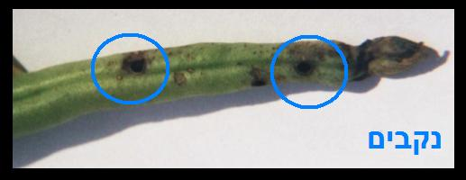
לוביא יבשה
רצוי לקנות באריזה ולא במשקל, ומטיב מעולה
שלב א’ לבדוק בעת הקניה אם יש הרבה אבקה בתחתית השקית, וכן אם רואים חרקים קטנים, אין לקנות סחורה זו.
שלב ב’ ממלאים קערה במים, כשכמות המים כפולה מכמות הלוביה, שופכים את הלוביה למים ומיד בוחשים שני סיבובים, גרגרים שצפים על פני המים להוציאם ולהשליכם וכן להתבונן אם ישנם חרקים או תולעים צפים על פני המים, להשאיר את הלוביה במים 8 שעות לפחות.
שלב ג’ לאחר 8 שעות לבדוק את כל הגרגירים על גבי משטח בדיקה חיצונית לראות אם ישנם חורים בגרגירים או מראה שקוף סימן שישנה תולעת בתוך הגרגר.
תולעים או חרקים העשויים להימצא בגרגרי לוביא עיין עוד בשער רביעי תמונות מס’ 12,8
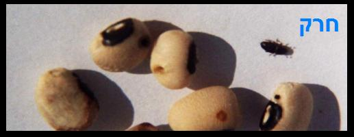
מרוה
עיין ירקות עלים כיצד בדיקתם ועוד דינים (אות ע')
משמש טרי
לחצות את הפרי, להוציא את הגרעין ולבדוק בפנים הפרי שאין תולעת.
תולעים או חרקים העשויים להימצא במשמש עיין עוד בשער רביעי תמונות מס’ 10,5,30

משמש מיובש
לקנות בהשגחה מהודרת
בדיקה חיצונית שלא נדבקו עליו חרקים זבובים וכדומה ובדיקה פנימית שאין בו תולעת.
תולעים או חרקים העשויים להימצא במשמש עיין עוד בשער רביעי תמונות מס’ 10,5,30,7,2
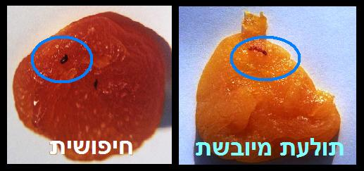
משמש בשימורים
לקנות בהשגחה מהודרת
בדרך כלל נקי.
נבטים
בדיקה חיצונית
שלב א’ פיזור הנבטים על מגש כהה תוך כדי ניעור על המגש ולראות אם נופלים זחלים על המגש.
שלב ב’ לראות שאין זחלים צמודים לנבטים.
אם הנבטים נמכרים עם גרגרי הקטניות מהם צומחים, להתבונן על הגרגרים שאינם מנוקבים, או כשיש כתם מתחת לקליפה הרי זה סימן לנגיעות בגרגירים.
תולעים או חרקים העשויים להימצא בנבטים עיין עוד בשער רביעי תמונות מס’ 9,12

נענע
עיין ירקות עלים בדיקתם ועוד דינים נוספים (אות ע').
סובין
רצוי לקנות באריזה ולא במשקל ומטיב מעולה
שלב א’ לבדוק בעת הקניה אם מצויים גרגרים הדבוקים יחד או לשקית ע"י קורים. אם רואים סימני נגיעות כמתואר, אין לקנות את המוצר.
שלב ב’ מסננים במסננת באופן שהסובין נשארים למעלה ומתבוננים אם נשרו חרקים שחורים חומים או תולעים קטנות.
שלב ג’ מפזרים מעט סובין על גבי משטח לבן ומתבוננים אם ישנם חרקים, תולעים, או קורי משי. אם נמצאה נגיעות באחד מן השלבים אין להשתמש במוצר.
תולעים או חרקים העשויים להימצא בסובין עיין עוד בשער רביעי תמונות מס’ 18,8
סולת
רצוי לקנות באריזה ולא במשקל ומטיב מעולה
שלב א’ מסננים את הסולת במסננת באופן שפירורי הסולת יעברו בדוחק. מה שנותר במסננת שופכים על צלחת לבנה ומתבוננים אם ישנם חרקים שחורים, חומים, זחלים, או קורי משי דביקים.
שלב ב’ שוטחים שכבה דקה של סולת על גבי משטח לבן ומתבוננים אם ישנם חרקים שחורים, חומים, זחלים, או קורי משי. בודקים בצורה זו את כל כמות הסולת. בתוך הסולת מצויות חתיכות חומות, יש לעיין היטב אם אלו קליפות או חלקי חרקים. אם נמצאה נגיעות באחד משלבי הבדיקה, אין להשתמש בסולת.
תולעים או חרקים העשויים להימצא בסולת עיין עוד בשער רביעי תמונות מס’ 18,8
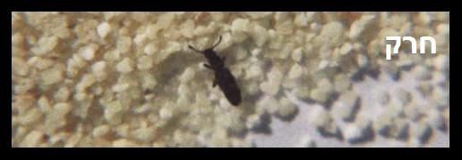
סלק עלים מגידול רגיל
נגוע מאוד בכל מיני חרקים.
שלב א’ משרים במי ניקוי למשך 5 דקות.
שלב ב’ משפשפים על ידי ספוג כל עלה משני צידיו ובפרט במקום הקפלים
שלב ג’ שוטפים כל עלה בנפרד תחת זרם מים חזק.
שלב ד’ להתבונן על כל עלה ממול מקור אור שלא נותרו חרקים ושאין פיתולי מנהרות שנוצרו מרימת זבוב המנהרות
תולעים או חרקים העשויים להימצא בסלק עלים עיין עוד בשער רביעי תמונות מס’ 20,4,9,19
למעשה קשה מאוד לנקות את עלי הסלק באופן מוחלט לכן להשתמש רק בסלק עלים מגידול מיוחד ללא תולעים

סלק עלים - מגידול מיוחד ללא תולעים
בחזקת נקי
שלב א’ משרים במי ניקוי ל 3 דקות.
שלב ב’ שוטפים היטב, תחת זרם מים חזק.
עגבניה
סוג א' בדרך כלל נקיים.
עגבניות באיכות נמוכה בדיקה חיצונית שאין חורים ובפרט באזור הגבעול.
תולעים או חרקים העשויים להימצא בעגבניות עיין עוד בשער רביעי תמונות מס’ 9
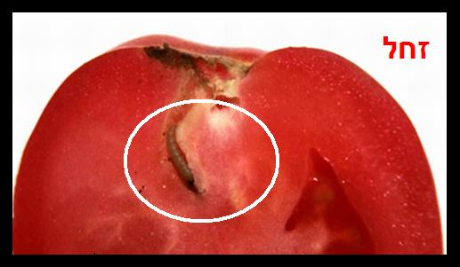
עדשים חומים / אדומים
רצוי לקנות באריזה ולא במשקל ומטיב מעולה
שלב א’ לבדוק בעת הקניה אם יש הרבה אבקה בתחתית השקית, וכן אם מצויים גרגרים הדבוקים יחד או לשקית על ידי קורים. אם רואים סימני נגיעות כמתואר, אין לקנות את המוצר.
שלב ב’ בעוד הגרגרים יבשים, מסננים אותם במסננת רשת על גבי משטח לבן באופן שגרגרי האפונה נשארים למעלה ומתבוננים במה שנפל אם ישנם חרקים קטנים שחורים, חומים, לבנים או תולעים לבנות.
שלב ג’ בודקים את העדשים על גבי משטח לבן, בין הגרגירים. אם ישנם תולעים לבנות, חרקים קטנים בצבע שחור, חום, או לבנים.
שלב ד’ הצפה במים לוקחים כלי ובו מים בכמות כפולה מכמות העדשים, שופכים פנימה את העדשים ומיד בוחשים שני סיבובים, גרגירים נגועים יצופו על פני המים וכן חרקים אם ישנם.
אם נמצא נגיעות באחד מן השלבים אין להשתמש בסחורה זו.
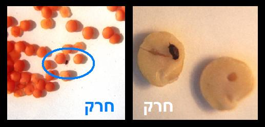
תולעים או חרקים העשויים להימצא בעדשים עיין עוד בשער רביעי תמונות מס’ 12,8,2,21,18
עירית
עיין ירקות עלים בדיקתם ועוד דינים נוספים (אות ע').
עלי גפן ממולאים בשימורים
יש לרכוש רק בהשגחה מהודרת המטפלת בנושא חרקים ושיהיה מצוין כן על גבי תוית ההשגחה.
עלי גפן
יש לבחור עלים יפים ולנקותם באופן יסודי.
אופן א':
שלב א’ להשרות במי ניקוי ל 5 דקות באופן שכל עלה יהיה בנפרד מהשני ולא יהיו כמין מגדל אחד על השני אלא שיהיה מרווח בין עלה לעלה.
שלב ב’ לשפשף עם ספוג ומי ניקוי, כל עלה משני צדדיו, בכל שטח העלה. תשומת לב מיוחדת דרושה לשפשף בזויות החדות שבין העורקים, בצדו התחתון של העלה.
שלב ג’ לשטוף היטב כל עלה בנפרד תחת זרם מים חזק.
אופן ב':
שלב א’ להקפיא למשך 48 שעות לפחות.
שלב ב’ לשטוף היטב תחת זרק מים חזק כל עלה בנפרד תוך כדי שפשוף עם ספוג בכל הפינות.
תולעים או חרקים העשויים להימצא בעלי גפן עיין עוד בשער רביעי תמונות מס’ 1,31,22

עלי גפן בשימורים
לקנות רק בהשגחה מהודרת בלבד
שלב א’ להפריד את העלים.
שלב ב’ להשרותם בקערת מים ל 2 דקות באופן שכל עלה יהיה בנפרד מהשני ולא יהיו כמין מגדל אחד על השני.
שלב ג’ לשטוף כל עלה משני צידיו תחת זרם מים חזק תוך כדי שפשוף בכל שטח העלה ביד או בספוג.
עלי דפנה
רצוי לקנות באריזה ולא במשקל ומטיב מעולה
בדרך כלל נקיים עלול להיות על העלים כנימות מגן.
עלים (ירקות עלים) קטנים מגידול רגיל
כגון: פטרוזיליה, שמיר, רוזמרין, כוסברה, נענה, זעתר, טרגון, לואיזה, מרווה, שיבה, עירית, עלי ביבי, וכדומה..
נגועים מאוד על ידי חרקים רבים
תולעים או חרקים העשויים להימצא בירקות עלים עיין עוד בשער רביעי תמונות מס’ 20,31,1,4,9,7,29,23
1. אם מעוניינים "בטעמם" של העלים כגון לעשות תמצית (מעלי ירק מגידול רגיל) כמו תה נענע, לואיזה, או שמיר במרק וכד' – ישנם שתי אפשרויות:
אופן א'
עשיית תמצית.
שלב א’ להשרות את העלים במי ניקוי ל 5 דקות.
שלב ב’ לשוטפם תחת זרם מים חזק.
שלב ג’ לבשל את העלים בסיר, ולאחר מכן לסנן דרך בד, ניר, פילטר, וכדומה באופן שלא תהיה אפשרות לתולעים לעבור דרך הבד ואז אפשר להשתמש בתמצית.
אופן ב'
נתינת העלים בתוך שקית מבד ולהכניסה לתוך סיר הבישול.
שלב א’ להשרות את העלים במי ניקוי ל 5 דקות.
שלב ב’ לשוטפם תחת זרם מים חזק.
שלב ג’ להכניס את העלים לתוך שקית מבד צפופה מאוד כך שלא תהיה אפשרות לתולעים לצאת לתוך התבשיל, לסגור היטב ולשים את השקית בתבשיל שרוצים לקבל בו את הטעם. ובלבד שבזמן שבוחש בתבשיל יזהר שלא תקרע השקית.
שלב ד’ עם גמר הבישול מוציאם את שקית הבד ומשליכה כך שהטעם נשאר בבישול בלבד.
2. אם מעוניינים לאכול את העלים עצמם מגידול רגיל קשה מאוד לנקותם באופן יסודי לכן יש להשתמש רק בעלים מגידול מיוחד ללא תולעים.
3. אם מעוניינים לעשות עלים מיובשים מגידול רגיל
שלב א’ מייבשים היטב את העלים בשמש או בתנור.
שלב ב’ אחרי הייבוש יש לאחסן אותם בצנצנת סגורה הרמטית במשך י"ב חודש (ובשנה מעוברת י"ג חודש).
שלב ג’ לאחר 12 חודש מותר להשתמש בהם ואין צורך לחשוש מהתולעים שהיו על הירק.
ואם החזיקו את העלים במשך י"ב חודש ללא סגירה הרמטית, הם עלולים להתליע מחדש, לכן צריך לבודקם לפני השימוש וכיצד לבודקם עיין בסעיף הבא
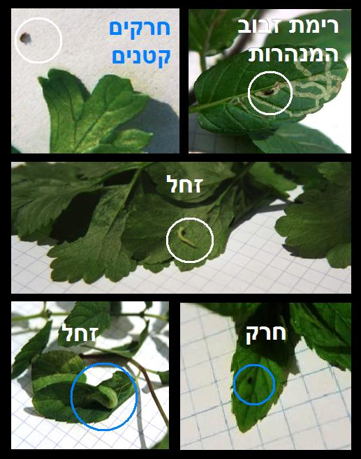
4. עלים מיובשים קצוצים הנמכרים כתבלין (בהשגחה מהודרת)
לפזר על צלחת ולבדוק אם ישנם חרקים, תולעים, או קורי משי ביניהם אם נמצא אין להשתמש בהם.
עלים (ירקות עלים) קטנים – מגידול מיוחד ללא תולעים
כגון: פטרוזיליה, שמיר, רוזמרין, כוסברה, נענה, וכדומה
בחזקת נקיים
שלב א’ מפרידים את העלים.
שלב ב’ משרים במי ניקוי ל 3 דקות.
שלב ג’ שוטפים היטב, תחת זרם מים חזק.
ענבים ירוקים
לשוטפם היטב. יש להתבונן בענבים בזמן האכילה, אם מבחינים בצללית כהה, בנקב או בכתם כהה החודרים פנימה, יש לחצות אותו ענב ולבדוק אם יש תולעים בתוכו.
תולעים או חרקים העשויים להימצא בענבים עיין עוד בשער רביעי תמונות מס’ 5,30,6,10,7
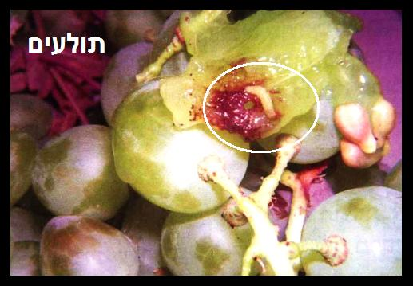
ענבים שחורים
לבודקם היטב בזמן האכילה היות שמקום העקיצה פחות ניכר.
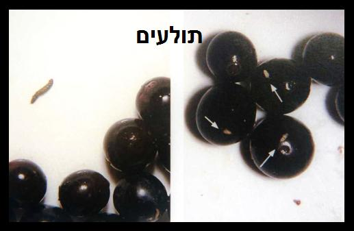
ערמונים
שלב א’ בעת הקניה לראות שאינם ישנים ואין עליהם כעין ירוקת עובש
שלב ב’ בדיקה חיצונית שאין בהם חורים.
שלב ג’ לאחר הקילוף לראות שאין חורים או סימני חרקים ואם ישנם לחצות את הערמון.
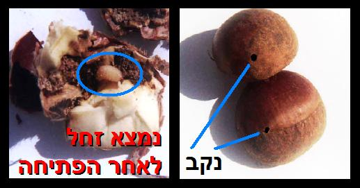
פול יבש
רצוי לקנות באריזה ולא במשקל ומטיב מעולה
שלב א’ לבדוק בעת הקניה אם יש הרבה אבקה בתחתית השקית, וכן אם רואים חרקים קטנים, אין לקנות סחורה זו.
שלב ב’ ממלאים קערה במים כשכמות המים כפולה מכמות הפול, שופכים את הפול למים ומיד בוחשים שני סיבובים, גרגרים שצפים על פני המים להוציאם ולהשליכם וכן להתבונן אם ישנם חרקים או תולעים צפים על פני המים, להשאיר את הפול במים 8 שעות לפחות.
שלב ג’ לאחר 8 שעות לבדוק את כל הגרגירים על גבי משטח בדיקה חיצונית לראות אם ישנם חורים בגרגירים או מראה שקוף סימן שישנה תולעת בתוך הגרגר.
תולעים או חרקים העשויים להימצא בפול יבש עיין עוד בשער רביעי תמונות מס’ 12,8,18

פול בשימורים
יש לרכוש בהשגחה מהודרת
בחזקת נקיים.
פול יבש שבור
רצוי לקנות באריזה ולא במשקל ומטיב מעולה
שלב א’ בעוד הגרגרים יבשים, מסננים אותם במסננת רשת על גבי משטח לבן באופן שגרגרי הפול נשארים למעלה ומתבוננים במה שנפל אם ישנם חרקים קטנים או תולעים לבנות.
שלב ב’ בודקים את הפול על גבי משטח לבן, בין הגרגירים. יש לבדוק אם ישנם תולעים או חרקים קטנים.
שלב ג’ הצפה במים לוקחים כלי ובו מים בכמות כפולה מכמות הפול, שופכים פנימה את הפול ומערבבים מיד, גרגירים נגועים יצופו על פני המים וכן חרקים אם ישנם.
תולעים או חרקים העשויים להימצא בפול יבש עיין עוד בשער רביעי תמונות מס’ 18,8,12

פול ירוק
שלב א’ שטיפה חיצונית היטב.
שלב ב’ בדיקה חיצונית שאין חורים בתרמיל ואם ישנו חור לפתוח ולראות אם ישנה תולעת.
תולעים או חרקים העשויים להימצא בפול ירוק עיין עוד בשער רביעי תמונות מס’ 9,1,20

פול ירוק קפוא
יש לרכוש בהשגחה מהודרת
בדרך כלל נקי.
אפשרי בדיקה חיצונית שאין חורים בתרמיל ואם ישנו חור לפתוח ולראות אם ישנה תולעת.
פטרוזיליה
עיין ירקות עלים בדיקתם ועוד דינים נוספים (אות ע').
פטריות טריות
1. פטריות בר.
בדרך כלל נגועות בתולעים, ובדיקתן קשה לכן מומלץ לא להשתמש בהן
ואם בכל זאת משתמשים יש להשתמש בפטריות טריות בעל מראה יפה ומוצק
שלב א’ מפרידים את הרגל מכובע הפטריה ומתבוננים באזור חיבור הראש עם הרגל אם מצויות תולעים לבנות קטנות וכן האם יש נקבים דקים קטנים וכן יש לבדוק על גבי הרגל ובחלק הפנימי של הראש וכן לבדוק האם ישנם עכבישים קטנטנים או אקריות ואם נמצא עדיף שלא להשתמש בכל הפטריות מקניה זו
שלב ב’ שוטפים את הראש והרגל היטב תחת זרם מים חזק.
שלב ג’ חותכים את הפטריות לפרוסות מאונכות כולל הרגל ובודקים אם יש מחילות דקות הנראות כדקירות מחט בצבע חום, או עכבישים, או אקריות.
תולעים או חרקים העשויים להימצא בפטריות עיין עוד בשער רביעי תמונות מס’ 30,1, ועכבישים קטנים.
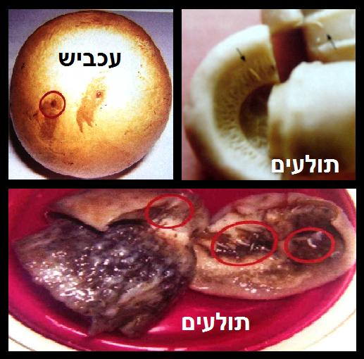
2. פטריות מגידול מסודר.
יש להשתמש בפטריות טריות בעלות מראה יפה ומוצק
שלב א’ מפרידים את הרגל מכובע הפטריה ומתבוננים באזור חיבור הראש עם הרגל אם מצויות תולעים לבנות קטנות וכן האם יש נקבים דקים קטנים וכן יש לבדוק על גבי הרגל ובחלק הפנימי של הראש וכן לבדוק האם ישנם עכבישים קטנטנים או אקריות ואם נמצא עדיף שלא להשתמש בכל הפטריות מקניה זו
שלב ב’ שוטפים את הראש והרגל היטב תחת זרם מים חזק.
שלב ג’ רצוי לחתוך את הפטריות לפרוסות מאונכות כולל הרגל ובודקים אם ישנם תולעים קטנות או מחילות דקות הנראות כדקירות מחט בצבע חום.
תולעים או חרקים העשויים להימצא בפטריות עיין עוד בשער רביעי תמונות מס’ 1,30, ועכבישים קטנים.
פטריות בשימורים/פטריות מיובשות
יש לרכוש אך ורק בהשגחה מהודרת המטפלת בנושא חרקים.
פלפל (גמבה) אדום/ ירוק/צהוב/כתום
שלב א’ בדיקה חיצונית שאין חורים ובפרט באזור העוקץ.
שלב ב’ לאחר הפתיחה לבדוק שאין תולעת בפנים.
תולעים או חרקים העשויים להימצא בפלפל עיין עוד בשער רביעי תמונות מס’ 20,1,9
פלפל חריף - ירוק / אדום
שלב א’ בדיקה חיצונית שאין חורים.
שלב ב’ רצוי לחצות לאורך ולבדוק שאין תולעת בפנים.
תולעים או חרקים העשויים להימצא בפלפל עיין עוד בשער רביעי תמונות מס’ 9

פלפל חריף – שיפקה
(בהשחה מהודרת בחזקת נקי)
בהשגחה רגילה לעיתים נגוע
שלב א’ בדיקה חיצונית שאין חורים.
שלב ב’ רצוי לחצות לאורך ולבדוק שאין תולעת בפנים.
תולעים או חרקים העשויים להימצא בפלפל עיין עוד בשער רביעי תמונות מס’ 9

פלפל חריף מיובש – שאטה
רצוי לקנות באריזה ולא במשקל
שלב א’ לסנן את הפלפל במסננת כך שהפלפל נשאר במסננת והפסולת שביניהם תיפול. מתבוננים בנשורת אם נשרו תולעים או חרקים.
שלב ב’ לחצות ולבדוק בדיקה פנימית אם ישנם תולעים או קורים.
תולעים או חרקים העשויים להימצא בפלפל עיין עוד בשער רביעי תמונות מס’ 8,18,21
צימוקים
ש לרכוש בהשגחה מהודרת ומטיב מעולה
הצימוקים מאוחסנים זמן רב ולכן עלולים להתליע.
לכן יש להוציא מעט צימוקים לצורך בדיקת מדגם (עיין פרק ח' כיצד היא בדיקת המדגם) ולהשרותם במים חמים ל 10 דקות ולערב, להמתין עד שהמים יעמדו. אם יש נגיעות, התולעים יצופו למעלה. אם נמצאה נגיעות אין להשתמש בצימוקים, היות והם עלולים להיות נגועים בפנים.
תולעים או חרקים העשויים להימצא בצמוקים עיין עוד בשער רביעי תמונות מס’ 18,17,8,2
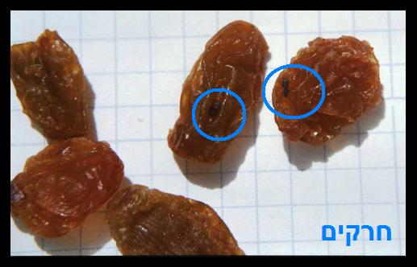
קולורבי
בדרך כלל נקי.
יש לקלפו היטב.
קלמנטינה
על הקליפה מצויות כנימות בצבע חום או אפור. לכן כשחותכים/ קולפים קלמנטינה יש להיזהר שהכנימות לא תחדורנה לפרי. וכן שלא תעבורנה מהיד לפרי בעת הקליפה.
אם ישנם כנימות על הקלמנטינה אם הם בודדות ניתן להורידם בשפשוף ידני
ובמידה והם רבים יש להשרות את הקלמנטינה במים עם חומר ניקוי כדי שיתרככו ובעזרת מברשת קשה לשפשף את הפרי מכל צדדיו.
וכן לראות שאין סימני עקיצות של זבוב הפירות.
תולעים או חרקים העשויים להימצא בקלמנטינה עיין עוד בשער רביעי תמונות מס’ 5,30,22
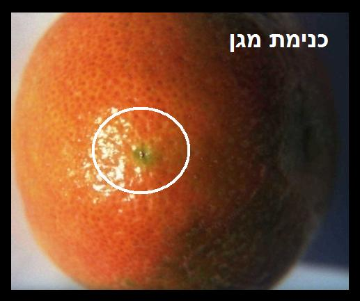
קמח לבן
לנפותו בנפה צפופה של 70 "מש (והמינימום 60 "מש").
ניתן לאחסן את הקמח מיד אחר הניפוי במקרר עד ג' שבועות, ובתא ההקפאה ללא הגבלת זמן.
קמח שנופה כדין, ושהה מחוץ להקפאה יותר מ 24 שעות צריך לנפותו שוב קודם השימוש.
תולעים או חרקים העשויים להימצא בקמח עיין עוד בשער רביעי תמונות מס’ 15,28,2,21

קמח מלא
1. קמח מלא עבה יותר מקמח לבן, לכן אין אפשרות לנפותו בנפה צפופה של 70 "מש". אלא בנפה 50 - 60 "מש".
2. ניתן להשיג בחנויות קמח מלא שנשמר בהקפאה מרגע הטחינה עד זמן השימוש כך שאין בו חשש תולעים ואין צורך לנפותו קודם השימוש (ובלבד שיהיה בהשגחה מהודרת). או שניתן לקנות קמח מלא שמגיע באריזת וואקום או באריזה מנופחת ושיהיה מצוין על גבי האריזה שאינו זקוק לניפוי ושיהיה בהשגחה מהודרת.
תולעים או חרקים העשויים להימצא בקמח עיין עוד בשער רביעי תמונות מס’ 15,2,28,21
רוזמרין
עיין ירקות עלים בדיקתם ועוד דינים נוספים (אות ע').
רוקולה
עיין ירקות עלים בדיקתם ועוד דינים נוספים (אות ע').
ריחן תימני
עיין ירקות עלים בדיקתם ועוד דינים נוספים (אות ע').
רימון
שלב א בדיקה חיצונית שאין חורים וכן מכנימות.
שלב ב’ לאחר חציית הרימון לראות שאין בו תולעים או אזורים כהים.

שומר
חרקים וזבובים מסתתרים בין השכבות.
שלב א’ מסירים את הגבעולים והעלים הירוקים וזורקם.
שלב ב’ מפרידים את השכבות.
שלב ג’ שוטפים תחת זרם מים היטב כל שכבה משני צידיה תוך כדי שפשוף.
תולעים או חרקים העשויים להימצא בשומר עיין עוד בשער רביעי תמונות מס’ 31,7,29
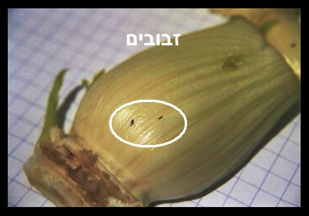
שומשום רגיל/מלא
רצוי לקנות באריזה ולא במשקל ומטיב מעולה
שלב א’ בעת הקניה לבדוק אם מצויים גרגרים הדבוקים יחד או לשקית על ידי קורים. אם רואים סימני נגיעות כמתואר, אין לקנות את המוצר.
שלב ב’ לסנן את השומשום במסננת כך שהשומשום נשאר במסננת והפסולת שביניהם תיפול. מתבוננים בנשורת אם נשרו תולעים או חרקים.
שלב ג’ מפזרים שומשום על גבי משטח לבן ובודקים ביניהם מחרקים, תולעים, או גושים הדבוקים על ידי קורי משי, אם נמצא נגיעות אין להשתמש בסחורה זו. נקודות כהות על השומשום או קצה שחור אינם סימן לנגיעות.
תולעים או חרקים העשויים להימצא בשומשום עיין עוד בשער רביעי תמונות מס’ 8,18
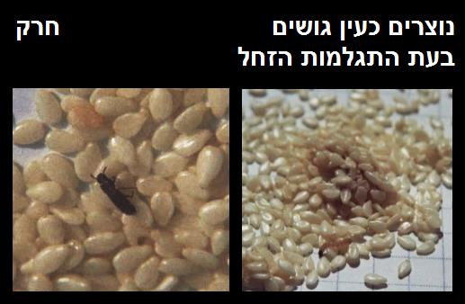
שום ירוק
בדרך כלל נקי.
לקלף את שיני השום ולשוטפם תחת זרם מים.
שום יבש
לקלף את שיני השום ולשוטפם תחת זרם מים.
תולעים או חרקים העשויים להימצא בשום עיין עוד בשער רביעי תמונות מס’ 8,21
שזיף טרי
שלב א’ בדיקה חיצונית מכנימות.
שלב ב’ לחצות ולבדוק אם ישנה תולעת באזור הגרעין.
תולעים או חרקים העשויים להימצא בשזיף עיין עוד בשער רביעי תמונות מס’ 22,10,5,30

שזיף יבש
שלב א’ שטיפה חיצונית תוך כדי שפשוף בעדינות.
שלב ב’ בדיקת מדגם פנימית שאין בו תולעים וכדומה (עיין פרק ח' כיצד היא בדיקת המדגם).
תולעים או חרקים העשויים להימצא בשזיף יבש עיין עוד בשער רביעי תמונות מס’ 10,30,8,18,7,2
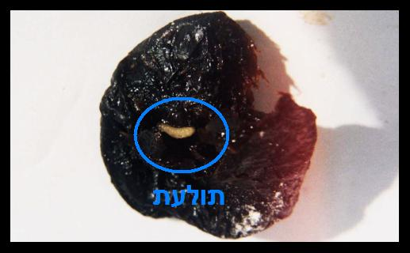
שיבה
עיין ירקות עלים כיצד בדיקתם ועוד דינים (אות ע').
שיבולת שועל
רצוי לקנות באריזה ולא במשקל ומטיב מעולה
שלב א’ בעת הקניה לבדוק אם מצויים גרגרים הדבוקים יחד או לשקית על ידי קורים. אם רואים סימני נגיעות כמתואר, אין לקנות את המוצר.
שלב ב’ מסננים במסננת על גבי משטח לבן באופן שהשיבולת שועל נשארת למעלה ומתבוננים במה שנפל אם ישנם חרקים קטנים שחורים, חומים, לבנים, או תולעים לבנות.
שלב ג’ לפזר על משטח לבן ולבדוק בין פתיתי השיבולת שועל אם ישנם חרקים שחורים, חומים, לבנים, או תולעים אם נמצא נגיעות אין להשתמש בסחורה זו.
תולעים או חרקים העשויים להימצא בשיבולת שועל עיין עוד בשער רביעי תמונות מס’ 18,8,21
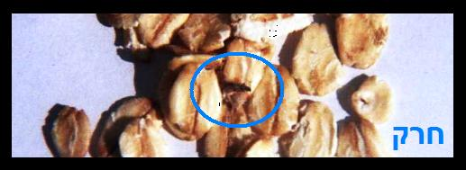
שמיר
עיין ירקות עלים כיצד בדיקתם ועוד דינים (אות ע').
שסק
לחתוך את אזור הפרח, לחצות לשנים, ולבדוק בפנים מתולעים.
תולעים או חרקים העשויים להימצא בשסק עיין עוד בשער רביעי תמונות מס’ 5,30

שעועית טרייה לבנה/ירוקה
שלב א’ שטיפה חיצונית היטב.
שלב ב’ בדיקה חיצונית שאין חורים בתרמיל ואם ישנו חור לפתוח ולראות אם ישנה תולעת.
תולעים או חרקים העשויים להימצא בשעועית טרייה עיין עוד בשער רביעי תמונות מס’ 9,1,20
שעועית ירוקה/לבנה קפואה/שימורים (יש לקנות בהשגחה מהודרת) בדרך כלל נקיה
אפשרי לעשות בדיקת מדגם חיצונית (עיין בפרק ז' כיצד נעשית בדיקת המדגם) שאין חורים בתרמיל ואם ישנו חור לפתוח ולראות אם ישנה תולעת
שעועית יבשה
רצוי לקנות באריזה ולא במשקל ומטיב מעולה
שלב א’ לבדוק בעת הקניה אם יש הרבה אבקה בתחתית השקית, וכן אם רואים חרקים קטנים, אין לקנות סחורה זו.
שלב ב’ ממלאים קערה במים כשכמות המים כפולה מכמות השעועית, שופכים את השעועית למים ומיד בוחשים שני סיבובים, גרגרים שצפים על פני המים להוציאם ולהשליכם וכן להתבונן אם ישנם חרקים או תולעים צפים על פני המים, להשאיר את השעועית במים 8 שעות לפחות
שלב ג’ לאחר 8 שעות לבדוק את כל הגרגירים על גבי משטח בדיקה חיצונית לראות אם ישנם חורים בגרגירים או מראה שקוף סימן שישנה תולעת בתוך הגרגר.
תולעים או חרקים העשויים להימצא בגרגרי השעועית עיין עוד בשער רביעי תמונות מס’ 12,8,18
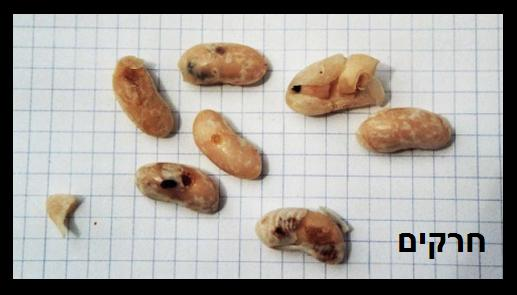
שעועית בשימורים
בהשגחה מהודרת - בחזקת נקי.
שקדים בקליפתם הקשה
לאחר הסרת הקליפה להתבונן שאין חרקים, זחלים, או קורים על גבי הקליפה מצידה הפנימי וכן על השקד או סימני כירסום בשקד.
תולעים או חרקים העשויים להימצא בשקדים עיין עוד בשער רביעי תמונות מס’ 8,18

שקדים קלופים
שלב א’ לבדוק את כולם מבחוץ אם ישנם חורים, או סימני כירסום.
שלב ב’ לעשות בדיקת מדגם (עיין בפרק ז' כיצד נעשית בדיקת המדגם) פנימית אם יש נגיעות, אם נמצאו תולעים בבדיקה יש לחצות את כולם ולבדוק בפנים.
תולעים או חרקים העשויים להימצא בשקדים עיין עוד בשער רביעי תמונות מס’ 8,18
שקדים חצויים/שבורים
שלב א’ בדיקה חיצונית האם ישנם חרקים, זחלים,או קורי משי הרי זה סימן לנגיעות.
שלב ב’ מסננים דרך מסננת עם חורים גדולים באופן שהשקדים נשארים למעלה ומתבוננים בנשורת אם ישנם חרקים או תולעים.
חרקים או תולעים העשויים להימצא בשקדים עיין עוד בשער רביעי תמונות מס’ 8,18
תאנה טרייה
נגועה מאוד. קשה להבחין בתולעים כי הן דומות מאד לנימים שבפנים הפרי.
שלב א’ בדיקה חיצונית מכנימות.
שלב ב’ חוצים את התאנה, מקפלים אותה החוצה ומתבוננים אם יש תולעים לבנות.
שלב ג’ שמים את התאנה בצלוחית זכוכית שקופה עם מים, כאשר פנים הפרי כלפי מטה. אם התאנה נגועה, אפשר להבחין בתולעים קטנות השטות במים. לאחר כ-2 דקות הן שוקעות בתחתית הצלוחית . במקרה ונמצאה נגיעות, אין לאכול את התאנה.
תולעים או חרקים העשויים להימצא בתאנה טרייה עיין עוד בשער רביעי תמונות מס’ 18,5,30,22
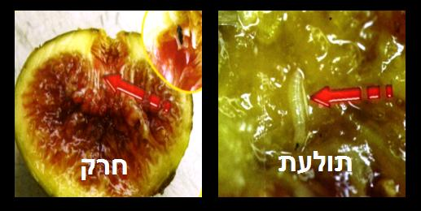
תאנה יבשה
יש לקנות מטיב מעולה
בעייתית מאד, היות וצבע התולעים והחרקים דומים לצבע הפרי, וקשה להבחין בהן.
שלב א’ בדיקה חיצונית, מתבוננים אם מצויים חרקים קטנים הנראים כגרגרי חול. במידה ונמצאו' אין להשתמש בפרי.
שלב ב’ שוטפים היטב מבחוץ.
שלב ג’ מסירים את האזור מסביב לחור שבתחתית התאנה.
שלב ד’ חוצים את התאנה לשתיים ומקפלים את פנים הפרי החוצה ולבדוק היטב כנגד אור.
תולעים או חרקים העשויים להימצא בתאנה יבשה עיין עוד בשער רביעי תמונות מס’ 8,18,30,2
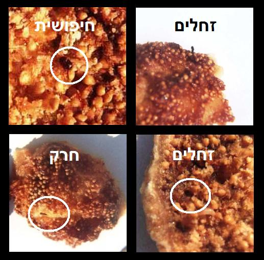
תבלינים במשקל
עלולים להיות נגועים מחמת אחסון ממושך וכן משום היותם פתוחים וצריך לבדוק לפני השימוש:
אופן א'
לפזר על צלחת ולבדוק אם ישנם חרקים קטנים שחורים, לבנים, תולעים, או קורי משי, אם נמצא נגיעות אין להשתמש בתבלין.
אופן ב'
או לסנן במסננת צפופה באופן שהתבלין יעבור בדוחק ולהתבונן היטב במה שנותר במסננת. אם נמצא נגיעות אין להשתמש בתבלין.
רצוי לאחסן את התבלינים בתא ההקפאה.
תולעים או חרקים העשויים להימצא בתבלינים עיין עוד בשער רביעי תמונות מס’ 18,8,2,21
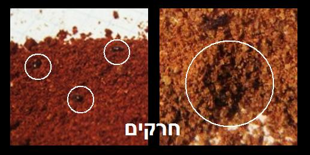
תבלינים - באריזה סגורה הרמטית ובהשגחה מהודרת
בדרך כלל נקיים, אפשרי לבודקם כנ"ל במשקל, ולאחר הפתיחה רצוי להחסן אותם בתא ההקפאה.
תות שדה
שלב א’ לקנות מטיב מעולה.
שלב ב’ חותכים את העלה הירוק עם מעט מהפרי, וכן מסירים מקומות מקופלים וסדוקים ואזורים רכים מאוד.
שלב ג’ משרים במי ניקוי ל- 3 דקות.
שלב ד’ שוטפים היטב תחת זרם מים חזק תוך כדי שפשוף על ידי ספוג/מברשת מכל הצדדים.
מומלץ לחצות את התותים ולבדוק בפנים, אם מצויה תולעת בתוך התות.
תולעים או חרקים העשויים להימצא בתות שדה עיין עוד בשער רביעי תמונות מס’ 20,1,6,30,9,29

תירס גרגירים - פופקורן
שלב א’ מסננים במסננת עם חורים גדולים באופן שגרגרי התירס נשארים למעלה ומתבוננים אם יש חרקים קטנים בנשורת.
שלב ב’ מפזרים על גבי משטח ובודקים אם יש חרקים בין הגרגירים או חורים עגולים בגרגירים. נקודה שחורה בקצה הגרגיר אינה סימן לנגיעות. אם נמצאה נגיעות עדיף לא להשתמש היות ועלולה להיות נגיעות פנימית שלא נראית מבחוץ.
תולעים או חרקים העשויים להימצא בתירס גרגרים עיין עוד בשער רביעי תמונות מס’ 18,8,2,21
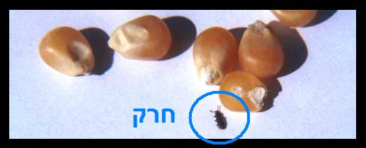
תירס קלחים
נגוע מאוד בחרקים, הנכנסים בין הגרגרים ונעלמים מן העין.
שלב א’ חותכים את כל הגרגרים מהקלח לפני הבישול.
שלב ב’ משרים את הגרגרים במי ניקוי ל 5 דקות.
שלב ג’ שוטפים היטב תחת זרם מים חזק בתוך מסננת.
תולעים או חרקים העשויים להימצא בתירס קלחים עיין עוד בשער רביעי תמונות מס’ 31,20,9,1

תירס - קלחי תירס מגידול בחזקת נקי מתולעים המשווקים תחת השגחה מהודרת
בחזקת נקי.
לשטפם תחת זרם מים.
תירס - גרגרי תירס קפוא או מתוק
יש לרכוש בהשגחה מהודרת
שניהם בחזקת נקיים.
תירס גמדי
בחזקת נקי.
תמר יבש
שלב א’ בדיקה חיצונית מחורים, או אקריות הנראים כגרגרי חול.
שלב ב’ חוצים לשנים, מוציאים את הגרעין ובודקים היטב משני הצדדים שאין תולעת או חרקים, צריך התבוננות טובה היות וצבע התולעים כצבע התמר. גבישים לבנים אינם סימן לנגיעות.
תולעים או חרקים העשויים להימצא בתמר יבש עיין עוד בשער רביעי תמונות מס’ 18,14,16,8,2

תמר לח צהוב
בחזקת נקי.
תמרים לחוצים - ללא חרצנים
רצוי לא להשתמש.
ממרח תמרים
יש לרכוש בהשגחה מהודרת
בחזקת נקי.
תפוז
על הקליפה מצויות כנימות בצבע חום או אפור. לכן כשחותכים תפוז יש להיזהר שהכנימות לא תחדורנה לפרי. וכן שלא תעבורנה מהיד לפרי בעת הקליפה.
אם ישנם כנימות על התפוז אם הם בודדות ניתן להורידם בשפשוף ידני
ובמידה והם רבים יש להשרות את התפוז במים עם חומר ניקוי כדי שיתרככו ובעזרת מברשת קשה לשפשף את הפרי מכל צדדיו.
וכן לראות שאין סימני עקיצות של זבוב הפירות.
תולעים או חרקים העשויים להימצא בתפוז עיין עוד בשער רביעי תמונות מס’ 22,5,30

תרד - עלי תרד מגידול רגיל
חרקים קטנים מצויים משני צדי העלה, וכן ישנם חרקים החודרים דרך מחילות לתוך עובי העלה והשדרה.
שלב א’ מפרידים את העלים ומשרים אותם במי ניקוי ל 5 דקות.
שלב ב’ לשפשף על ידי ספוג עם מי ניקוי, כל עלה משני צדדיו, בכל הקפלים והפינות.
שלב ג’ לשטוף היטב, תחת זרם מים חזק.
שלב ד’ להתבונן על כל עלה ממול מקור אור שלא נותרו חרקים ושאין פיתולי מנהרות שנוצרו מרימת זבוב המנהרות.
תולעים או חרקים העשויים להימצא בעלי תרד עיין עוד בשער רביעי תמונות מס’ 20,4,31,1,9
למעשה קשה מאוד לנקות את עלי התרד באופן מוחלט לכן להשתמש רק מגידול מיוחד ללא תולעים

תרד - עלי תרד מגידול מיוחד ללא תולעים
שלב א’ להשרות את העלים במי ניקוי ל 3 דקות.
שלב ב’ לשטוף תחת הברז.
תרד מיובש
רצוי לקנות באריזה ולא במשקל ומטיב מעולה
להשתמש רק בתרד טחון דק. לסנן ולבדוק מה שעבר את הסינון וגם מה שנותר במסננת. אם נמצאה נגיעות , אין להשתמש.
תולעים או חרקים העשויים להימצא בתרד מיבש עיין עוד בשער רביעי תמונות מס’ 18,8
שער רביעי - תמונות סוגי החרקים המצויים בירקות פירות במזון היבש ובדגים
1 - אקריות אדומות / הלבד
תיאור – יצורים זהירים ביותר בגודל של 0.3 מילימטר, צבעם חום אדום.
זהוי – נראים כגרגר חול.
מצויים בדרך כלל ב: תות שדה, חסה, כרפס, פטרוזיליה, שמיר, תרד, ועוד ירקות עלים.
2 - אקריות פירות יבשים
תיאור - יצורים זעירים ביותר גודלם שליש עד חצי מילימטר.
זהוי - צבעם לבן וקשה להבחין בהם.
מצויות ב: עלולות להימצא כמעט בכל סוגי המזון קמח, פירות יבשים, קטניות, ועוד.

3 - זבוב הזית הרימה
תיאור – גודלו כ 5 ס"מ מטילה ביצה בתוך הזית על ידי צינור הטלה.
זיהוי – מקום הדקירה שקוע מעט, ועם התפתחות הרימה נראה כחלון שקוף ובזית כבוש מראה חום.

4 - זבוב המנהרות
תיאור – זבוב קטן העוקץ את העלה ומטיל בתוכו ביצים זעירות, ומהן בוקעות תולעים קטנות המתפתחות מתחת לקרום הדק של העלה וחופרות מנהרות בעובי העלה.
תיאור התולעים – גודל התולעת בצעירותה הוא כמילימטר אחד ולאחר מכן גדילה לכ שני מילימטר.
זיהוי – כעין שבילים על גבי העלה.
מצוי בדרך כלל ב: חסה, עלי סלק, כרפס, בצל ירוק, פטרוזיליה, כוסברה, וכן על עוד עלי ירקות אחרים.

5 - זבוב הפירות
תיאור - גודלו חצי סנטימטר, נועץ הזבוב את צינור ההטלה שלו בפרי ומטיל לתוך הפרי ביצים, ומביצים אלו בוקעות רימות (תולעים) באורך מילימטר אחד וגדלות עד תשעה מילימטר, צבעם לבן קרם ובראשן נקודה שחורה.
זהוי – אזור העקיצה משתנה לכהה ורך, אולם כאשר הרימות עדין קטנות קשה להבחין.
מצוי ב: תאנה, אפרסק, דובדבן, גויאבה, ועוד.

6 - זבוב התסיסה
תיאור – גודלו שלוש עד ארבע מילימטר, צבעו חום, הזבוב מטיל ביצים ומהם בוקעים רימות (תולעים).

7 - זבובי כבול ושאר זבובונים
תיאור - זבובונים קטנים שחורים, גודלם שתים שלוש מילימטר.
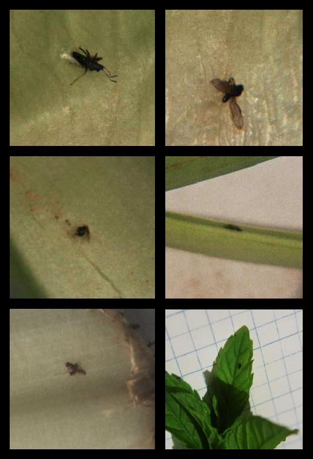
8 - זחלי עש במזון יבש
תיאור – העש הוא פרפר שגודלו כסנטימטר וחצי, צבעו אפור חום בז', העש מטיל ביצים ומהם בוקעים זחלים שאורכם כמילימטר אחד וגדלים עד סנטימטר אחד, ומתגלמים והופכים לפרפר.
זהוי – קורי משי דביקים.
מצוי ב: קטניות, סולת, בפירות יבשים, גרעינים, אגוזים, שקדים, ועוד.

9 - זחלים
תיאור – גודלם מחצי סנטימטר עד חמש סנטימטר. צבעם אפור חום ירוק.
זהוי – כירסום העלים, חורים בפרי.
מצויים בדרך כלל ב: כרוב, חסה, פלפל ועוד שאר ירקות עלים אחרים.
10 - זחלי עש
תיאור – זחל שצבעו לבן צהוב או חום אדום, עם ראש כהה, וגודלו חצי סנטימטר עד סנטימטר וחצי.
זיהוי - חודר לתוך הפרי בדרך כלל ליד העוקץ ומגיע לאזור הגרעין, וגורמים לקורי משי.

11 - זחלים
תיאור – זחלים גודלם ממילימטר אחד עד שמונה מילימטר, צבעם קרם עם ראש כהה.
מצויים ב: בפירות, תאנים, צימוקים, משמש, שזיפים, תמרים, ועוד.
12 - זרעית השעועית
תיאור – צבעה חום שחור, גודלה שתים שלוש מילימטר, החיפושית מטילה ביצה על גבי הקטנית ומתוך הביצה בוקע זחל החודר לתוך הגרגר ומתגלם בתוכה והופך לחרק שחור ובוקע החוצה.
מצויה ב: שעועית יבשה, פול יבש, חומוס, אפונה יבשה, עדשים, ועוד.
13 - חדקנית האורז
תיאור – חרק קטן גודלו עד ארבע מילימטר צבעו חום שחור, החדקנית נוקבת חור קטן בגרגר ומטילה בתוכו ביצה זעירה וסותמת את החור, מהביצה בוקע זחל לבן ובעודו בתוך הגרגר מתגלם והופך לחדקנית בוגרת.
מצוי ב: אורז, חיטה, גריסים, תירס יבש, ועוד.

14 - חיפושית הטבק
תיאור – גודלה שתים שלוש מילימטר, צבעה חום אדמדם, החיפושית מטילה ביצים במזון יבש, ומהביצים בוקעים זחלים שצבעם לבן צהוב שגודלם עד ארבע מילימטר ומתגלם והופך לחרק.
מצויה ב: תבלינים, עשבי תבלין, ועוד.

15 - חיפושית הקמח הערמונית והזחל
תיאור – חרק שצבעו חום אדום, גודלו שלוש ארבע מילימטר, אורך הזחל עד חמש מילימטר, ומתגלם והופך לחרק.
מצויה ב: קמח, חיטה, בוטנים, אגוזים, תבלינים, קפה, ועוד.
16 - חיפושית התסיסה
תיאור – בגודל שתים עד ארבע מילימטר, צבעם חום או שחור. החיפושית מטילה ביצים ומהם בוקעים זחלים, צבע הזחל לבן או צהוב וגודלו מאחד מילימטר עד שבעה מילימטר.
מצוי ב: תאנים, צימוקים, תמרים, בוטנים, שקדים, ועוד.
17 - חיפושית משוננת החזה
תיאור - חרק קטן, צבעו חום, גודלו שתים שלוש מילימטר.
מצוי ב: כמעט בכל סוגי המזון היבש.

18 - חרקים קטנים
תאור – גודלם עד שלוש מילימטר, צבעם שחור חום.
זהוי – גורמים לאבקה בתחתית האריזה.
19 - חלזונות – שבלולים
תיאור – חלזונות עם קונכיה או בלעדיה.
20 - כנימות עלה
תיאור – זבובונים קטנים בצבע ירוק צהבהב ולעיתים גם בצבע אפור או שחור.
גודלם ,נע בין חצי מילימטר לשני מילימטרים.
זיהוי – צבע הכנימה מתמזג עם צבע הירק שעליו היא יושבת ולכן קשה לגלותה. הכנימות נצמדות לעלה באמצעות רגליהן, וכן על ידי חידקן המוחדר לעלה. גם לאחר מותן הן נשארות צמודות לעלה ואינן יורדות בשטיפה רגילה.
מצויות בדרך כלל ב: חסה, כרובית, ברוקולי, שמיר, פטרוזיליה, כוסברה, כרפס, נענע, שיבה, ארטישוק, תות שדה, וכן עלי ירק אחרים.
21 - כינת ספרים
תיאור – חרק קטן גודלו מילימטר אחד, צבעו אפור או צהוב.
מצוי ב: ספרים, אורז, חיטה, ועוד.
22 - כנימות מגן
תיאור בקיצור – יצורים זעירים בגודל 0.3 מילימטר נצמדים לקליפת הפרי ומוצצים ממנו, ומכסים גופם בקליפת מגן.
זהוי – נראית הכנימה כנקודת לכלוך.
מצוי ב: בכל סוגי פירות ההדר.
22 - כנימת פלטוריה
תיאור – כנימת מגן בצבע אפור חום או לבן, נצמדת לפרי מבחוץ.
זהוי – גורמת לכתמים אדמדמים בקוטר 2-3 מילימטר.
23 - כנימות עש הטבק
תיאור - זבובן בגודל מילימטר אחד, צבעו לבן.
מצויים בדרך כלל ב: חסה ועוד ירקות עלים.

24 - כנימה קמחית
תיאור – יצור זעיר בצורה עגלגלה מכוסה באבקת שעוה לבנה, גודלה שתיים עד ארבע מילימטר.

25 - מראה שקוף סימן לנגיעות של זרעית השעועית

26 - נובר התבואה
תיאור – חרק שצבעו חום אדום, גודלו שתים שלוש מילימטר, מטיל ביצים בין גרגרי התבואה ובוקע ממנה זחל המגיע עד כחמש מילימטר, מתגלמים והופכים לחרק.
מצוי ב: חיטה, אורז מלא, שיפון.
27 - נקב חשש לנגיעות

28 - עש התבואה
תיאור – העש הוא פרפר שגודלו כסנטימטר וחצי, צבעו אפור חום בז', העש מטיל ביצים ומהם בוקעים זחלים שאורכם כמילימטר אחד וגדלים עד סנטימטר אחד, ומתגלמים והופכים לפרפר.
מצוי ב: קטניות, סולת, פירות יבשים, גרעינים, אגוזים, שקדים, ועוד.

29 - פסוק
תיאור – חרק קטן גודלו
מילימטר אחד, צבעו אפור/ צהוב/אדום.
מצוי ב: ספרים, אורז, חיטה, ועוד.
30 - רימות - תולעים
תיאור – רימות של זבובים נראות כתולעים קטנים שבראשם נקודה שחורה, גודלם ממילימטר אחד עד שמונה מילימטר.
31 - תריפס
תיאור – יצור זהיר ארוך וצר באורך חצי מילימטר עד מילימטר אחד בצעירותו צבעו לבן או צהוב, ובהתבגרותו משתנה לאפור או שחור חום.
זהוי – בדרך כלל הם מסתתרים בין העלים כגון בין עלי הכרוב, ומחמת צבעם קשה לזהותם.
מצוי בדרך כלל ב: כרוב, כרובית, ברוקולי, בצל ירוק, תירס, חסה, שמיר, ארטישוק, וכן על עלי ירק אחרים.

32 - אורגולוס
תיאור – טפילים קטנים צורת גופם כעין עיגול מעוך, צבעם כמעט שקוף ויש להם שתי עיניים שחורות, גודלם חצי מילימטר עד שתי מילימטר.
זהוי – נצמד לעור הדג בחוזקה וקשה מאוד להבחין בו, נמצא במיוחד באזור הזנב, הסנפירים, והראש.
מצוי ב: בדגים המגיעים מבריכות
ולעיתים מאגמים, ומצויים בקרפיון
ולעיתים באמנון, בורי ועוד.
33 - לרניאה
תיאור – נראים כחוטים לבנים או אפורים, אורכם סנטימטר אחד.
זהוי – חלק מגופו מוחדר לתוך עור הדג וגורם לפצע אדום, הניכר היטב, נמצא בעיקר באזור הזנב, הסנפירים, והצוואר.
מצוי ב: בעיקר בדגי קרפיון, ולעיתים גם בכסיף, בורי, לקס, אמור, אמנון.
34 - כינת סלמון
תיאור – צבעו חום אורכו כסנטימטר אחד עם זנב שאורכו כשני סנטימטר.
זיהוי – נצמדים לעור הדג וניכרים היטב.
35 - תולעי (אניסאקיס)
תיאור – תולעים קטנות צבען המקורי הוא שקוף, ולעיתים הם מקבלים צבע שונה עקב המאכל שלהם, לבן, ורוד, אפור, אורכן סנטימטר אחד עד ששה סנטימטר.
זהוי – כעין נחשים דקיקים, נצמדות לאברים הפנימיים, או לדפנות הבטן, וכן לאשכול ביצי הדג, מצויות לעיתים בתוך בשר הדג.
מצוי ב: חלל הבטן של דג אדום, מטיאס, בקלה צעיר, סלמון מן הים, סול, פלאונדר, קוד, ועוד. ובסוגי דגים מסוימים ובדייג מסוים ניתן למצוא תולעים אלו בבשר הדגים.
36 - טפיל הצצטודה בדג בקלה
שער חמישי - שולחן ערוך יורה דעה סימן פד'
בספר המקורי הובא כאן באר היטב ומראה מקומות מדברי האחרונים שדנו בנושא תולעים - מסיבות טכניות לא הבאנו את אלו כאן - אתכם הסליחה
דיני תולעים הנמצאים במים בפירות בקמח ובגבינה.(ובו י"ז סעיפים):
סעיף א':
שרצים הגדלים במים שבכלים ושבבורות שיחין ומערות שאינם נובעים מותרים אע"פ שאין להם סנפיר וקשקשת לפיכך שוחה ושותה מהם ואינו חושש לשרצים שבהם אם יזדמנו לתוך פיו (אבל אסור לשאוב בכלי ולשתות מהם) (אשר"י פא"ט וארוך כלל מ"א וכל בו) ואם פירשו ממקום רביתן כגון לאחורי הבור או על שפת הכלי מבחוץ אע"פ שחזרו אסורים ומסתמא אין לחוש שמא פירשו אבל אם לא פירשו אלא על דופן הכלי מבפנים מותרים:
סעיף ב':
הגדלים במים שבחריצין ונעיצים (פירוש חריצים ארוכים וקצרים. נעיצים רחבים כגון אותם שעושים לביברי דגים רש"י) שהם מושכים ואינם נובעים יש אוסריםו ויש מתירים:
סעיף ג':
המסנן מים או שאר משקים והיו בו תולעים או יבחושין או יתושים אף על פי שחזרו לתוכו אסורים שכבר פירשו לפיכך משקה שדרך ליגדל בו תולעים וכיוצא בהן אין לסננו בקסמים וקשים בלילה שמא יחזרו ויפלו לתוך הכלי ויבא לשתותן: הגה אבל מותר לסננן דרך בגד או מסננת שהרי לא יוכלו ליפול דרך שם אל תוך המשקה וכן מותר לערות המשקים מכלי אל כלי הואיל והם תמיד עם המשקים היינו רביתייהו (בית יוסף):
סעיף ד':
תולעים הגדלים בפירות בתלוש מותרים שלא אסרה תורה אלא שרץ השורץ על הארץ במה דברים אמורים שלא פירשו מן הפרי אבל פירשו מן הפרי אפילו לא הגיעו לארץ אלא שמת באויר קודם שהגיע לארץ ואפילו לא פירש כולו מהפרי אלא מקצתו או שלא פירש אלא על גבי הפרי או על הגרעין שבתוכו או שפירש מפרי לפרי אסור. ויש אוסרים אפילו מת בתוך הפרי ופירש אח"כ. כל זמן שנמצא בתוך הפרי אפילו חורו נקוב לחוץ לא חיישינן שמא פירש וחזר (ויש אוסרים אם חורו נקוב לחוץ). (מרדכי פא"ט וש"ד בשם ראב"ן ור' אבי"ה בשם ר' יואל הובא בת"ה ס"י קע"א) (והכי נהוג) (ת"ה שם ובהגהות ש"ד).
סעיף ה'
תולעים הנמצאים בקמח וכיוצא בו אסורים שמא פירשו ושרצו על הארץ וחזרו (תשובת הרא"ש כלל כ' סימן ג') הגה והוא הדין במלח או שאר דברים שאינו משקה (תשובת הרא"ש כלל ב' והגהות ש"ד בשם מהר"ם וע"פ עיין ב"י ועיין ס"ק לט) ואסור למוכרו לעובד כוכבים שמא יחזור וימכרנו לישראל (שם וכ"כ ב"י מקבלה מהרי"ב ממהרי"ש):
סעיף ו'
תולעים הגדלים בפירות בעודם במחובר חשוב כשורץ על הארץ ואסור אע"פ שלא פירש והוא שריחש אבל תולעים הנמצאים בפולין ואפונים תחת הקליפה והקליפה משחרת עליהם מבחוץ וכשמסירים הקליפה מוצאים היבחושים תחתיהם מותרים לפי שהם מונחים במקום צר ולא קרינן בהו השורץ על הארץ כל זמן שלא ריחשו אבל הנמצאים בשרביטים אסורים שיש להם מקום לרחוש הגה: תולעים הגדלים בכמיהן ופטריות דינן כמו בשאר פירות ולא אמרינן דלא חשיבי מחובר לקרקע הואיל ואין מברכים עליהם פרי האדמה (ד"ע ולאפוקי או"ה). ופעמים נמצא בפרי כמין נקודה שחורה והוא מקום שמתחיל התולעת להתרקם וצריך ליטלו משם בעומק דאסור כמו התולעת עצמוטו (תשובת הרשב"א סימן ער"ה)
סעיף ז'
פרי שהתליע ואין ידוע אם במחובר אם בתלוש אסור.
סעיף ח'
כל מיני פירות שדרכן להתליע כשהם מחוברים לא יאכל עד שיבדוק הפרי מתוכו שמא יש בו תולעת ואם שהה הפרי אחר שנעקר י"ב חודש אוכל בלא בדיקה שכל בריה שאין בה עצם אינו מתקיים י"ב חודש ומכל מקום צריך לבדקן להשליך התולעים הנמצאים ביניהם בחוץ או על גבי הפרי ואף לאחר שישליך הנמצאים בחוץ יש לחוש שמא שיתנם במים בתוך הקדירה יצאו לחוץ וירחשו (תרגום השרץ השורץ רחשא דרחיש) במים או בדופני הקדרה או על גבי הפרי הלכך הבא לבשל לאחר י"ב חודש פירות שהתליעו יתנם לתוך מים צוננים, המתולעים והמנוקבים יעלו למעלה ואחר כך יתנם בקדרת מים רותחים שאם נשאר בו תולעת ימות מיד (ולא מהנו בהם אם בדק הרוב אלא צריך לבדוק כולם דהוי מיעוט דשכיח (רשב"א בת"ה ובתשובה סימן רעד):
סעיף ט'
עבר ובישל תוך י"ב חודש בלא בדיקה אם יכול לבדוק בודק ואם לאו מותר ואם נמצאו קצת בקדירה משליכם ואוכל השאר (כי אין לך פרי שאין בו ס' נגד טעם התולעת שבתוכו) (תשובת הרא"ש בשם מהר"ם) ויש מי שאומר דהני מילי שלא נמצאו אלא א' או ב' אבל ג' או ד' הכל אסור: הגה ודוקא מאכל דאי אפשר לסננו ולהסיר ממנו התולעים ומאחר שהוחזק בתולעים כולו אסור אבל אם אפשר לסננו מעביר משם התולעים הנמצאים שם והשאר מותר (רשב"א סימן קנ). ועיין לקמן סוף סימן ק':
סעיף י'
ירקות מבושלים שנמצאו בהם תולעים הרוטב מותר על ידי סינון (פירוש שמעבירים במסננת) אבל ירקות עצמם אם נמצא בהם ג' פעמים יש לחוש שמא יש ואינן ניכרות:
סעיף יא'
אשה שנמצא אחר בדיקתה שרץ הנראה לעניים כגון חומט אסור לאכול מבדיקתה אבל אם לא נמצאו אלא תולעים המתליעים בתוך העלים שאינם נראים אלא לאחר שליקתן מותר לאכול מבדיקתה
סעיף יב'
מרחקת שנפלו לתוכו נמלים ועברו עליהם י"ב חודש יש להסתפק בהם מפני שהדבש דרכו להעמיד הנטמנים בתוכו
סעיף יג'
דבש שנפלו בו נמלים יחממנו עד שיהא ניתך ויסננו:
סעיף יד'
חטים מתולעים מותר לטחנן והוא שירקד הקמח לאור היום (וכל תולעת שיראה שם יזרקנו והשאר מותר) (ת"ה סימן קנ"ה):
סעיף טו:
מיני עופות הגדילים באילן ותלויים באילן בחרטומיהן אסורים משום שרץ השורץ על הארץ:
סעיף טז
כל תולעים הנמצאים בבהמה שהם בין עור לבשר בין שהם במעיה אסורים. והנמצאים בדגים במעיהם אסורים בין עור לבשר או בתוך הבשר מותרים (ואפילו פירשו וחזרו מותרין כי כן רביתייהו לפרוש קצת ולחזור) (הגה' שערי דורא) והא דאסרינן דוקא מחייים אבל הגדלים בבשר אחר שחיטה או בדגים ובגבינה מותרים כל זמן שלא פירשו הלכך תולעים הנמצאים בקערה שנפלו מן הבשר מותרים לדעת המתירים והוא שפירש מת ולא חיישינן שמא פירשו מחיים חוץ לחתיכה דמסתמא אותם שפירשו מחיים נפלו שהדיחו הבשר ויש מי שאוסר התולעים המתהוים לאחר שחיטה מכל דבר הטעון שחיטה: הגה ונהגו להקל כסברא ראשונה (ע"פ מרדכי דפרק אלו טרפות) עוד נוהגים בתולעים של גבינה לאכלן אע"פ שקופצים הנה והנה על הגבינה אבל אם פירשו לגמרי אוסרין אותן (מהרא"י ובארוך כמ"א דין י') מיהו אם נתערבו בשאר מאכל ולא יכולין להסירן משם אין אוסרים המאכל כי יש מתירין אותם בכל ענין (או"ה שם) וטוב להחמיר במקום שאין הפ"מ (עד"מ).
סעיף יז
שרץ שרוף מותר לאכלו משום רפואה דעפרא בעלמא הוא: